Off-axis projection
This page is also an executable Jupyter notebook: open / download 06_offaxis_Projection.ipynb. The notebooks run end-to-end and double as part of Mera's test suite.
This page shows how to make maps of a simulation from any viewing direction, not only along the box axes x, y or z. Every map comes from one call:
projection(obj, var, unit; <view>, <framing>, <binning>, <pxsize>)
Compared with an axis-aligned map, only the viewing direction is new. center, range_unit, pxsize, weighting and units work the same way, so this page explains only what changes when the camera does not look along a box axis.
Related pages
- Off-axis cheatsheet: every off-axis keyword on one page, without the examples.
- Hydro projections and particle projections: the keywords that axis-aligned and off-axis maps share.
- Auto-Frame: how to find a galaxy's centre and its face-on orientation.
- How Quantities Are Computed: the formula behind each map value.
Roadmap
| chapter | question | keywords |
|---|---|---|
| 1 | How do I make a first off-axis map, and how fine should the pixels be? | los, direction, pxsize |
| 2 | How do I point the camera? | los, direction, inclination, azimuth, position_angle, axis, up |
| 3 | What is inside the frame? | fov, fov_unit, aperture, xrange/yrange/zrange, center |
| 4 | How deep along the line of sight? | depth, depth_unit |
| 5 | What happens to a cell that an edge cuts through? | split |
| 6 | How does Mera find a galaxy's orientation? | direction=:faceon, axis=:angmom, angmom_radius, angmom() |
| 7 | How is a cell spread over the pixels? | binning, nmax |
| 8 | Which quantities can I map, and which can I add up? | var, unit, :vlos, :σlos, :ncell/:npart |
| 9 | Is a map a mean or a total? | weighting, mode |
| 10 | How do I map only part of the data? | mask, parttypes |
| 11 | What changes for stars and for gravity? | particles, projection(gas, gravity, var), thickness |
| 12 | How is a slice different from a projection? | slice, offset |
| 13 | How do I make an orbit movie? | rotation_sequence |
| 14 | How do I check a map that looks wrong? | result fields, troubleshooting, limitations |
At the end of the page: the tests behind the page's claims, and a recipe for one fixed orientation over many snapshots.
Gas and stars side by side. Every chapter uses the same camera on the gas and on the stars, because the keywords describe the camera, not the data. Where the two differ, the page says so. A star is a point without size, so :overlap and :exact fall back to :cic for stars (Chapter 7), a star map has no finest resolution (Chapter 1), slice does not work on stars (Chapter 12), and split does not exist for them (Chapter 5).
Data. AVALON AV05CD, output 390: 51.5 million cells on levels 6 to 12, a 48 kpc box, t = 580 Myr. It is not part of the public example data, so point the path at a run of your own or set MERA_AVALON.
One guarantee holds on the whole page: the mass on a map equals the mass of the data, to rounding error, at any angle, pixel size and kernel, as long as no frame cuts part of the data away (Chapter 3). The tests that check this are listed at the end of the page.
1. Your first off-axis view
A projection is a camera. The data never moves, only the camera does.
The camera looks along one line, the line of sight, los for short. The los vector points from the object toward the camera, so the camera looks along -los. Each pixel adds up one straight column through the data along that line. "Off-axis" means the line of sight is not one of the box axes x, y or z.
Am I off-axis at all?
| call | path |
|---|---|
direction=:x, :y, :z | axis-aligned. No camera is built, and m.los comes back empty |
direction=:faceon, :edgeon | off-axis |
los=, inclination=, azimuth=, theta=/phi=, position_angle= | off-axis |
Some quantities exist on only one of the two paths (Chapter 8), and the error message does not say which path a call took. Check m.los: it is empty on the axis-aligned path.
Two kinds of aim
- You name the direction.
los=[1,1,1], ordirection=:x/:y/:z. Pure geometry, valid on any data whether or not there is an object in the box. - You ask Mera to find it.
direction=:faceon/:edgeon, oraxis=:angmom, read the orientation off the data's angular momentum. Convenient for a disc, an assumption everywhere else. Chapter 6.
This chapter starts with the first kind. Mera uses exactly the vector you give, so the view does not depend on the data or on center. The second kind computes the axis from the data about center, so a wrong center gives a wrong axis without any warning (Chapter 6).
# The AVALON snapshot used by every cell below. Point this at your own run, or set the
# MERA_AVALON environment variable.
AVALON = get(ENV, "MERA_AVALON", "/Volumes/FASTStorage/Simulations/AVALONpaper/AV05CD/mera")
using Mera, CairoMakie, Statistics, LinearAlgebra
CairoMakie.activate!(type="png")
BLAS.set_num_threads(1) # the projection kernels should own the cores, not BLAS
gas = loaddata(390, AVALON, :hydro; verbose=false)
part = loaddata(390, AVALON, :particles; verbose=false) # the same snapshot's star particles
info = gas.info
println("cells loaded : ", length(gas.data))
println("stars loaded : ", length(part.data))
println("box length : ", info.boxlen, " kpc")
println("levels : ", gas.lmin, " to ", gas.lmax)
println("threads : ", Threads.nthreads())*__ __ _______ ______ _______
| |_| | | _ | | _ |
| | ___| | || | |_| |
| | |___| |_||_| |
| | ___| __ | |
| ||_|| | |___| | | | _ |
|_| |_|_______|___| |_|__| |__|
Mera v1.8.0 | Julia 1.12.7 | 8 threads
cells loaded : 51500562
stars loaded : 627896
box length : 48.0 kpc
levels : 6 to 12
threads : 8# ── HELPER FUNCTIONS FOR THE FIGURES ──
# Every figure on this page uses these three functions. They only draw; there is nothing about
# Mera in them, so you can skip this cell when you read the Mera calls.
# showmap!(ax, m, key) draws one map on physical axes (kpc), empty pixels in grey
# sharedrange(ms, key) one colour range for several maps, so their colours can be compared
# maprow(ms, key, titles) a row of maps with one colour bar
#
# Empty pixels are light grey: different from the white page and from the lowest colour, so
# "nothing here" never looks like "a little here". An empty pixel can be the axis background, a
# NaN, or the exact 0.0 that off-axis maps write. Giving it a small value instead would draw "no
# data" as a faint glow, which on a star map, where most pixels are empty, is not there.
set_theme!() # Makie's default: white background, dark text
const EMPTY_COLOUR = RGBAf(0.88, 0.88, 0.90, 1.0)
update_theme!(Axis = (backgroundcolor = EMPTY_COLOUR,))
# One map on physical axes: kpc, true aspect ratio, no smoothing between pixels.
function showmap!(ax, m, key; logscale=true, cmap=:inferno, crange=nothing, blank0=true)
A = Float64.(m.maps[key])
blank0 && (A = replace(A, 0.0 => NaN)) # empty pixels, whichever convention produced them
A = logscale ? log10.(A) : A
e = getextent(m, :kpc)
xs = range(e[1], e[2], length=size(A,1))
ys = range(e[3], e[4], length=size(A,2))
hm = heatmap!(ax, xs, ys, A; colormap=cmap, nan_color=EMPTY_COLOUR, interpolate=false,
colorrange = crange === nothing ? Makie.automatic : crange)
ax.aspect = DataAspect()
return hm
end
# shared colour range across a set of maps (2nd percentile → max), so panels are comparable
function sharedrange(ms, key; logscale=true)
v = reduce(vcat, [vec(Float64.(m.maps[key])) for m in ms])
v = logscale ? log10.(filter(x -> x > 0, v)) : filter(isfinite, v)
(quantile(v, 0.02), maximum(v))
end
function maprow(ms, key, titles; clabel="log10 Σ [M⊙/pc²]", cmap=:inferno,
crange=nothing, logscale=true, lims=nothing)
n = length(ms)
fig = Figure(size=(330n + 110, 380), backgroundcolor=EMPTY_COLOUR); hm = nothing
for i in 1:n
ax = Axis(fig[1,i], title=titles[i], xlabel="x' [kpc]", backgroundcolor=EMPTY_COLOUR,
ylabel = i == 1 ? "y' [kpc]" : "")
i > 1 && hideydecorations!(ax, grid=false)
hm = showmap!(ax, ms[i], key; logscale=logscale, cmap=cmap, crange=crange)
lims !== nothing && limits!(ax, lims...)
end
Colorbar(fig[1, n+1], hm, label=clabel)
fig
endmaprow (generic function with 1 method)A direction you chose
You give a vector, Mera builds a camera from it, and you can read the camera back from the map.
The second call looks along the box z axis. That is not an off-axis projection: it runs on Mera's axis-aligned path, which needs no camera because the image axes are the box axes. The printed lines show which path each call took.
# ONE window, reused by every chapter, so the only thing that changes between cells is the keyword
# being taught. Chapter 3 explains `fov` and `aperture`; until then take it as "a 32 kpc frame".
win = (center=[:bc], fov=16, fov_unit=:kpc, aperture=:square,
pxsize=[0.1, :kpc], verbose=false, show_progress=false)
# The simplest off-axis view there is: name the line of sight and look along it. `los` is any
# vector; Mera normalises it. Nothing about the data enters this choice.
diag = projection(gas, :sd, :Msol_pc2; los=[1,1,1], win...)
# A box axis, for comparison. `direction=:z` is the DEFAULT, so this is what you get if you ask
# for no view at all, and it is the on-axis map the rest of Mera would give you.
down_z = projection(gas, :sd, :Msol_pc2; direction=:z, win...)
# Read the camera back. `m.los` and `m.up` are the vectors the projection used. The box-axis
# view returns them empty: it took the axis-aligned path, which has no camera.
for (nm, m) in (("los=[1,1,1]", diag), ("direction=:z", down_z))
cam = isempty(m.los) ? "axis-aligned path, no camera basis" :
"ŵ = " * rpad(string(round.(m.los, digits=3)), 26) *
"û = " * rpad(string(round.(m.up, digits=3)), 22)
println(rpad(nm, 14), " ", rpad(cam, 52), " frame ", size(m.maps[:sd]),
" m.direction = :", m.direction)
end
maprow([down_z, diag], :sd, ["direction=:z (the default)", "los=[1,1,1]"];
crange=sharedrange([down_z, diag], :sd))los=[1,1,1] ŵ = [0.577, 0.577, 0.577] û = [-0.408, -0.408, 0.816] frame (321, 321) m.direction = :offaxis
direction=:z axis-aligned path, no camera basis frame (321, 321) m.direction = :unspecified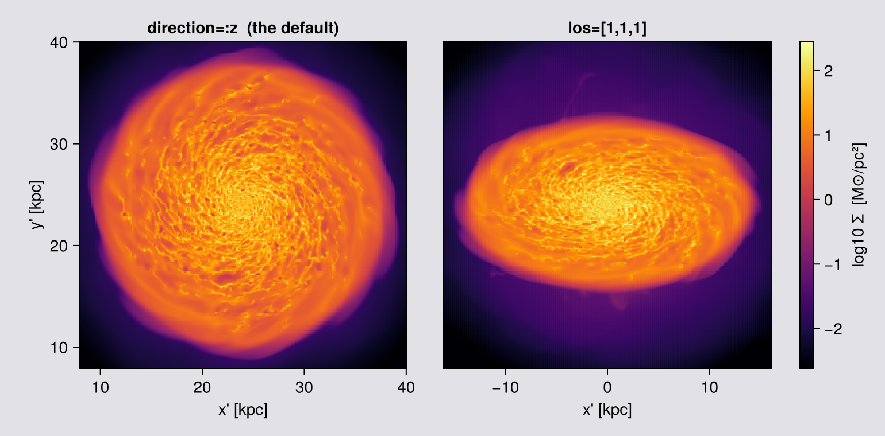
A direction Mera works out for you
For a disc galaxy the view you usually want is along its spin axis, and direction=:faceon and :edgeon compute that from the data. They are a convenience, not a different mechanism: they end up as a los vector like the one above, and you can print it to see which one. Chapter 6 and the Auto-Frame page show more ways to find a galaxy's centre and orientation.
:faceon/:edgeon and axis=:angmom derive the orientation from the angular momentum of the loaded data about center. center defaults to the box corner, and L about a corner is dominated by the lever arm of the whole box. You get a plausible-looking tilted galaxy, with no error and no warning. Always pass center=[:bc], or the object's own centre. Chapter 6 says what it sums over and how to check it; Chapter 8 gives the test that catches a wrong centre.
# The convenience form, in the same window as the two maps above. Print the line of sight it chose
# and compare it with the ones you typed: :faceon is a `los` you did not have to work out.
fo = projection(gas, :sd, :Msol_pc2; direction=:faceon, win...)
eo = projection(gas, :sd, :Msol_pc2; direction=:edgeon, win...)
println("line of sight ŵ = ", round.(fo.los, digits=3))
println("image up û = ", round.(fo.up, digits=3))
println("projection centre (box fraction) = ", round.(fo.center, digits=3))
println("frame: ", size(fo.maps[:sd]), " and ", size(eo.maps[:sd]))
cr = sharedrange([fo, eo], :sd)
display(maprow([fo, eo], :sd, ["direction=:faceon", "direction=:edgeon"]; crange=cr))
# The SAME camera on the stars. Nothing about the view changes, only the data handed to it, which
# is the point: `direction`, `fov` and `pxsize` mean exactly what they meant above.
#
# The stars get their OWN colour range. Σ_star and Σ_gas are different quantities with different
# magnitudes, so sharing a range would wash one of them out. And at this 100 pc pixel the outskirts
# speckle, because 628 thousand points over the disc leave about 15 stars in a pixel here: that
# noise is the price of a point tracer, and Chapter 11 picks pixels that pay less of it.
# ONE change from the gas window: `aperture=:circle`. The gas fills the fov=16 sphere so a square
# costs it nothing; the stars do not, and a square would cut this panel down to the thickness of
# the star layer. Chapter 3 states the rule and measures it.
star_win = (center=[:bc], fov=16, fov_unit=:kpc, aperture=:circle,
pxsize=[0.1, :kpc], verbose=false, show_progress=false)
hero_sfo = projection(part, :sd, :Msol_pc2; direction=:faceon, star_win...)
hero_seo = projection(part, :sd, :Msol_pc2; direction=:edgeon, star_win...)
maprow([hero_sfo, hero_seo], :sd, ["stars, direction=:faceon", "stars, direction=:edgeon"];
crange=sharedrange([hero_sfo, hero_seo], :sd))line of sight ŵ = [0.0, 0.001, 1.0]
image up û = [-0.0, 1.0, -0.001]
projection centre (box fraction) = [0.5, 0.5, 0.5]
frame: (321, 321) and (321, 321)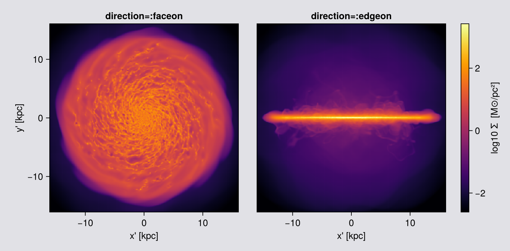
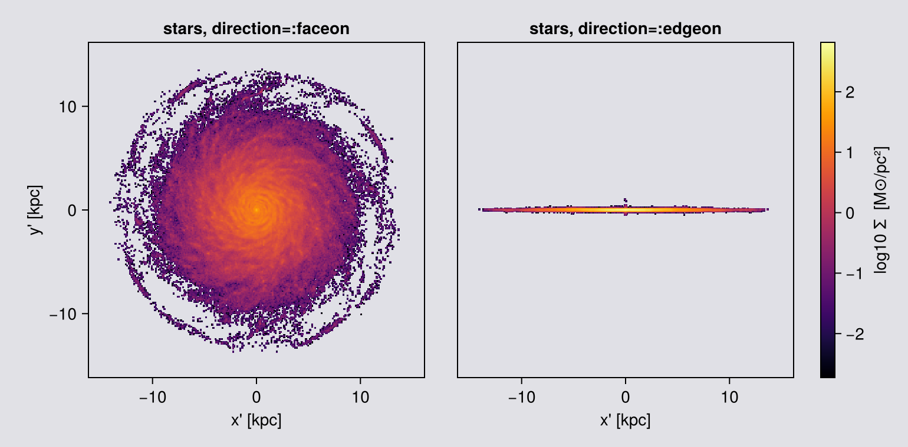
Read the output back:
m.mapsis a dict of 2-D arrays;m.maps[:sd]is the surface density inMsol_pc2.getextent(m, :kpc)returns[xmin, xmax, ymin, ymax]in the image plane, the rawm.extentis in code units, so always convert.m.los,m.up,m.cam_rightare the camera basis the call actually used;m.directionreads:offaxis.
The los vector printed above is not a number you chose. It is the disc's angular momentum axis, computed from your data about your center. Aligning the camera with the net angular momentum of the disc is the standard way to define a simulated galaxy's own frame (Abadi et al. 2003). The viewing angle is then an explicit parameter of the image, and a chosen one (Torrey et al. 2015; Bottrell et al. 2017).
How fine to make the pixels
pxsize sets the pixel size, and it is the keyword that decides the run time. Measured on the machine that renders this page, at fov=16, with 4 threads and the default :overlap (with 8 threads the fine end runs 30 to 40 % faster):
pxsize | map | time |
|---|---|---|
| 300 pc | 107² | 12.5 s |
| 100 pc | 321² | 13.7 s |
| 50 pc | 641² | 17.9 s |
| 20 pc | 1601² | 103 s |
| 11.7 pc, the finest cell in the run | 2731² | 452 s, 60 MB |
The rule: compare the pixel with the cells. While a pixel is larger than the cells it covers, a finer pixel costs almost nothing, because most of the time goes into reading every cell once. Once the pixel is smaller than the cells, the cost rises fast. On this mesh that happens near 50 pc. On another mesh it happens elsewhere, so estimate it from your own lmax.
Why. :overlap spreads each cell over n³ sample points, with n = ⌈cell size / pixel⌉. While the pixel is larger than the cell, n is 1. Below that, the cost grows with the cube of the ratio: in the table, 300 to 100 pc costs 10 % more time, 100 to 20 pc eight times more.
Two chapters choose their own pixel on purpose: Chapter 7, where the ratio of pixel to cell is the experiment, and Chapter 11, where a star map is limited by the number of stars per pixel.
The mass on a gas map does not change with pxsize (Chapter 8). The line-of-sight velocity dispersion σ_LOS hardly changes on this galaxy, but that is not true in general, so Chapter 8 measures it. Choose pxsize for the image you want, and state it.
# The one native-resolution figure on this page. The pixel is the finest cell in the run, so
# nothing is averaged away. It costs about 450 s and 60 MB for the map, against 12 to 20 s for
# every other figure here. Coarsen it if you are only re-running the page.
native = projection(gas, :sd, :Msol_pc2; direction=:faceon, center=[:bc],
fov=16, fov_unit=:kpc, aperture=:square,
pxsize=[gas.boxlen * gas.scale.kpc / 2^gas.lmax, :kpc],
verbose=false, show_progress=false)
println("native pixel : ", round(native.pixsize * native.scale.pc, digits=2), " pc")
println("map : ", size(native.maps[:sd]))
# ── figure code from here: drawing only, nothing new about Mera ──
# The stars at the SAME pixel, which is the one place the comparison is unkind to them on purpose.
# A cell has a size, so "native resolution" means something for gas: stop at the finest cell and
# nothing is averaged away. A particle is a point and has no size, so there is no pixel at which a
# star map stops improving. At 11.7 pc this frame holds about one star per twenty pixels, so what
# the right-hand panel shows is shot noise with a galaxy behind it, not structure.
snative = projection(part, :sd, :Msol_pc2; direction=:faceon, center=[:bc],
fov=16, fov_unit=:kpc, aperture=:square,
pxsize=[gas.boxlen * gas.scale.kpc / 2^gas.lmax, :kpc],
verbose=false, show_progress=false)
println("stars in the frame : ", length(part.data),
" pixels : ", prod(size(snative.maps[:sd])),
" occupied : ", round(100 * count(>(0), snative.maps[:sd]) /
length(snative.maps[:sd]), digits=1), " %")
fig = Figure(size=(1180, 640))
ax = Axis(fig[1,1], title="gas: Σ at the finest cell size in the run",
xlabel="x' [kpc]", ylabel="y' [kpc]")
h = showmap!(ax, native, :sd)
Colorbar(fig[1,2], h, label="log10 Σ [M⊙/pc²]")
ax2 = Axis(fig[1,3], title="stars: the same pixel, no native scale to stop at",
xlabel="x' [kpc]", ylabel="y' [kpc]")
h2 = showmap!(ax2, snative, :sd)
Colorbar(fig[1,4], h2, label="log10 Σ [M⊙/pc²]")
fignative pixel : 11.72 pc
map : (2731, 2731)
stars in the frame : 627896 pixels : 7458361 occupied : 12.1 %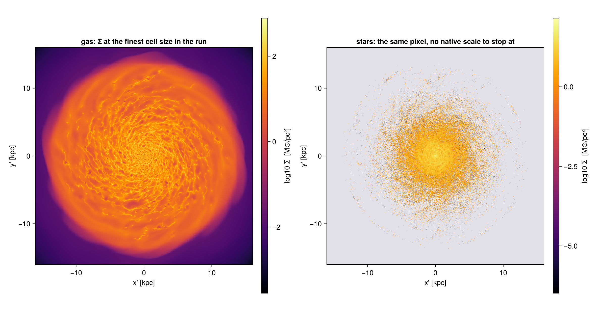
2. Pointing the camera
Give exactly one line-of-sight specifier. If you give two, Mera raises an error.
| you want | you say | needs the object? |
|---|---|---|
| a known viewing vector | los=[1,1,1] | no |
| down a box axis | direction=:x / :y / :z (:z is the default) | no |
| inclination from the box z | inclination=60 | no |
| turn the camera about the reference axis | azimuth= | no |
| a sky position angle | position_angle=30 | no |
| a disc flat on / on its side | direction=:faceon / :edgeon | yes |
| inclination from the disc's own spin axis | inclination=60, axis=:angmom | yes |
Modifiers, which combine with any of the above: up=, position_angle=, angle_unit=:deg (default) or :rad.
axis= takes :x, :y, :z, a 3-vector, or :angmom (alias :L). Combining it with direction=:faceon/:edgeon is an error, because those already use L.
How los becomes an image
Mera builds a right-handed orthonormal basis from los, and returns it on the map:
| field | is |
|---|---|
m.los | the viewing direction, normalised |
m.cam_right | image x, the map's first index |
m.up | image y, the map's second index |
with cam_right x up = los.
Without up=, the camera uses world +z as its up hint, and +y when the line of sight is within 3 degrees of the z axis. Along the six box directions this gives:
los | image x | image y | compared with the axis-aligned map |
|---|---|---|---|
[0,0,1] | +x | +y | the same orientation as direction=:z |
[0,0,-1] | -x | +y | direction=:z mirrored left to right: seen from the other side |
[1,0,0] | +y | +z | the same orientation as direction=:x |
[-1,0,0] | -y | +z | direction=:x mirrored |
[0,-1,0] | +x | +z | the same orientation as direction=:y |
[0,1,0] | -x | +z | direction=:y mirrored |
[1,1,1] | (-x+y)/√2 | (-x-y+2z)/√6 | no counterpart. Up is +z as seen across the line of sight |
"The same orientation" means the image axes agree. The pixel grids still differ slightly, because the two paths place pixel edges differently.
Pass up= whenever that is not what you want. position_angle then rolls the image about the line of sight, leaving m.los alone.
Meanings
inclination is the angle between the line of sight and the disc's spin axis, i = 0 face-on, the quantity observers infer from the projected axis ratio (Hubble 1926; Holmberg 1958). position_angle is the roll of the image, the analogue of the sky position angle measured from north through east (de Vaucouleurs et al. 1991). Together they are the pair a tilted-ring fit assigns to each radius (Rogstad, Lockhart & Wright 1974; Begeman 1989).
azimuth turns the camera about the reference axis. For an axisymmetric disc the picture only rotates, so it is a movie parameter rather than a modelling one, and it reappears in Chapter 13.
They cover the same directions when axis=:z, but the zero point differs by a quarter turn: inclination = theta, azimuth = phi + 90. phi is measured from +x, the usual spherical convention. azimuth starts 90 degrees later, so inclination=0 gives the same image orientation as direction=:z. Passing azimuth=phi rotates the picture by 90 degrees.
# Same window as Chapter 1, only `inclination` changes.
lad0 = projection(gas, :sd, :Msol_pc2; inclination=0, axis=:angmom, win...)
lad30 = projection(gas, :sd, :Msol_pc2; inclination=30, axis=:angmom, win...)
lad60 = projection(gas, :sd, :Msol_pc2; inclination=60, axis=:angmom, win...)
# Is `direction=:faceon` the same as `inclination=0, axis=:angmom`? Separate the two halves of
# that question, the LINE OF SIGHT and the ROLL, because the answer differs for each.
println("max |ŵ_faceon − ŵ_inc0| = ", maximum(abs, fo.los .- lad0.los))
println("angle(û_faceon, û_inc0) = ",
round(rad2deg(acos(clamp(sum(fo.up .* lad0.up), -1, 1))), digits=2), "°")
println("max |Σ_faceon − Σ_inc0| = ", round(maximum(abs, lad0.maps[:sd] .- fo.maps[:sd]), digits=1))
# ... and the roll is recoverable exactly:
lad0_pa = projection(gas, :sd, :Msol_pc2; inclination=0, axis=:angmom, position_angle=-90, win...)
println("max |Σ_faceon − Σ_inc0,PA=-90| = ", maximum(abs, lad0_pa.maps[:sd] .- fo.maps[:sd]))
# "Exactly one view specifier" and "direction implies :angmom" are promises about behaviour:
for (lbl, kw) in (("inclination + los", (inclination=35, los=[1,1,1])),
("direction=:faceon + axis", (direction=:faceon, axis=:angmom)))
e = try (projection(gas, :sd; kw..., win...); "NO ERROR") catch e; typeof(e).name.name end
println(rpad(lbl, 26), "→ ", e)
end
ladder = [lad0, lad30, lad60, eo] # i = 90 is the edge-on map from Chapter 1
cr = sharedrange(ladder, :sd)
display(maprow(ladder, :sd, ["i = 0°", "i = 30°", "i = 60°", "i = 90°"]; crange=cr))
# The same ladder on the stars. `axis=:angmom` is computed from the data it is given, so the star
# ladder tilts about the STARS' own angular momentum, not the gas's. The two axes agree closely
# here because the young stars were born from this gas, and the printed angle below says how
# closely rather than leaving it to the eye.
sladder = [projection(part, :sd, :Msol_pc2; inclination=i, axis=:angmom, star_win...)
for i in (0, 30, 60)]
push!(sladder, hero_seo) # i = 90 is the edge-on star map from Chapter 1
println("angle between the gas and star angular-momentum axes = ",
round(rad2deg(acos(clamp(abs(sum(lad0.los .* sladder[1].los)), -1, 1))), digits=2), "°")
maprow(sladder, :sd, ["stars, i = 0°", "stars, i = 30°", "stars, i = 60°", "stars, i = 90°"];
crange=sharedrange(sladder, :sd))max |ŵ_faceon − ŵ_inc0| = 0.0
angle(û_faceon, û_inc0) = 0.0°
max |Σ_faceon − Σ_inc0| = 0.0
max |Σ_faceon − Σ_inc0,PA=-90| = 171.2556376113621
inclination + los → ArgumentError
direction=:faceon + axis → ArgumentError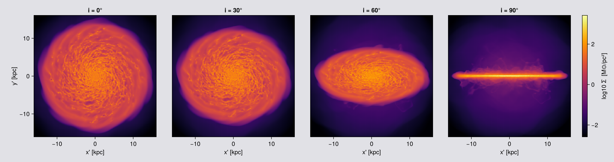
angle between the gas and star angular-momentum axes = 0.03°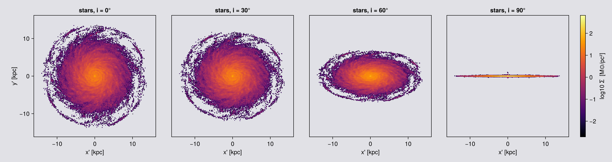
direction=:faceon and inclination=0, axis=:angmom give the same view: the same line of sight to the last bit, the same up vector, and a map difference of exactly zero.
A face-on view does not fix how the image is turned about the line of sight, so a rule has to choose it. Mera uses one rule for every way of pointing the camera: without up=, image up is world +z as the camera sees it, or +y when the line of sight is within 3 degrees of the z axis. inclination and azimuth are measured from the same reference, so inclination=0 is the face-on view, inclination=90 the edge-on view, and face_on(gas) passed to projection gives the same camera again.
The last printed line shows why one rule matters: turning the image by 90° changes the map by up to about 195 M⊙/pc². Two ways of asking for "face-on" that turned the image differently would disagree by that much.
In general: to compare two views, compare the camera vectors m.los and m.up, not the pixels. Two correct maps of the same view can differ by a turn of the image.
So: pick direction=:faceon/:edgeon when you want the disc's own frame, inclination+axis=:angmom when you want a specific i, and los= when you already know the vector, for example when you want the same orientation across many snapshots (the recipe at the end of the page).
3. Framing
Two ways to say what is in the picture, and they behave differently under rotation.
World ranges. xrange/yrange/zrange with center and range_unit select a box in the simulation, exactly as for the axis-aligned path and for subregion. The camera frame is then auto-fitted to the bounding box of that region after rotation, so:
- the frame grows with tilt, and frames at different angles are not comparable
- the window's own faces show up as straight edges across the image
- with no
zrange, the whole box depth of foreground and background sits in your disc map
fov. The camera is orthographic, so the only framing control is the half-width of the frame. fov selects a sphere about center, and a sphere projects to the same disc at every orientation. The frame is set by fov itself, centred on center, so it is the same at every angle and for every kind of data, whether the data fills the sphere or not.
aperture | selects | frame |
|---|---|---|
:circle (default) | sphere of radius fov | square array with empty corners, nothing cropped |
:square | sphere of radius √2·fov, then cropped | full ±fov square, filled to the corners |
Use :square for pictures and for frames you compare or animate, and :circle when you need a total, because the square crop drops what lies outside it.
fov_unit defaults to :standard, which is a box fraction. fov=16 alone means 16 box lengths, silently clamped to the cap. Always write fov=16, fov_unit=:kpc.
What fov does, and which to use
fov is not a zoom. The camera is orthographic, so there is no distance to change. fov selects data, and for :square then crops the finished map:
- a
subregionsphere aboutcenter, radiusfovfor:circle,√2·fovfor:square - projected onto a frame that
fovfixes: symmetric aboutcenter, the same size at every angle, whether the data fills it or not - for
:squareonly, cropped to the central2·fov / pixelpixels
Two side effects of step 1: fov replaces any xrange/yrange/zrange, and center is then read in fov_unit, so range_unit is discarded. Step 3 is the one that can cost mass: what lies in the sphere but outside the square is not on the map.
With no fov there is no sphere and no crop: every selected cell lands on the map, but the frame breathes with the viewing angle.
| what you are doing | pass | why |
|---|---|---|
| a mass, a budget, a conservation check | no fov | every selected cell is on the map, so the map total is the object total |
| measuring in a region you define | world ranges, no fov | a box you control, at the price of a frame that breathes |
| measuring something centred, one angle | fov + :circle | a selection with no crop after it |
| a picture, or frames that must match | fov + :square | same pixel dimensions at every angle, at the price of the corners |
| an orbit movie | rotation_sequence with fov | the same sphere, swept (Chapter 13) |
With fov and :square the map does not hold all the mass, and how much is missing depends on the angle, because the crop is a square and the object is not. Check before quoting: sum(m.maps[:sd]) * (m.pixsize * m.scale.pc)^2 against msum(obj, :Msol).
Without fov, a fitted frame is not a centred frame. The frame is then fitted to the extent of the selected data, not to its centre of mass. The gas fills the box, so the two agree. The stars do not: their centre of mass sits 8 pc from the box centre, but their extent runs −14.00 to +13.61 kpc across and −0.47 to +1.02 kpc vertically, set by a handful of outliers. 99.9 % of the stellar mass lies inside |z| < 0.21 kpc, so an edge-on star frame is set by about one star in a thousand and the disc sits visibly off centre in it. Nothing is wrong; pass fov, which centres the frame on center, or fix the axes yourself.
The cap is silent. fov is clamped to 0.49·boxlen for :circle and 0.49/√2·boxlen for :square: on this 48 kpc box, 23.52 and 16.63 kpc. Ask for 20 kpc with :square and you get 16.63 with no warning. For an object larger than the cap, use world ranges.
# WORLD-space window, verbose=true so Mera's own hint about this is on the page.
world = projection(gas, :sd, :Msol_pc2; inclination=60, axis=:angmom, center=[:bc],
xrange=[-16,16], yrange=[-16,16], range_unit=:kpc,
pxsize=[0.1,:kpc], verbose=true, show_progress=false)
# CAMERA-plane frame, rotation-invariant sphere selection.
sq = projection(gas, :sd, :Msol_pc2; inclination=60, axis=:angmom, center=[:bc],
fov=16, fov_unit=:kpc, aperture=:square,
pxsize=[0.1,:kpc], verbose=false, show_progress=false)
ci = projection(gas, :sd, :Msol_pc2; inclination=60, axis=:angmom, center=[:bc],
fov=16, fov_unit=:kpc, aperture=:circle,
pxsize=[0.1,:kpc], verbose=false, show_progress=false)
for (nm, m) in (("xrange/yrange ±16 kpc", world), ("fov=16 :square", sq), ("fov=16 :circle", ci))
println(rpad(nm, 24), " frame ", lpad(string(size(m.maps[:sd])), 12),
" extent [kpc] = ", round.(getextent(m, :kpc), digits=1))
end
# The same three windows on the stars. These 628 thousand young stars do not fill the +-16 kpc
# window the gas fills, and the two kinds of window show it differently. The world range is fitted
# to the data, so the star frame comes out smaller than the gas frame. `fov` is not: it fixes the
# frame, so both `fov` rows have the same window as the gas rows above, with empty sky around the
# disc. The square window matches pixel for pixel; the circle frame on gas is one coarse cell
# wider. That is what makes gas and star maps directly comparable.
println()
star_frames = NamedTuple[]
for (nm, kw) in (("xrange/yrange ±16 kpc", (xrange=[-16,16], yrange=[-16,16], range_unit=:kpc)),
("fov=16 :square", (fov=16, fov_unit=:kpc, aperture=:square)),
("fov=16 :circle", (fov=16, fov_unit=:kpc, aperture=:circle)))
m = projection(part, :sd, :Msol_pc2; inclination=60, axis=:angmom, center=[:bc],
kw..., pxsize=[0.1,:kpc], verbose=false, show_progress=false)
push!(star_frames, (name=nm, map=m))
println(rpad("stars, " * nm, 24), " frame ", lpad(string(size(m.maps[:sd])), 12),
" extent [kpc] = ", round.(getextent(m, :kpc), digits=1))
end[Mera] Hint: off-axis view with `xrange`/`yrange` but no `zrange`.
These are WORLD-space bounds, so after rotation the full box depth folds into
the image. Pass `zrange`, or `fov=<half-width>` for a fixed camera frame.
(shown once per session; verbose(false) silences Mera's messages)
[Mera]: 2026-10-11T19:18:25.952
center: [0.5, 0.5, 0.5] ==> [24.0 [kpc] :: 24.0 [kpc] :: 24.0 [kpc]]
domain:
xmin::xmax: 0.1666667 :: 0.8333333 ==> 8.0 [kpc] :: 40.0 [kpc]
ymin::ymax: 0.1666667 :: 0.8333333 ==> 8.0 [kpc] :: 40.0 [kpc]
zmin::zmax: 0.0 :: 1.0 ==> 0.0 [kpc] :: 48.0 [kpc]
Selected var(s)=(:sd,)
Weighting = :mass
Off-axis LOS = [0.0, -0.8657, 0.5006] (binning=:overlap)
Effective resolution: 481^2 → map size: 330 x 576
xrange/yrange ±16 kpc frame (330, 576) extent [kpc] = [-16.5, 16.5, -28.8, 28.7]
fov=16 :square frame (321, 321) extent [kpc] = [-16.0, 16.0, -16.0, 16.0]
fov=16 :circle frame (330, 330) extent [kpc] = [-16.5, 16.5, -16.5, 16.5]
stars, xrange/yrange ±16 kpc frame (279, 139) extent [kpc] = [-14.1, 13.7, -6.9, 6.9]
stars, fov=16 :square frame (321, 321) extent [kpc] = [-16.0, 16.0, -16.0, 16.0]
stars, fov=16 :circle frame (323, 323) extent [kpc] = [-16.1, 16.1, -16.1, 16.1]# ── figure code from here: drawing only, nothing new about Mera ──
cr = sharedrange([world, sq, ci], :sd)
ttl = ["xrange/yrange = ±16 kpc\n" * string(size(world.maps[:sd])),
"fov=16, aperture=:square\n" * string(size(sq.maps[:sd])),
"fov=16, aperture=:circle\n" * string(size(ci.maps[:sd]))]
# BOTH ROWS ON ONE PAIR OF LIMITS. The world-range frame is the tallest thing here (±28.8 kpc
# against the ±16 that was asked for), so the limits are chosen to hold it. Every other panel then
# shows its true size inside that same box: the `fov` frames as smaller squares, the stars smaller
# still. Auto-scaling each panel instead makes every one fill its axis, which hides exactly the
# difference these six panels exist to show.
const FRAME_LIM = (-17.5, 17.5, -30.0, 30.0)
# THE OVERLAY HAS TO MATCH WHAT WAS ASKED FOR, or it teaches the wrong thing. `xrange`/`yrange` and
# `aperture=:square` request a SQUARE; `aperture=:circle` requests a DISC of radius `fov`. Drawing a
# square on the circular panel would show a boundary that was never requested and is not where the
# selection ends.
function request_outline!(ax, shape, r)
if shape === :square
lines!(ax, [-r,r,r,-r,-r], [-r,-r,r,r,-r], color=:dodgerblue, linestyle=:dash, linewidth=2)
else
t = range(0, 2π, length=200)
lines!(ax, r .* cos.(t), r .* sin.(t), color=:dodgerblue, linestyle=:dash, linewidth=2)
end
end
# A fourth window, the rectangular one, so the gas row has the same four panels as the star row
# below and the two can be read down the columns. It also makes a point on its own: a rectangle has
# to match the object. These are the same 16x4 kpc half-widths that suit the thin stellar layer,
# and on the gas they cut the disc, because seen at 60 degrees the gas is far thicker than 4 kpc.
gas_rect = projection(gas, :sd, :Msol_pc2; inclination=60, axis=:angmom, center=[:bc],
fov=[16,4], fov_unit=:kpc, aperture=:square, pxsize=[0.1,:kpc],
verbose=false, show_progress=false)
gmaps = [world, sq, ci, gas_rect]
gttl = vcat(ttl, ["fov=[16,4] :square\n" * string(size(gas_rect.maps[:sd]))])
fig = maprow(gmaps, :sd, gttl; crange=sharedrange(gmaps, :sd))
for (k, shape) in enumerate((:square, :square, :circle, :rect))
ax = contents(fig[1,k])[1]
if shape === :rect
lines!(ax, [-16,16,16,-16,-16], [-4,-4,4,4,-4], color=:dodgerblue, linestyle=:dash, linewidth=2)
else
request_outline!(ax, shape, 16) # the ±16 kpc that was requested, in its own shape
end
limits!(ax, FRAME_LIM...)
end
display(fig)
# The same windows on the stars. The world range fits the stars and comes out smaller; both `fov`
# frames are the requested size, the same as for the gas. `fov=[16,4]` keeps the disc whole AND
# stops paying for the empty sky above and below it.
star_rect = projection(part, :sd, :Msol_pc2; inclination=60, axis=:angmom, center=[:bc],
fov=[16,4], fov_unit=:kpc, aperture=:square, pxsize=[0.1,:kpc],
verbose=false, show_progress=false)
smaps = vcat([f.map for f in star_frames], [star_rect])
sttl = vcat([f.name * "\n" * string(size(f.map.maps[:sd])) for f in star_frames],
["fov=[16,4] :square\n" * string(size(star_rect.maps[:sd]))])
figs4 = maprow(smaps, :sd, sttl; crange=sharedrange(smaps, :sd))
# Same pixel and same limits as the gas row, so the two rows can be read down the columns. Each
# outline is the shape that panel actually requested.
for (k, shape, r) in ((1, :square, 16), (2, :square, 16), (3, :circle, 16), (4, :rect, 16))
ax = contents(figs4[1,k])[1]
if shape === :rect
lines!(ax, [-16,16,16,-16,-16], [-4,-4,4,4,-4], color=:dodgerblue, linestyle=:dash, linewidth=2)
else
request_outline!(ax, shape, r)
end
limits!(ax, FRAME_LIM...)
end
figs4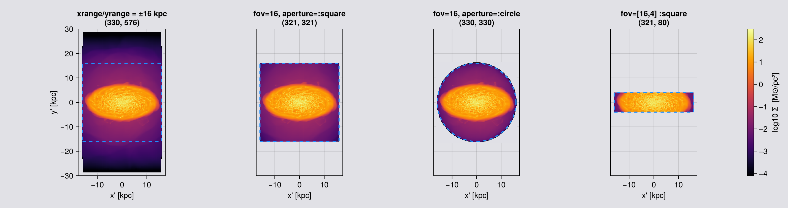
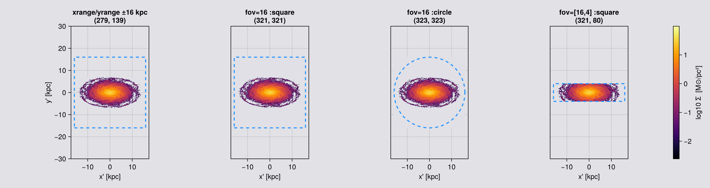
Read the frame sizes above, not just the pictures. The ±16 kpc request came back far taller: xrange/yrange/zrange bound a box in simulation coordinates, and the frame is that box's bounding box after rotation. The dashed blue outline is what was asked for, drawn in the shape it was asked in: a square for xrange/yrange and for aperture=:square, a circle for aperture=:circle, which selects a disc and not a box. Everything outside it is the rotated box's own footprint, and its faces are the straight edges cutting across the map.
Those faces are worse than cosmetic. A sight line just inside the slab crosses its full depth; a sight line just outside clips only a corner. The column density therefore drops along a straight line, a hard edge that looks like a rendering artefact but is the selection box seen from an angle.
fov avoids all of this by framing the camera plane instead. The selection is a sphere, which projects to the same disc at every orientation, so the frame cannot breathe.
Mera prints a one-off note when it sees an off-axis view with a windowed xrange/yrange and no zrange, because the result is easy to mistake for a bug in the data.
Choosing fov
fov is a half-width: the frame spans ±fov, so fov=15, fov_unit=:kpc is a 30 kpc image.
A given fov buys an uneven depth. The selection is a sphere of radius R (fov for :circle, √2·fov for :square), so a ray at in-plane distance d integrates a chord, not a slab: depth(d) = 2·√(R² − d²). For fov=15, :square (R = 21.2 kpc):
| where in the frame | offset | column depth |
|---|---|---|
| centre | 0 kpc | 42.4 kpc |
| middle of an edge | 15 kpc | 30.0 kpc |
| corner | 21.2 kpc | 0 kpc |
The corners of a :square frame sit on the selection sphere and integrate nothing. That soft darkening in the corners of any fov map of a diffuse field is the selection boundary, not the gas. Chapter 4 is how you make the depth even.
Rule: make fov comfortably larger than the structure you are measuring, and never read a diffuse column, profile or scale height out to the frame boundary.
Picking one. Take the radius holding the mass fraction you care about and leave room. The gas disc here is about 23 kpc across with nine tenths of its mass inside 11.4 kpc, so fov=16 leaves it where the depth is nearly flat.
Changing it deliberately. A smaller fov is also a shallower column, so it removes foreground and background, and it buys resolution because the same pixels cover less sky. A larger one buys context and a deeper column, at the price of more unrelated material on every ray.
# What `fov` actually changes, in one row: the same camera and the same pixel at four widths.
# Each frame is a different SELECTION, so it is also a different column depth (see the table
# above), not merely a crop of the widest one.
fkw = (los=[1.,2,3], center=[:bc], fov_unit=:kpc, aperture=:square, pxsize=[0.25,:kpc],
verbose=false, show_progress=false)
sweep = [projection(gas, :sd, :Msol_pc2; fov=f, fkw...) for f in (4, 8, 16, 23)]
# The delivered half-width, not the requested one: `fov` is capped silently, and the depth
# follows what you GOT. Reading the requested number here would overstate the last row.
println(rpad("fov asked", 11), rpad("delivered", 11), rpad("frame [px]", 13),
rpad("extent [kpc]", 20), "central depth [kpc]")
for (f, m) in zip((4, 8, 16, 23), sweep)
ex = getextent(m, :kpc)
got = (ex[2] - ex[1]) / 2 # half-width actually delivered
println(rpad(f, 11), rpad(round(got, digits=2), 11), rpad(string(size(m.maps[:sd])), 13),
rpad(string(round(ex[2]-ex[1], digits=2), " x ", round(ex[4]-ex[3], digits=2)), 20),
round(2*sqrt(2)*got, digits=1))
end
maprow(sweep, :sd, ["fov = $(f) kpc" for f in (4, 8, 16, 23)];
crange=sharedrange(sweep, :sd))fov asked delivered frame [px] extent [kpc] central depth [kpc]
4 3.98 (32, 32) 7.96 x 7.96 11.3
8 7.96 (64, 64) 15.92 x 15.92 22.5
16 16.04 (129, 129) 32.08 x 32.08 45.4
23 16.66 (134, 134) 33.33 x 33.33 47.1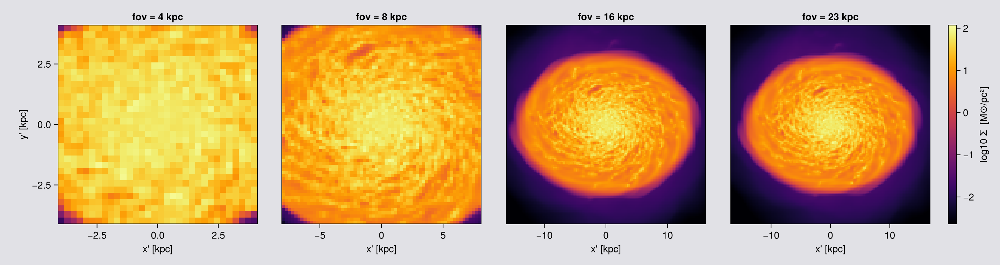
Four widths, one camera. The frame shrinks in pixels as fov shrinks, because the pixel size is held fixed, and the column gets shallower with it: the selection is a sphere, so halving fov halves the depth at the centre of the frame as well as the width. A smaller fov is therefore not a crop of the larger one, and the surface density in the middle is genuinely lower because less material lies along each ray.
The widest frame here is at the :square cap for this box (16.63 kpc), so asking for 23 gives the cap without a warning.
Moving the frame: center is where the camera points
center is the origin of the frame, not a property of the object. Move it and the camera pans, with no rotation and no manual re-selection.
- The axis numbers do not change.
getextentis measured from the centre, so every panel reads ±10 kpc wherever it points. Readm.centerfor where the frame sits. - Panning off the object is cheaper, because a projection is priced by the cells it touches: about 6 s on the disc here against about 1 s out in the corner, for the same call.
# ONE camera direction, four places to point it. Nothing about the view changes between panels:
# same `los`, same `fov`, same pixel. Only `center` moves, so this is a pan across the box.
BC = gas.boxlen * gas.scale.kpc / 2 # 24 kpc, the box centre
pans = [("centre", [BC, BC, BC]),
("8 kpc along x", [BC+8, BC, BC]),
("8 kpc along y", [BC, BC+8, BC]),
("12 kpc out, corner",[BC+12, BC+12, BC])]
panmaps = NamedTuple[]
for (lbl, ctr) in pans
t = @elapsed m = projection(gas, :sd, :Msol_pc2; los=[1.,2.,3.], center=ctr, range_unit=:kpc,
fov=10, fov_unit=:kpc, aperture=:circle, pxsize=[0.1,:kpc],
verbose=false, show_progress=false)
push!(panmaps, (label=lbl, map=m, secs=t))
end
println(rpad("center", 22), rpad("t [s]", 8), rpad("extent [kpc]", 30), "mass in frame [Msol]")
for (p, (lbl, ctr)) in zip(panmaps, pans)
println(rpad(lbl, 22), rpad(round(p.secs, digits=1), 8),
rpad(string(round.(getextent(p.map, :kpc), digits=1)), 30),
round(sum(p.map.maps[:sd]) * (p.map.pixsize * p.map.scale.pc)^2, sigdigits=4))
end
# One colour range across the four, so "the outskirts are emptier" is something you can see rather
# than something each panel hides by stretching itself.
maprow([p.map for p in panmaps], :sd,
[p.label * "\n" * string(round.(Int, p.map.center .* gas.boxlen .* gas.scale.kpc)) * " kpc"
for p in panmaps];
crange=sharedrange([p.map for p in panmaps], :sd))center t [s] extent [kpc] mass in frame [Msol]
centre 5.8 [-10.3, 10.3, -10.3, 10.3] 5.453e9
8 kpc along x 3.8 [-10.4, 10.4, -10.4, 10.4] 3.699e9
8 kpc along y 3.0 [-10.4, 10.4, -10.4, 10.4] 3.692e9
12 kpc out, corner 0.8 [-10.8, 10.8, -10.8, 10.8] 5.032e8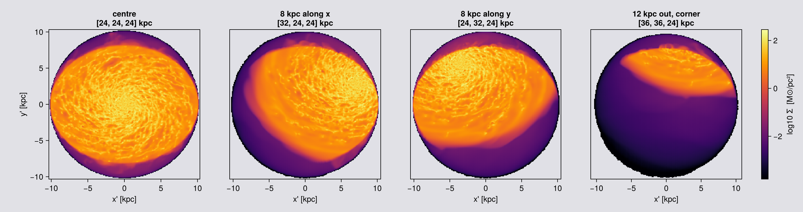
The same idea as a movie. The camera keeps one direction and one field of view, and the centre walks across the box, so the galaxy drifts through the frame and out the other side. This is the cheapest way to see what is where in a box you do not know yet.
# A pan: `center` walks along x while everything else is held. `rotation_sequence` turns the camera,
# so it is the wrong tool here; a pan is just a loop over `center`, which is why no special API is
# needed for it.
#
# Cost is modest and uneven: frames pointed at the disc touch the most cells, frames pointed at the
# outskirts touch few, so the sweep is fastest where there is least to see.
pancentres = [[x, BC, BC] for x in range(BC-14, BC+14, length=60)]
panseq = [projection(gas, :sd, :Msol_pc2; los=[1.,2.,3.], center=ctr, range_unit=:kpc,
fov=10, fov_unit=:kpc, aperture=:circle, pxsize=[0.15,:kpc],
verbose=false, show_progress=false) for ctr in pancentres]
crp = sharedrange(panseq, :sd) # one range for the whole pan, so brightness means something
figp = Figure(size=(360, 360))
axp = Axis(figp[1, 1], aspect=DataAspect(), title="pan: center walks across the box")
hidedecorations!(axp)
record(figp, "assets/offaxis/pan_movie.gif", eachindex(panseq); framerate=20) do k
empty!(axp)
showmap!(axp, panseq[k], :sd; crange=crp)
end
println("wrote assets/offaxis/pan_movie.gif (", length(panseq), " frames, ",
round(filesize("assets/offaxis/pan_movie.gif")/1024, digits=1), " KB)")wrote assets/offaxis/pan_movie.gif (60 frames, 5835.6 KB)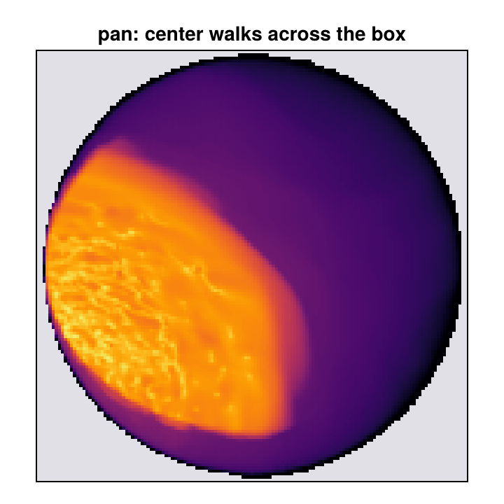
What the pan is good for. Finding things. A simulation box is mostly empty and an object you have not located yet will not be at the centre. Panning at a fixed fov is a survey: it costs little where there is nothing, and it tells you where to point properly. Once you know, set center there and go back to one frame.
A frame that is not square: fov=[wx, wy]
An edge-on disc is a thin strip, and in a square frame most pixels are empty sky at the same cost as the ones with the galaxy in them. Two half-widths spend them where the object is.
Requires aperture=:square: a rectangle has no single radius, while :circle selects a disc, which has one. A scalar fov is unchanged.
# Same camera, same pixel, same data. Only the shape of the frame changes.
fkw = (direction=:edgeon, center=[:bc], fov_unit=:kpc, aperture=:square,
pxsize=[0.1,:kpc], verbose=false, show_progress=false)
sq = projection(gas, :sd, :Msol_pc2; fov=16, fkw...)
rect = projection(gas, :sd, :Msol_pc2; fov=[16,4], fkw...)
for (lbl, m) in (("fov=16", sq), ("fov=[16,4]", rect))
npx = prod(size(m.maps[:sd]))
println(rpad(lbl, 12), " frame ", rpad(string(size(m.maps[:sd])), 12),
" pixels ", rpad(npx, 9),
" extent ", round.(getextent(m, :kpc), digits=1))
end
println("the rectangle uses ", round(100*prod(size(rect.maps[:sd]))/prod(size(sq.maps[:sd])), digits=1),
" % of the square's pixels for the same disc")
maprow([sq, rect], :sd, ["fov=16, a square frame", "fov=[16,4], the same disc"];
crange=sharedrange([sq, rect], :sd))fov=16 frame (321, 321) pixels 103041 extent [-16.0, 16.0, -16.0, 16.0]
fov=[16,4] frame (321, 80) pixels 25680 extent [-16.0, 16.0, -4.0, 4.0]
the rectangle uses 24.9 % of the square's pixels for the same disc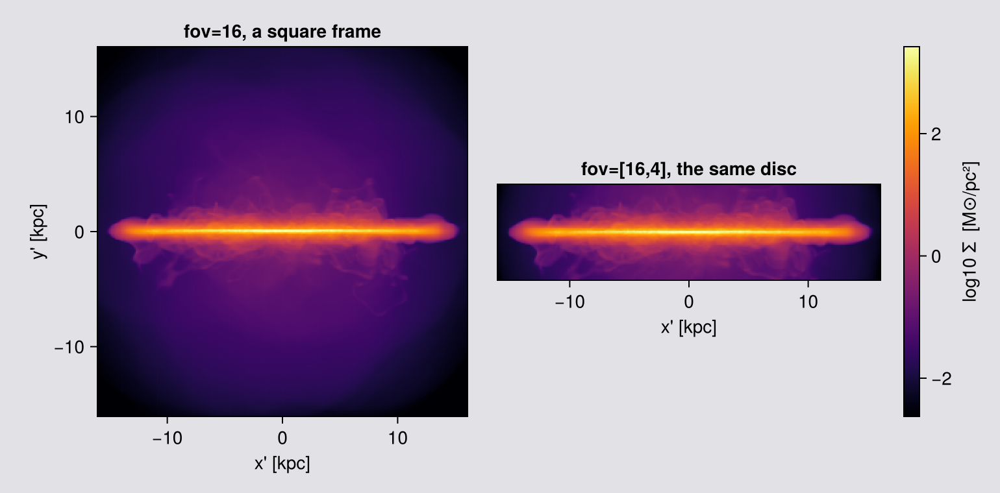
4. Depth along the line of sight
Every window so far is world space. Tilt the camera and zrange becomes a slab through the box, not through the image. With fov it is subtler: a sphere is deep at the centre of the frame and shallow at the edge, so the integration depth changes across the picture (Chapter 3).
depth is the one cut measured along the viewing direction itself.
| you want | you write |
|---|---|
a slab of half-thickness 2 kpc about center | depth=2, depth_unit=:kpc |
| more behind than in front | depth=[-2, 6], depth_unit=:kpc |
| everything (the default) | omit it |
On a box-axis view the line of sight is a box axis, so zrange already cuts this slab and depth raises there and says so.
By default the cut keeps a cell whole if its centre is inside. Chapter 5 is what to do when that half-cell step matters.
How to read the figure below. The line of sight is [1,2,3], so the camera looks at the disc at an angle and the disc appears as a tilted ellipse. The depth slab is perpendicular to the line of sight, so it is not parallel to the disc. A ±2 kpc slab therefore keeps only a band of the disc, the part whose distance from the centre along the view is less than 2 kpc, and the ellipse becomes a strip. That is the cut working, not a rendering error.
The panels show the central ±20 kpc. The call has no fov, so the frame is fitted to the whole 48 kpc box. Seen along a tilted direction, a cube casts a six-sided shadow, and the rectangular frame around it has empty corners where there is no data at all. They are cut away here because they say nothing about the galaxy.
# The same camera three times, with the depth window the only difference. Count the mass: a depth
# cut is a selection, so the map total says exactly what fraction of the object is kept.
Mgas_all = msum(gas, :Msol)
dkw = (los=[1.,2.,3.], center=[:bc], pxsize=[0.2,:kpc], verbose=false, show_progress=false)
depths = [(nothing, "no cut, the whole box"),
(5.0, "depth = ±5 kpc"),
(2.0, "depth = ±2 kpc")]
dmaps = NamedTuple[]
println(rpad("window", 26), rpad("mass in map [Msol]", 22), "fraction of the object")
for (d, lbl) in depths
m = d === nothing ? projection(gas, [:mass, :sd], [:Msol, :Msol_pc2]; dkw...) :
projection(gas, [:mass, :sd], [:Msol, :Msol_pc2]; depth=d, depth_unit=:kpc, dkw...)
push!(dmaps, (label=lbl, map=m))
println(rpad(lbl, 26), rpad(round(sum(m.maps[:mass]), sigdigits=6), 22),
round(sum(m.maps[:mass]) / Mgas_all, digits=4))
end
# One colour range, so "the thin slab is fainter" is visible rather than hidden by each panel
# stretching itself. The disc survives every cut; what disappears is the material in front of and
# behind it, which is exactly the contamination a column density should not carry.
#
# The panels are limited to the central ±20 kpc. The frame itself covers the whole box, whose
# shadow along a tilted line of sight has six sides, so the full frame has empty corners.
maprow([d.map for d in dmaps], :sd, [d.label for d in dmaps];
crange=sharedrange([d.map for d in dmaps], :sd), lims=(-20, 20, -20, 20))window mass in map [Msol] fraction of the object
no cut, the whole box 6.99534e9 1.0
depth = ±5 kpc 6.04271e9 0.8638
depth = ±2 kpc 3.34081e9 0.4776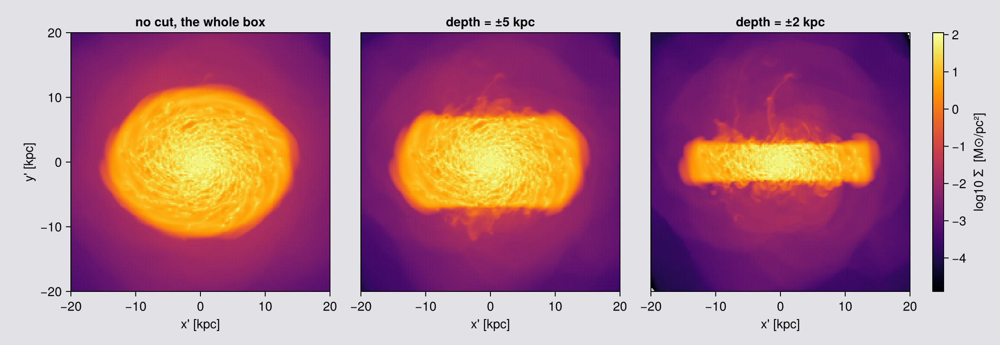
5. Whole cells or partial ones
A cut has to decide what to do with a cell it passes through. By default every off-axis cut keeps the cell whole if its centre is inside, and drops it whole otherwise. split=true weights it by the fraction of its volume that is really inside.
split=false (default) | split=true | |
|---|---|---|
depth slab | kept whole if the centre is in | weighted by the volume inside |
fov sphere | kept whole if it reaches the sphere | weighted by its overlap |
Reach for it when the edge is a real part of the measurement: a small aperture, a thin slab, or any time you stack slabs and expect them to re-sum.
split is grid only: it is not a keyword of the particle projection, so passing it is a MethodError. A point has no volume to split.
This is the same idea the region algebra already offers, and that one flows into off-axis maps too: subregion(gas, sphere(10; center=[:bc], range_unit=:kpc); split=true) attaches a :fraction column that getvar(:mass) and getvar(:volume) use.
# Two questions, both answered by a total, so `binning` is irrelevant here: every kernel is a
# partition of unity and conserves the total exactly (to rounding error). `:ngp` is the cheapest.
skw = (los=[1.,2,3], center=[:bc], pxsize=[0.5,:kpc], binning=:ngp,
verbose=false, show_progress=false)
slabmass(m) = sum(m.maps[:mass])
# 1. ADDITIVITY. Cut one slab into N adjacent pieces and add the pieces back up. Each cell must
# be counted once in total, however many faces cross it.
println("ADDITIVITY of a [-20,20] kpc slab, re-summed from N pieces")
for sp in (false, true)
ref = slabmass(projection(gas, :mass, :Msol; depth=[-20.,20.], depth_unit=:kpc, split=sp, skw...))
print(rpad(" split=$(sp)", 16), "single slab ", round(ref, sigdigits=9))
for N in (2, 4)
e = range(-20, 20, length=N+1)
s = sum(slabmass(projection(gas, :mass, :Msol; depth=[e[i],e[i+1]], depth_unit=:kpc,
split=sp, skw...)) for i in 1:N)
print(" N=$(N): ", round(100*(s-ref)/ref, digits=4), "%")
end
println()
end
# 2. A SMALL APERTURE, against the mass of the sphere it selected. `msum` on a split subregion is
# the independent answer: it never goes near the projection code.
println("\nAPERTURE: does the map hold the mass of the sphere it selected?")
println(rpad(" fov [kpc]", 12), rpad("whole cells", 16), rpad("split", 16), "true (msum)")
for R in (3, 6, 12)
truth = msum(subregion(gas, sphere(float(R); center=[:bc], range_unit=:kpc);
split=true, verbose=false), :Msol)
a = slabmass(projection(gas, :mass, :Msol; fov=R, fov_unit=:kpc, aperture=:circle, skw...))
b = slabmass(projection(gas, :mass, :Msol; fov=R, fov_unit=:kpc, aperture=:circle,
split=true, skw...))
println(rpad(" $(R)", 12),
rpad(string(round(100*(a-truth)/truth, digits=3), "%"), 16),
rpad(string(round(100*(b-truth)/truth, digits=3), "%"), 16),
round(truth, sigdigits=6))
endADDITIVITY of a [-20,20] kpc slab, re-summed from N pieces
split=false single slab 6.99466224e9 N=2: 0.0063% N=4: 0.0063%
split=true single slab 6.99466087e9 N=2: 0.0% N=4: 0.0%
APERTURE: does the map hold the mass of the sphere it selected?
fov [kpc] whole cells split true (msum)
3 0.448% -0.0% 1.20219e9
6 0.239% -0.0% 3.24183e9
12 0.22% 0.0% 6.32512e9Read the additivity line first. With whole cells, the pieces add up to more than the slab they came from, and cutting into more pieces does not make the error smaller. The reason is double counting: seen along [1,2,3], many cell centres lie exactly on a cut, and a cell whose centre is on the cut is kept by both neighbouring pieces. split=true gives such a cell a share on each side, so the pieces add up exactly.
The aperture line shows the same for a curved edge. With whole cells a small aperture gets too much mass, because the cells along its edge are a large part of a small sphere. With split=true the map holds the mass of the selected sphere, to round-off, at every radius.
The cost: split=true samples every cell that an edge passes through. Cells fully inside or outside need only a quick test, so the cost grows with the area of the cut, not with its volume.
6. Choosing the axis from the data
direction=:faceon, :edgeon and axis=:angmom all ask the same question of the data:
L = [sum(getvar(obj, :lx, center=center)),
sum(getvar(obj, :ly, center=center)),
sum(getvar(obj, :lz, center=center))]Three things follow from this:
- It is the whole loaded object, not the galaxy. Load a box and
Lis dominated by whatever carries the most angular momentum times lever arm, usually the outskirts.angmom_radiusrestricts the sum to a sphere aboutcenter. - It is measured about
center. Wrong origin, confident and wrong axis. - It is per object. Gas and stars each have their own, so
:faceonon one is a different camera from:faceonon the other.
For anything beyond one object's own axis, ask for the vector and reuse it:
angmom(gas; center=[:bc], range_unit=:kpc) | the vector itself |
angmom(gas; radius=[10,:kpc]) | from a sphere about center |
angmom(gas; mask=cold) | from part of the data (Chapter 10) |
angmom([gas, stars, dm]; ...) | one axis from several components, momenta added |
angmom(gas; vcenter=:auto) | without the bulk motion of the object |
face_on / edge_on | a frame whose los/up/center splat into any call |
Feed the result to any view with axis=L or los=L. It is also the cheap route: L costs a full pass over the data, and the presets recompute it on every call.
More options are on the Auto-Frame page:
- find the centre first with
center_of, by centre of mass or densest cell; - get a ready face-on or edge-on frame with
face_on/edge_on, whoselos,upandcentergo straight intoprojection; - pick out one galaxy in a box with several:
face_on(gas; center=:densest, aperture=30, range_unit=:kpc).
# What the orientation is computed FROM. `angmom_radius` restricts the sum to a sphere about
# `center`; without it, every loaded cell contributes, and the outer material has the longest
# lever arm. Print the axis each choice produces and the angle between them.
akw = (center=[:bc], range_unit=:kpc, fov=16, fov_unit=:kpc, aperture=:circle,
pxsize=[0.3,:kpc], verbose=false, show_progress=false)
whole = projection(gas, :sd, :Msol_pc2; direction=:faceon, akw...)
println(rpad("orientation from", 24), rpad("cells in the sum", 18), "angle to the whole-box axis")
println(rpad("everything loaded", 24), rpad(length(gas.data), 18), "0 (by definition)")
for r in (10, 5, 2)
m = projection(gas, :sd, :Msol_pc2; direction=:faceon, angmom_radius=[r,:kpc], akw...)
n = length(subregion(gas, :sphere, radius=r, center=[:bc], range_unit=:kpc, verbose=false).data)
ang = acosd(clamp(abs(sum(m.los .* whole.los)), -1, 1))
println(rpad("a sphere of $(r) kpc", 24), rpad(n, 18), round(ang*60, digits=2), " arcmin")
end
# Two columns move, and both matter. The cells entering the sum fall away quickly, which is the
# mechanism: with no radius the orientation is decided by every cell you loaded, including material
# that may have nothing to do with the disc you meant. The angle then follows. It is small here
# because this disc is well aligned and its outskirts do not pull hard; on a warped disc, a
# merger, or a box holding a second galaxy, the same table would show degrees rather than
# arcminutes.
#
# That the axis CAN move is easy to show, because L belongs to whatever you summed: the stars of
# this same snapshot give their own axis, and it is not the gas one.
star_face = projection(part, :sd, :Msol_pc2; direction=:faceon, akw...)
println("\ngas axis : ", round.(whole.los, digits=5))
println("star axis : ", round.(star_face.los, digits=5))
println("angle between them: ",
round(acosd(clamp(abs(sum(star_face.los .* whole.los)), -1, 1)) * 60, digits=2), " arcmin")
println("so `:faceon` on the gas and `:faceon` on the stars are two different cameras.")orientation from cells in the sum angle to the whole-box axis
everything loaded 51500562 0 (by definition)
a sphere of 10 kpc 32406690 1.86 arcmin
a sphere of 5 kpc 15105839 5.28 arcmin
a sphere of 2 kpc 4594230 4.25 arcmin
gas axis : [3.0e-5, 0.00063, 1.0]
star axis : [-0.00012, 0.00022, 1.0]
angle between them: 1.49 arcmin
so `:faceon` on the gas and `:faceon` on the stars are two different cameras.One axis from several components
A galaxy's plane is set by its gas, its stars and its dark matter together, and each of the three has its own axis. angmom takes a vector of objects and adds their momenta.
# The three axes, and the one you get by adding the momenta. `radius` keeps the sum on the disc
# rather than on everything loaded.
axisangle(a, b) = acosd(clamp(abs(dot(normalize(a), normalize(b))), -1, 1))
ctr = (center=[:bc], range_unit=:kpc, radius=[15, :kpc])
L_gas = angmom(gas; ctr...)
L_star = angmom(part; ctr...)
L_both = angmom([gas, part]; ctr...)
println(rpad("component", 14), rpad("|L| (code units)", 22), "axis")
for (nm, L) in (("gas", L_gas), ("stars", L_star), ("gas + stars", L_both))
println(rpad(nm, 14), rpad(round(norm(L), sigdigits=6), 22), round.(normalize(L), digits=5))
end
println("\nthe joint vector is the exact sum of the parts: ", L_both ≈ L_gas .+ L_star)
println(rpad("\nangle gas to stars", 26), round(axisangle(L_gas, L_star) * 60, digits=2), " arcmin")
println(rpad("angle gas to gas+stars", 25), round(axisangle(L_gas, L_both) * 60, digits=2), " arcmin")
# And the vector drives any camera. One axis, two datasets, so the two maps are comparable.
# `fov` fixes the frame, so the gas map and the star map share one pixel grid even though the
# edge-on star disc is far thinner than the gas.
jkw = (center=[:bc], range_unit=:kpc, fov=16, fov_unit=:kpc, aperture=:circle,
pxsize=[0.2,:kpc], verbose=false, show_progress=false)
g_joint = projection(gas, :sd, :Msol_pc2; axis=L_both, inclination=90, jkw...)
s_joint = projection(part, :sd, :Msol_pc2; axis=L_both, inclination=90, jkw...)
println("\nboth maps on the joint axis: ",
"gas ", size(g_joint.maps[:sd]), " stars ", size(s_joint.maps[:sd]),
" same camera: ", g_joint.los ≈ s_joint.los)
# Both panels on the SAME axes, so the thin stellar disc is shown at its true size.
# The figure must be the LAST expression in the cell, or Jupyter renders the println instead.
maprow([g_joint, s_joint], :sd, ["gas, edge-on to the JOINT axis", "stars, the same camera"];
lims=(-16, 16, -16, 16))component |L| (code units) axis
gas 159.317 [3.0e-5, 0.00063, 1.0]
stars 5.82406 [-0.00012, 0.00022, 1.0]
gas + stars 165.141 [2.0e-5, 0.00061, 1.0]
the joint vector is the exact sum of the parts: true
angle gas to stars 1.48 arcmin
angle gas to gas+stars 0.05 arcmin
both maps on the joint axis: gas (166, 166) stars (163, 163) same camera: true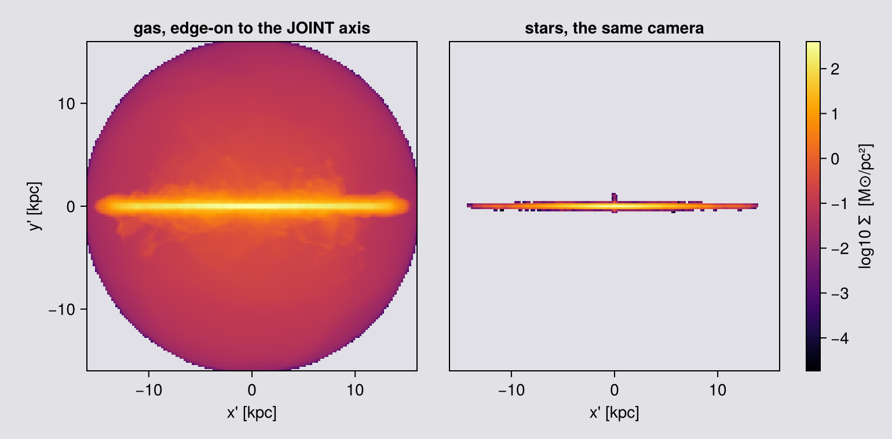
The angle between the gas and stellar axes is the number that decides whether this matters. A few arcminutes, as here, and any of the three axes gives the same picture. Degrees, which is what a warped disc, a merger or a box with a second galaxy will give you, and the choice of tracer changes what you measure.
Decide which tracer defines your frame, then use one vector everywhere. Mixing :faceon on the gas with :faceon on the stars compares two different cameras.
7. How a cell lands on the pixels
The camera is orthographic: every ray is parallel, the observer sits at infinity, nothing gets larger by being nearer. So there is no camera distance to set, and the only control over what is in frame is the width of the frame (Chapter 3).
A pixel is built from everything along the parallel ray through it, over the whole depth of the selected data: the sum for :mass, the sum over the pixel area for :sd, a weighted mean for everything else. In mathematical terms a pixel is a line integral through the data (the X-ray transform; Radon 1917; Natterer 1986), the same as volume rendering without absorption (Max 1995). This explains three things: a projection keeps the total mass, zrange matters as much as xrange, and a slice answers a different question (Chapter 12).
Why the footprint is a hexagon. Look at a cube from a general direction and you see the three faces meeting at the nearest corner; their outline is a circuit of six cube edges. It collapses to a rectangle only when the line of sight lies in a coordinate plane, which is exactly the axis-aligned, face-on and edge-on cases. Off-axis you are generically hexagonal.
Every cell is an axis-aligned cube, so for one camera every cell casts the same hexagon at a different scale: one footprint rule serves the whole AMR hierarchy.
It turns (r̂, û) about ŵ, so the scene does not move. With aperture=:circle the selection is a disc and Σ is untouched; with :square the crop rotates inside the selection sphere and its corners sweep different material, so Σ moves a little.
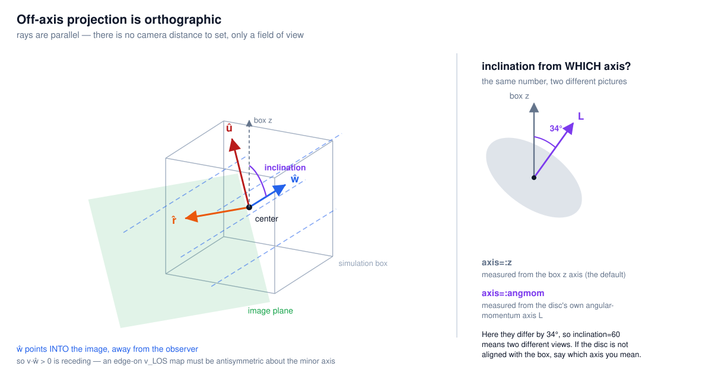
Parallel rays, the image plane, and the camera basis (r̂, û, ŵ) planted at center. Right inset: inclination is measured from a reference axis, either the box z or the object's own angular-momentum axis L. They are not the same axis, and choosing the wrong one is the most common way to get a picture that looks right but is not. Tilted-ring fits of observed discs describe an orientation the same way, one inclination and one position angle per radius (Rogstad, Lockhart & Wright 1974).
The four kernels
The hexagon generally straddles several pixels. The four binning kernels are four answers to "how is it shared out". All four share it out completely, which is why the total is the same; they differ in where it lands.
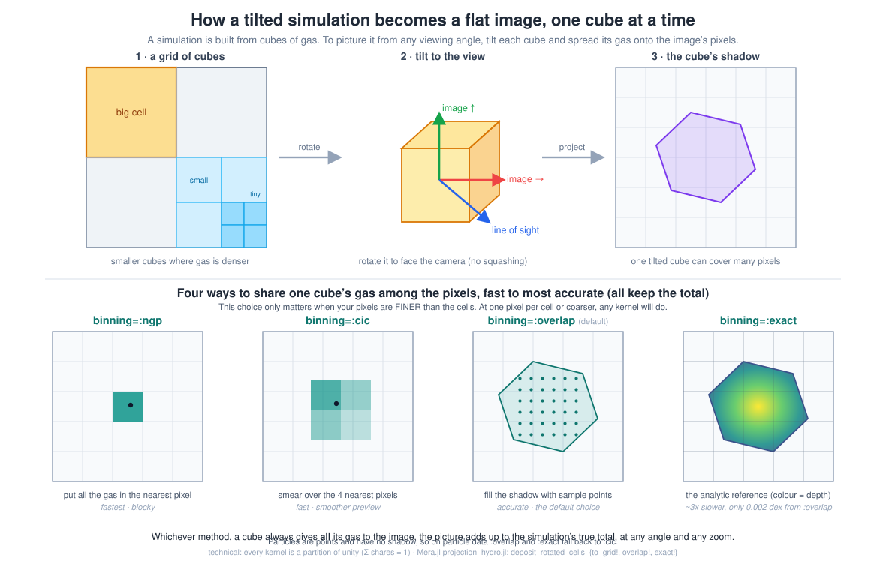
binning | what it does | use it for |
|---|---|---|
:ngp | all weight to the pixel holding the cell centre (Hockney & Eastwood 1988) | fastest preview; holes and moiré when pixels are finer than cells |
:cic | bilinear over the 2x2 neighbours (Hockney & Eastwood 1988) | fast preview; smoother, still no footprint |
:overlap (default) | supersampled over the true footprint (Westover 1990): n³ sub-points, n = ⌈cellsize/pixel⌉, capped at nmax=64; past the cap a footprint-sized top-hat, which keeps coarse cells hole-free | everything you publish |
:exact | the analytic footprint integral, a box-spline chord field over the hexagon | the reference the others are checked against; no cap, slower |
:overlap and :exact are threaded, :ngp and :cic are serial. The analytic case works because the projected shadow of a uniform cube is a box spline (de Boor, Höllig & Riemenschneider
- and box splines are closed under the Radon transform (Entezari, Nilchian & Unser 2012).
Points have no footprint, so on particles :overlap and :exact fall back to :cic and say so.
The table is a claim. The next cell measures it, all four against :exact.
# Which regime are you in? Binning only matters when PIXELS ARE FINER THAN CELLS.
PXFINE = 0.005 # kpc, the zoomed pixel size used by every binning comparison below
PXPREV = 0.02 # kpc, roughly one pixel per cell here, the sensible preview size
for l in sort(unique(getvar(gas, :level)))
cs = info.boxlen / 2^l
println("level ", l, ": cell ", rpad(round(cs, digits=4), 7), " kpc",
" → ", round(cs / PXFINE, digits=1), " pixels per cell at pxsize = ", PXFINE, " kpc")
end
zoom = (center=[:bc], fov=1.5, fov_unit=:kpc, aperture=:square,
pxsize=[PXFINE, :kpc], verbose=false, show_progress=false)
kern = Dict{Symbol,Any}(); secs = Dict{Symbol,Float64}()
for k in (:ngp, :cic, :overlap, :exact)
projection(gas, :sd, :Msol_pc2; inclination=60, axis=:angmom, binning=k, zoom...) # warm-up
secs[k] = @elapsed kern[k] = projection(gas, :sd, :Msol_pc2; inclination=60,
axis=:angmom, binning=k, zoom...)
end
k_ngp, k_cic, k_ovl = kern[:ngp], kern[:cic], kern[:overlap]
# :exact is the analytic reference, measure the others against it rather than asserting.
E = Float64.(kern[:exact].maps[:sd])
println()
println(rpad("binning", 10), rpad("empty px", 11), rpad("time [s]", 10), "median |Δ| vs :exact [dex]")
for k in (:ngp, :cic, :overlap, :exact)
A = Float64.(kern[k].maps[:sd]); both = (A .> 0) .& (E .> 0)
d = k === :exact ? 0.0 : median(abs.(log10.(A[both]) .- log10.(E[both])))
println(rpad(k, 10), rpad(string(round(100*count(iszero, A)/length(A), digits=1), " %"), 11),
rpad(round(secs[k], digits=3), 10), round(d, digits=4))
end
# THE SAME QUESTION ON POINTS, in the SAME WINDOW AND AT THE SAME PIXELS, so the two rows below
# can be read straight down the columns. Only two of the four kernels exist here: `:overlap` and
# `:exact` integrate a cell's FOOTPRINT, and a point has none, so Mera falls back to `:cic`.
#
# This window holds 150 thousand stars (printed below), so the fine pixel is not empty, it is
# SPARSE: 600x600 is 360 thousand pixels, about one star for every two. That is the point of
# running it at the gas pixel rather than at a comfortable one. The cell-versus-pixel question the
# gas row asks becomes a stars-per-pixel question, and the preview panel shows what a usable
# stellar pixel looks like in the same window.
skern = Dict{Symbol,Any}(); ssecs = Dict{Symbol,Float64}()
for k in (:ngp, :cic)
projection(part, :sd, :Msol_pc2; inclination=60, axis=:angmom, binning=k, zoom...) # warm-up
ssecs[k] = @elapsed skern[k] = projection(part, :sd, :Msol_pc2; inclination=60,
axis=:angmom, binning=k, zoom...)
end
# the same preview pixel the gas row uses in its first panel
spv = projection(part, :sd, :Msol_pc2; inclination=60, axis=:angmom, binning=:cic,
center=[:bc], fov=1.5, fov_unit=:kpc, aperture=:square,
pxsize=[PXPREV,:kpc], verbose=false, show_progress=false)
println()
println(rpad("stars", 10), rpad("empty px", 11), rpad("time [s]", 10), "what it does")
for (k, what) in ((:ngp, "whole star in the nearest pixel"), (:cic, "bilinear over 2x2"))
A = Float64.(skern[k].maps[:sd])
println(rpad(k, 10), rpad(string(round(100*count(iszero, A)/length(A), digits=1), " %"), 11),
rpad(round(ssecs[k], digits=2), 10), what)
end
println("stars in this window: ",
round(Int, sum(spv.maps[:sd]) * (spv.pixsize*spv.scale.pc)^2 /
mean(getvar(part, :mass, :Msol))))
# And the fallback is a fallback, not an approximation of one: asking for a footprint kernel on
# points returns the :cic map bit for bit. Checked rather than asserted.
for k in (:overlap, :exact)
f = projection(part, :sd, :Msol_pc2; inclination=60, axis=:angmom, binning=k, zoom...)
println(" binning=:", rpad(k, 9), "returns the :cic map exactly: ",
f.maps[:sd] == skern[:cic].maps[:sd])
endlevel 6.0: cell 0.75 kpc → 150.0 pixels per cell at pxsize = 0.005 kpc
level 7.0: cell 0.375 kpc → 75.0 pixels per cell at pxsize = 0.005 kpc
level 8.0: cell 0.1875 kpc → 37.5 pixels per cell at pxsize = 0.005 kpc
level 9.0: cell 0.0938 kpc → 18.8 pixels per cell at pxsize = 0.005 kpc
level 10.0: cell 0.0469 kpc → 9.4 pixels per cell at pxsize = 0.005 kpc
level 11.0: cell 0.0234 kpc → 4.7 pixels per cell at pxsize = 0.005 kpc
level 12.0: cell 0.0117 kpc → 2.3 pixels per cell at pxsize = 0.005 kpc
binning empty px time [s] median |Δ| vs :exact [dex]
ngp 35.0 % 1.432 0.4154
cic 12.8 % 1.248 0.2669
overlap 0.0 % 2.455 0.0128
exact 0.0 % 9.079 0.0
stars empty px time [s] what it does
ngp 65.7 % 0.02 whole star in the nearest pixel
cic 38.4 % 0.01 bilinear over 2x2
stars in this window: 183796
binning=:overlap returns the :cic map exactly: true
binning=:exact returns the :cic map exactly: trueOne number is not enough: where the disagreement lives
The median above says that :overlap and :exact agree closely. A median hides the worst pixels, and in a published figure those matter, so the table below splits the pixels by brightness.
# Reuses the projections computed above: no new reads, no new projections.
using Statistics, Printf
A = Float64.(kern[:overlap].maps[:sd]); B = Float64.(kern[:exact].maps[:sd])
both = (A .> 0) .& (B .> 0)
d = abs.(log10.(A[both]) .- log10.(B[both])); v = B[both]; peak = maximum(v)
@printf("total flux overlap/exact = %.6f\n\n", sum(A)/sum(B))
println(rpad("pixels", 26), rpad("count", 8), rpad("median", 10), rpad("p99", 10), "max [dex]")
for (lo, hi, lbl) in ((0.0, 1e-3, "faint (<0.1% of peak)"),
(1e-3, 1e-1, "mid (0.1-10%)"),
(1e-1, Inf, "bright (>10% of peak)"))
s = (v ./ peak .>= lo) .& (v ./ peak .< hi)
any(s) || continue
println(rpad(lbl, 26), rpad(count(s), 8),
rpad(round(median(d[s]), digits=5), 10),
rpad(round(quantile(d[s], 0.99), digits=5), 10),
round(maximum(d[s]), digits=5))
endtotal flux overlap/exact = 0.999959
pixels count median p99 max [dex]
faint (<0.1% of peak) 66092 0.00171 0.01164 0.02332
mid (0.1-10%) 203302 0.01401 0.04642 0.14458
bright (>10% of peak) 90606 0.02019 0.04856 0.079They are a property of this map: how many cells fall in a pixel, the viewing angle, how sparse the outskirts are. The same measurement on a Milky-Way-like run at two angles and pixel sizes gave worst-case differences from 0.058 to 0.143 dex, all different from the value above.
The shape of the result does carry over, and it follows from how the kernels work. :exact integrates the footprint analytically; :overlap samples it with n³ sub-points, so a pixel is exact in the limit of many sub-points and noisy when few land in it.
- The total is conserved either way, because both share out every cell completely. The one part in 10⁵ here is the crop of this
fovframe, not a conservation floor; on an uncropped frame the floor is a few machine epsilon, and the test suite checks it. - The worst per-pixel disagreement is in the BRIGHT pixels: median 0.0017 dex faint, 0.0162 mid, 0.0205 bright. Bright pixels are where the structure is, so that is where the two kernels place mass differently.
:overlapis weakest on cells much coarser than the pixel, because it caps supersampling atnmaxand:exacthas no cap.
Which kernel, for which job
| what you are doing | use | why |
|---|---|---|
| looking, framing, iterating | :cic | a good preview at about one pixel per cell, and the cheapest thing that is not :ngp |
| any total or budget | :cic or :overlap | both hold one machine epsilon at every pixel size tested; take the cheaper |
| a figure for a paper | :overlap (default) | 0.013 dex from :exact, no empty pixels at any pixel size |
| a figure whose bright structure you will measure | :exact | :overlap differs from it most in the bright pixels (0.021 dex against 0.0017 faint) |
| zooming so cells span many pixels | :exact, or :overlap with nmax raised | :overlap stops supersampling at nmax |
| a total while zoomed below the cell size | :cic or :overlap, not :exact | :exact loses a few more bits once cells take its analytic path, still below one part in 10¹² |
| point data | :cic | only :cic and :ngp exist there |
| speed above all | :ngp | fastest, and the only one that leaves large holes: 39 % of pixels empty here |
The trap: :exact is the most accurate per pixel and the least reliable for a total once the pixel is much finer than the cells. Different questions, different answers.
# ── figure code from here: drawing only, nothing new about Mera ──
# Show the REGIME, not one strawman: :cic where you would actually use it, then the four
# kernels at pixels a few times finer than the local cell. :exact sits next to :overlap on
# purpose, so you can confirm the table's last column with your own eyes.
pc_ok = projection(gas, :sd, :Msol_pc2; inclination=60, axis=:angmom, binning=:cic,
center=[:bc], fov=1.5, fov_unit=:kpc, aperture=:square,
pxsize=[PXPREV,:kpc], verbose=false, show_progress=false)
k_exa = kern[:exact]
allv = reduce(vcat, [log10.(filter(>(0), vec(Float64.(p.maps[:sd]))))
for p in (pc_ok, k_ngp, k_cic, k_ovl, k_exa)])
cr = (quantile(allv, 0.02), maximum(allv))
display(maprow([pc_ok, k_ngp, k_cic, k_ovl, k_exa], :sd,
[":cic @ $(PXPREV) kpc pixels
about 1 pixel per cell, a fine preview",
":ngp @ $(PXFINE) kpc pixels
all weight at cell centres",
":cic @ $(PXFINE) kpc pixels
2x2 split, still no footprint",
":overlap @ $(PXFINE) kpc pixels
same pixels, footprint deposit",
":exact @ $(PXFINE) kpc pixels
the analytic reference"]; crange=cr))
# The star row, laid out in the SAME five slots as the gas row above so the two can be read down
# the columns. Two slots stay empty on purpose, for the reason measured just above: an empty panel
# that says why is clearer than a missing column.
scr = sharedrange([spv, skern[:ngp], skern[:cic]], :sd)
sfig = Figure(size=(3520 ÷ 2, 760 ÷ 2))
for (j, (lbl, m)) in enumerate((("stars, :cic @ $(PXPREV) kpc pixels\na usable stellar pixel", spv),
("stars, :ngp @ $(PXFINE) kpc pixels\none star per pixel at most", skern[:ngp]),
("stars, :cic @ $(PXFINE) kpc pixels\nthe same star over 2x2", skern[:cic]),
("stars, :overlap\nnot defined for points", nothing),
("stars, :exact\nnot defined for points", nothing)))
ax = Axis(sfig[1, j], aspect=DataAspect(), title=lbl, titlesize=13)
hidedecorations!(ax)
if m === nothing
hidespines!(ax)
text!(ax, 0.5, 0.5; text = "a point has\nno footprint",
align=(:center,:center), color=:gray, fontsize=13)
limits!(ax, 0, 1, 0, 1)
else
showmap!(ax, m, :sd; crange=scr)
end
end
sfig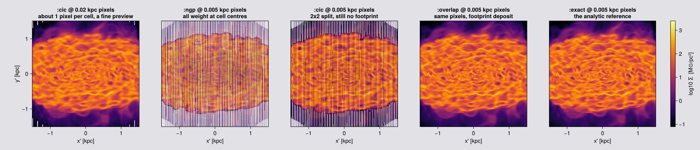
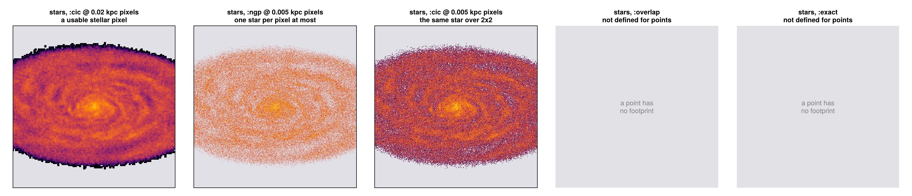
The totals agree but the pictures do not, so a correct total alone does not make a good map.
The ratio of pixel to cell decides, not the kernel. At about one pixel per cell (first panel), :cic is a good preview. With pixels several times finer than the cells, :ngp and :cic break down: each puts a cell at a single point, so the pixels between cell centres get nothing (the "empty px" column above) and the map shows the grid instead of the galaxy. :overlap spreads each cell over the area it covers and leaves no pixel empty inside the data.
Why :overlap is the default. The last column of the table is the median difference from :exact, the exact calculation. :overlap is far closer to it than :ngp or :cic, and the time column shows what that costs. The numbers are printed rather than quoted, because they change with the data. :exact is the last panel, so you can also check by eye that it looks like :overlap.
Rule of thumb: divide the local cell size (the level table above) by your pxsize. Below about one pixel per cell any kernel works; above it, use :overlap or :exact. Use :cic or :ngp for a fast look at a sensible pixel size.
8. What you can ask for
One call returns as many maps as you ask for, but they are not all the same kind of number, and this is where wrong values get published.
| kind | examples | a pixel is | safe to sum? |
|---|---|---|---|
| summed (extensive) | :mass | the total in that column | yes, a budget (on particles only with mode=:sum, Chapter 9) |
| per area | :sd | mass / pixel area | no; multiply by pixsize² first, or use :mass |
| weighted mean (intensive) | :T, :vx, :vlos, :σlos | Σ(field·w) / Σw along the ray | no |
weighting is [quantity, unit] for hydro and RT, default [:mass, missing], and applies to every variable in the call. On particles it is a plain Symbol (Chapter 11).
A mass-weighted projected T along a multiphase sightline is dominated by cold dense gas, weighting=[:volume] gives a different number, and neither is the emission-weighted temperature an X-ray instrument reports. Quote projected means as diagnostics.
Off-axis only, and axis-aligned only
| off-axis only | :vlos/:σlos, :vcamx/:σcamx, :vcamy/:σcamy, :ncell, :npart |
| axis-aligned only | :r_cylinder, :r_sphere, :ϕ |
The second group describes the pixel's own geometry, and an off-axis pixel is a slanted column with no single radius. Everything else, including every velocity dispersion, works on both paths.
mv = projection(gas, [:mass, :T], [:Msol, :K];
inclination=35, axis=:angmom, center=[:bc],
fov=16, fov_unit=:kpc, aperture=:square, pxsize=[0.1,:kpc],
weighting=[:mass, missing], verbose=false, show_progress=false)
# a mass-weighted call ships a free :sd map you did not ask for, expect it when you iterate keys
println("maps returned : ", collect(keys(mv.maps)))
println("units : ", mv.maps_unit)
# ── the conservation guarantee, measured once, on the WHOLE box (no fov, no window) ──
mtot = projection(gas, :mass, :Msol; los=[1,1,1], center=[:bc],
pxsize=[0.25,:kpc], verbose=false, show_progress=false)
println("Σ(map) / msum(gas) − 1 = ", sum(mtot.maps[:mass]) / msum(gas, :Msol) - 1)
# The table above is a claim about which variables exist on which path. Check it rather than
# trust it: the dispersions must WORK, the pixel-geometry maps must refuse and say why.
gkw = (inclination=35, axis=:angmom, center=[:bc], xrange=[-15,15], yrange=[-15,15],
zrange=[-15,15], range_unit=:kpc, pxsize=[1.0,:kpc], verbose=false, show_progress=false)
for v in (:σx, :σz, :σ, :σlos, :σcamx, :r_cylinder, :r_sphere, :ϕ)
msg = try
m = projection(gas, v, :km_s; gkw...)
"ok, median " * string(round(median(filter(>(0), m.maps[v])), digits=1)) * " km/s"
catch e
first(replace(sprint(showerror, e), "\n" => " "), 60) * "…"
end
println(rpad(v, 12), msg)
end
# and the camera-frame names are refused where there is no camera
for v in (:vlos, :σcamx)
msg = try
projection(gas, v, :km_s; direction=:z, center=[:bc], pxsize=[1.0,:kpc],
verbose=false, show_progress=false)
"NO ERROR, the page is wrong"
catch e
first(replace(sprint(showerror, e), "\n" => " "), 60) * "…"
end
println(rpad("$(v) on :z", 12), msg)
endmaps returned : Any[:T, :mass, :sd]
units : DataStructures.SortedDict{Any, Any, Base.Order.ForwardOrdering}(:T => :K, :mass => :Msol, :sd => :standard)
Σ(map) / msum(gas) − 1 = 2.220446049250313e-16
[Mera] Hint: getvar(:vx2) has no `vcenter` — velocities are in the BOX frame.
Pass vcenter=:auto for an object with bulk motion (`center=` sets the origin,
`vcenter=` the frame).
(shown once per session; verbose(false) silences Mera's messages)
σx ok, median 12.8 km/s
σz ok, median 10.0 km/s
σ ok, median 12.2 km/s
σlos ok, median 9.9 km/s
σcamx ok, median 12.8 km/s
r_cylinder projection: off-axis views (los/theta/phi/:faceon/:edgeon) d…
r_sphere projection: off-axis views (los/theta/phi/:faceon/:edgeon) d…
ϕ projection: off-axis views (los/theta/phi/:faceon/:edgeon) d…
vlos on :z ArgumentError: :vlos is a CAMERA-frame quantity and needs an…
σcamx on :z ArgumentError: :σcamx is a CAMERA-frame quantity and needs a…That relative error is at the floating-point limit, at any viewing angle, pixel size and binning. Its exact value is rounding error from adding many numbers, so it changes a little with the number of pixels and with the number of threads: on this snapshot it was −0.5 machine epsilon at a 372 pc pixel and −70 at a 5.3 kpc pixel, which is one part in 10¹⁴.
Run this one line on your own data before you quote a total from a map. The test suite runs the same check on gas and on stars, over viewing angle, pixel size, all four kernels and the nmax cap (listed at the end of the page).
The outermost row of pixels. Mera makes the frame a little larger than the data, so cells at the border still land fully on the map. The edge can still be cut by aperture=:square or by the face of a world-range box, so the outermost row is not a clean measurement. Take profiles from a frame larger than the region you need.
Which pixels can you trust: :ncell and :npart
A faint pixel and a well-sampled pixel look the same on a colour scale. The count map says which is which: :ncell for cells, :npart for points, filled by the same deposit as the value.
What the number means depends on the kernel, and it is worth knowing before you use it:
| kernel | what one count is |
|---|---|
:ngp | one per cell or particle, so the map sums to exactly how many there are |
:cic | one per pixel of the 2x2 stencil it touches |
:overlap | one per sub-point deposited, so it reads as sampling density |
:exact | one per pixel the footprint covers |
Only :ngp gives you a literal object count, so the figure below uses it. The others measure how much sampling reached a pixel, which is the question you are usually asking anyway: the faintest pixels are the least sampled, and a point map's dispersion is exactly zero wherever a pixel holds a single star.
The figure shows one frame at two pixel sizes, 100 pc and 800 pc. An 800 pc pixel covers 64 times the area of a 100 pc pixel, so it collects many more cells or stars. Compare the two count panels in each row: they share one colour scale, so the difference in brightness is the difference in sampling.
The speckled halo in the 100 pc gas count is real information. The halo cells are 375 to 750 pc across, several pixels wide, and :ngp gives each cell to the one pixel under its centre. The pixels between those centres count zero. That is what a count map is for: it shows where the pixels are finer than the cells, so a value there is spread from a neighbour rather than measured.
# Surface density beside the count that produced it, for cells and for points, at two pixel sizes.
# Same camera and same frame; only `pxsize` changes, so any difference between the count panels
# comes from the pixel alone. `:ngp`, so a count is a literal number of cells or stars.
ckw = (los=[1.,2.,3.], center=[:bc], fov=16, fov_unit=:kpc, aperture=:circle,
binning=:ngp, verbose=false, show_progress=false)
PXC = (0.1, 0.8) # kpc: finer than most disc cells, and coarser than the coarsest cell (0.75 kpc)
cnt = Dict{Tuple{Symbol,Float64},Any}()
for px in PXC
cnt[(:gas, px)] = projection(gas, [:sd, :ncell], [:Msol_pc2, :standard]; pxsize=[px,:kpc], ckw...)
cnt[(:stars, px)] = projection(part, [:sd, :npart], [:Msol_pc2, :standard]; pxsize=[px,:kpc], ckw...)
end
# `fov` selects a sphere, so the map can only count what the frame selected, not the whole box.
# Compare against the selection and the identity is exact, at either pixel size.
nsel_gas = length(subregion(gas, :sphere, radius=16., center=[:bc], range_unit=:kpc, verbose=false).data)
nsel_part = length(subregion(part, :sphere, radius=16., center=[:bc], range_unit=:kpc, verbose=false).data)
for px in PXC
println("pixel $(Int(px*1000)) pc: cells in the fov ", nsel_gas, ", :ncell sums to ",
round(Int, sum(cnt[(:gas, px)].maps[:ncell])), "; stars ", nsel_part, ", :npart sums to ",
round(Int, sum(cnt[(:stars, px)].maps[:npart])))
end
# The Σ panel of the gas row is made with `:overlap`, the default, because an `:ngp` Σ map is
# speckled wherever cells are larger than pixels (see the count panel). The count stays `:ngp`.
gas_sd_img = projection(gas, :sd, :Msol_pc2; pxsize=[0.1,:kpc], merge(ckw, (; binning=:overlap))...)
# How well sampled is a typical pixel? Median count over the filled pixels, and the share of
# filled pixels fed by exactly one object (no spread, and a mean that is just that one object).
println()
println(rpad("data", 8), rpad("pixel", 10), rpad("filled pixels", 16), rpad("median count", 15),
"pixels with one object")
for who in (:gas, :stars), px in PXC
ck = who === :gas ? :ncell : :npart
c = filter(>(0), vec(Float64.(cnt[(who, px)].maps[ck])))
println(rpad(who, 8), rpad("$(Int(px*1000)) pc", 10), rpad(length(c), 16),
rpad(round(median(c), digits=1), 15),
round(100 * count(==(1.0), c) / length(c), digits=1), " %")
end
# ── figure code from here: drawing only, nothing new about Mera ──
# Rows: gas, stars. Columns: Σ at 100 pc, then the count at 100 pc and at 800 pc on ONE colour
# scale per row, so the brighter coarse panel shows directly how much more each pixel collects.
fig = Figure(size=(1300, 700))
for (row, (who, ck)) in enumerate(((:gas, :ncell), (:stars, :npart)))
fine, coarse = cnt[(who, 0.1)], cnt[(who, 0.8)]
ax1 = Axis(fig[row,1], title="$(who): Σ, 100 pc pixels", ylabel="y' [kpc]")
showmap!(ax1, who === :gas ? gas_sd_img : fine, :sd)
lim = getextent(coarse, :kpc) # one window per row, so the panels line up
top = log10(maximum(coarse.maps[ck]))
hm = nothing
for (col, m, lbl) in ((2, fine, "100 pc"), (3, coarse, "800 pc"))
ax = Axis(fig[row,col], title="$(who): count per pixel, $(lbl)")
hm = showmap!(ax, m, ck; cmap=:viridis, crange=(0.0, top))
hideydecorations!(ax, grid=false)
limits!(ax, lim...)
end
limits!(ax1, lim...)
Colorbar(fig[row,4], hm, label="log10 count")
end
figpixel 100 pc: cells in the fov 43922383, :ncell sums to 43922383; stars 627896, :npart sums to 627896
pixel 800 pc: cells in the fov 43922383, :ncell sums to 43922383; stars 627896, :npart sums to 627896
data pixel filled pixels median count pixels with one object
gas 100 pc 81005 235.0 0.1 %
gas 800 pc 1394 13148.0 0.0 %
stars 100 pc 27788 6.0 20.6 %
stars 800 pc 796 64.5 3.8 %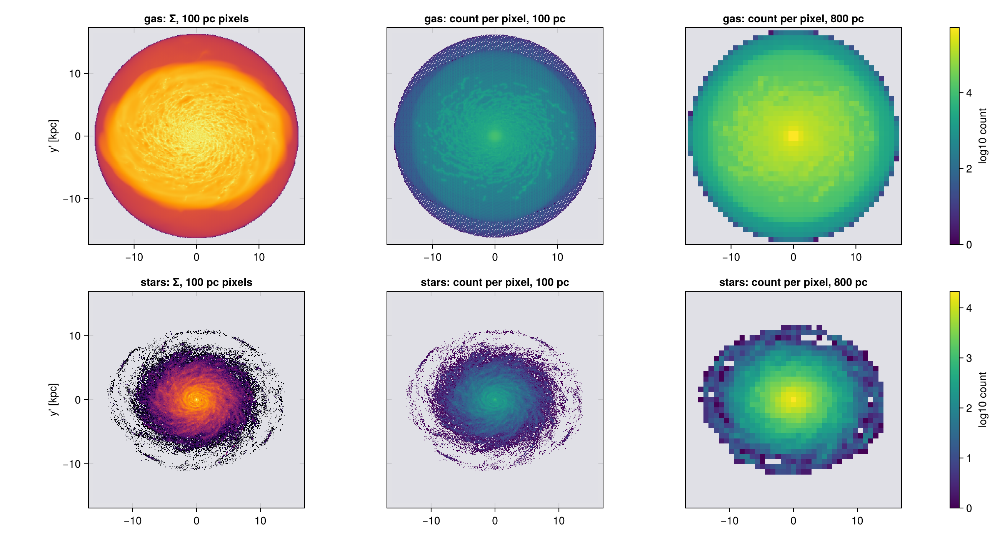
Velocity along the line of sight, and across it
Two different frames, and confusing them is the most common error on this page.
| frame | meaning | |
|---|---|---|
:vz, :σz | box axes | the spread along the simulation z, whatever the camera is doing |
:vlos, :σlos | camera | along the line of sight, what a spectrum measures |
:vcamx/:σcamx, :vcamy/:σcamy | camera | along image x and image y |
Both sets work off-axis. :σz on a face-on view is still the simulation z, which is almost never what a face-on view is asking about. The line-of-sight pair is the observable one.
The full box-frame set is :σx :σy :σz :σ :σr_cylinder :σϕ_cylinder :σr_sphere :σθ_sphere :σϕ_sphere, each built from its own v and v².
:σ is the spread of the speed, √(⟨|v|²⟩ − ⟨|v|⟩²). The trace of the dispersion tensor is σx² + σy² + σz² = ⟨|v|²⟩ − |⟨v⟩|². Different numbers, and :σ is the smaller one.
The camera triple and the box triple are one tensor in two frames, so σcamx² + σcamy² + σlos² = σx² + σy² + σz² pixel by pixel. The cell after next checks it.
What :σlos is, and is not
:vlos is signed so positive is receding, and it is defined for any camera. :σlos is √(⟨v_LOS²⟩ − ⟨v_LOS⟩²) over the mass in a pixel. With :sd and :vlos it completes the zeroth, first and second moments of the line-of-sight velocity distribution, the three maps an H I or CO cube is reduced to (Walter et al. 2008).
It is a width of a distribution inside one pixel, not a per-cell quantity: many cells along the ray land in the same pixel, each with its own v·ŵ. Edge-on that spread is dominated by ordered rotation along the sightline, not by turbulence. An observed dispersion carries the velocity gradient inside the resolution element and must be corrected before anyone calls it intrinsic (Davies et al. 2011).
Below, that shows up as the brightest σ_LOS off the disc plane: a sightline through the disc samples nearly co-rotating gas, one passing above it crosses infalling and outflowing material with a far wider spread.
# The same camera, the same pixel, four dispersions. Two are box axes and two are camera axes,
# and the difference is the whole point of the table above.
dkw = (center=[:bc], fov=15, fov_unit=:kpc, aperture=:square, pxsize=[0.25,:kpc],
binning=:ngp, verbose=false, show_progress=false)
L = angmom(gas; center=[:bc], range_unit=:kpc, radius=[15,:kpc])
for (view_name, view) in (("face-on", (; axis=L, inclination=0)),
("edge-on", (; axis=L, inclination=90)))
m = projection(gas, [:σz, :σlos, :σcamx, :σcamy, :ncell], :km_s; view..., dkw...)
ok = m.maps[:ncell] .> 1 # a single-cell pixel has no spread to report
println(rpad(view_name, 10),
join([rpad("$(v) " * string(round(median(m.maps[v][ok]), digits=1)), 18)
for v in (:σz, :σlos, :σcamx, :σcamy)]))
end
# The figure below is made separately, with `:overlap` and 100 pc pixels. At the table's 250 pc
# pixel the halo cells (375 to 750 pc) are only 1.5 to 3 pixels wide, so any kernel that places a
# cell by a few points lines them up unevenly with the pixel grid and the map shows a blocky, woven
# texture that belongs to the grid, not the gas. `:ngp` is right for the table, where `:ncell` has
# to count cells; a picture wants the cell spread over the area it covers, finely enough.
sig_eo = projection(gas, [:σz, :σlos], :km_s; axis=L, inclination=90,
merge(dkw, (; binning=:overlap, pxsize=[0.1, :kpc]))...)
println("\nmedian km/s over pixels fed by more than one cell.")
println(":σz is the SIMULATION z in both rows, so it barely moves when the camera does.")
println(":σlos follows the camera, which is what a spectrum would see.")face-on σz 9.3 σlos 9.3 σcamx 14.0 σcamy 13.8
edge-on σz 22.0 σlos 19.3 σcamx 19.2 σcamy 22.0
median km/s over pixels fed by more than one cell.
:σz is the SIMULATION z in both rows, so it barely moves when the camera does.
:σlos follows the camera, which is what a spectrum would see.# The identity that says the camera triple and the box triple are one tensor in two frames:
# σcamx² + σcamy² + σlos² == σx² + σy² + σz²
# It has to hold pixel by pixel, at any angle, with any kernel.
tkw = (center=[:bc], fov=15, fov_unit=:kpc, aperture=:square, pxsize=[0.3,:kpc],
los=[1.,2,3], verbose=false, show_progress=false)
println(rpad("binning", 12), rpad("pixels used", 14), rpad("median rel. diff", 20), "p99")
for b in (:ngp, :cic, :overlap, :exact)
t = projection(gas, [:σcamx,:σcamy,:σlos,:σx,:σy,:σz,:ncell], :km_s; binning=b, tkw...)
cam = t.maps[:σcamx].^2 .+ t.maps[:σcamy].^2 .+ t.maps[:σlos].^2
box = t.maps[:σx].^2 .+ t.maps[:σy].^2 .+ t.maps[:σz].^2
ok = (box .> 0) .& (t.maps[:ncell] .> 1)
r = abs.(cam[ok] .- box[ok]) ./ box[ok]
println(rpad(":$(b)", 12), rpad(count(ok), 14),
rpad(round(median(r), sigdigits=3), 20), round(quantile(r, 0.99), sigdigits=3))
end
println("\n`:ncell` is how the single-cell pixels are excluded: their spread is exactly zero,")
println("so the ratio of two round-off values there says nothing about the identity.")
# The edge-on maps side by side: one camera, one pixel, two different questions,
# drawn from the `:overlap` maps made above. `maprow` shares
# one key across maps, so this pair needs its own two-panel figure.
let m = sig_eo
fig = Figure(size=(770, 380), backgroundcolor=EMPTY_COLOUR)
cr = sharedrange([m, m], :σlos) # one scale, so the two are comparable
hm = nothing
for (i, (k, ttl)) in enumerate(((:σz, "σ_z (box axis, edge-on)"),
(:σlos, "σ_LOS (camera, the same view)")))
ax = Axis(fig[1,i], title=ttl, xlabel="x' [kpc]", backgroundcolor=EMPTY_COLOUR,
ylabel = i == 1 ? "y' [kpc]" : "")
i > 1 && hideydecorations!(ax, grid=false)
hm = showmap!(ax, m, k; cmap=:viridis, crange=cr)
end
Colorbar(fig[1,3], hm, label="log10 σ [km/s]")
fig
endbinning pixels used median rel. diff p99
:ngp 10201 4.76e-14 2.11e-12
:cic 10201 1.05e-13 3.98e-12
:overlap 10201 7.06e-14 2.22e-12
:exact 10201 7.21e-14 2.22e-12
`:ncell` is how the single-cell pixels are excluded: their spread is exactly zero,
so the ratio of two round-off values there says nothing about the identity.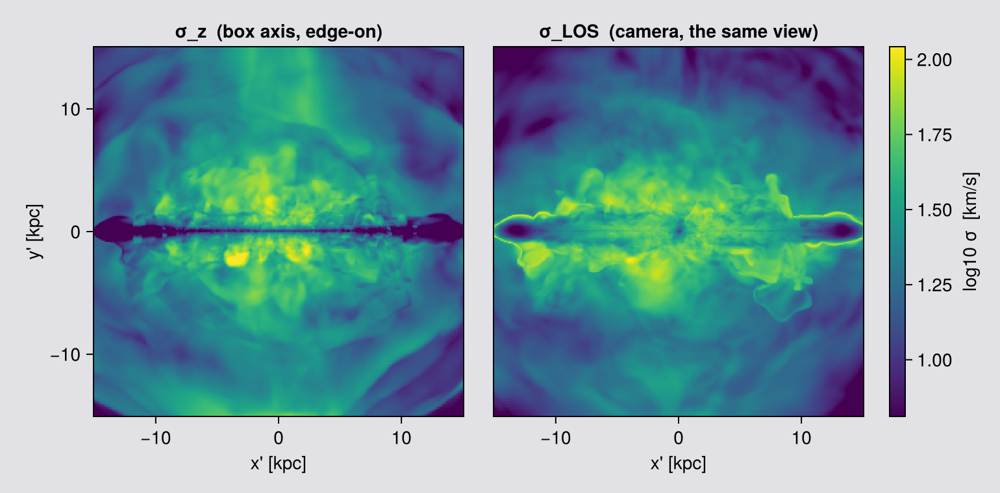
Read the two rows of the first table against each other. :σz hardly moves between face-on and edge-on, because it is the spread along the simulation z and the camera has nothing to do with it. :σlos changes completely, because it is the spread along the line of sight, which is the quantity a spectrograph integrates.
The second table is the check that the two frames describe one tensor: its trace is invariant under rotation, so the camera triple and the box triple must agree in every pixel. They do, to about one part in 10¹³, for all four kernels. That is not a convergence statement; it is bookkeeping, and it holds at any pixel size.
:vlos follows the observational convention: positive means receding (redshifted), negative means approaching (blueshifted), exactly as a radial velocity is reported in a paper.
Note the relation to the camera. ŵ (m.los) points out of the image, toward the observer, so the map is -(v·ŵ). If you compute the projection yourself from m.los, remember that minus sign, or your rotation curve comes out inverted.
A sign flip inverts a rotation curve and changes nothing else in the figure, so check the shape too: on an edge-on map :vlos must be antisymmetric about the minor axis. If it is not, your center is off the object (Chapter 1).
kin = (center=[:bc], fov=15, fov_unit=:kpc, aperture=:square,
pxsize=[0.1, :kpc], verbose=false, show_progress=false)
# ask for :sd alongside, used below only to SET THE COLOUR RANGE from where the mass is;
# every pixel is still plotted
keo = projection(gas, [:vlos, :σlos, :sd], [:km_s, :km_s, :Msol_pc2]; direction=:edgeon, kin...)
kfo = projection(gas, [:vlos, :σlos, :sd], [:km_s, :km_s, :Msol_pc2]; direction=:faceon, kin...)
finite(A) = filter(isfinite, vec(Float64.(A)))
println("edge-on max |v_LOS| = ", round(maximum(abs, finite(keo.maps[:vlos])), digits=1), " km/s")
println("face-on max |v_LOS| = ", round(maximum(abs, finite(kfo.maps[:vlos])), digits=1), " km/s")
println("median σ_LOS edge-on = ", round(median(finite(keo.maps[:σlos])), digits=1), " km/s")
# THE SAME TWO MAPS ON THE STARS. `:vlos` and `:σlos` are not gas-only: a particle carries a
# velocity, so the same call works on points, and it is a mass-weighted mean over the stars in the
# pixel instead of over the cells. The same call, with `part` where `gas` was.
#
# The number to compare is σ_LOS, and on points it needs care. σ is the spread of velocities INSIDE
# a pixel, so a pixel holding exactly one star has no spread and reports exactly 0. At this pixel
# size most star pixels hold one star or none, so a median over every pixel would come back 0.0
# km/s and would be measuring the sampling, not the stars. Measure it where it is defined instead,
# over the pixels that hold more than one star, which is what σ > 0 selects. The gas is measured
# the same way so the two numbers are comparable.
#
# The physics worth checking: gas is dissipative and radiates its random motion away, settling into
# a thin cold layer, while stars keep theirs once born and gain more from every encounter. The
# printed numbers say whether that shows up here.
# `aperture=:circle` (Chapter 3), so the numbers below cover the whole disc and not a square crop.
star_kin = (center=[:bc], fov=15, fov_unit=:kpc, aperture=:circle,
pxsize=[0.1, :kpc], verbose=false, show_progress=false)
skeo = projection(part, [:vlos, :σlos, :sd], [:km_s, :km_s, :Msol_pc2]; direction=:edgeon, star_kin...)
skfo = projection(part, [:vlos, :σlos, :sd], [:km_s, :km_s, :Msol_pc2]; direction=:faceon, star_kin...)
println()
println("stars edge-on max |v_LOS| = ", round(maximum(abs, finite(skeo.maps[:vlos])), digits=1), " km/s")
println("stars face-on max |v_LOS| = ", round(maximum(abs, finite(skfo.maps[:vlos])), digits=1), " km/s")
sσ = filter(>(0), finite(skeo.maps[:σlos])) # star pixels holding more than one star
gσ = filter(>(0), finite(keo.maps[:σlos]))
println("stars: pixels with σ > 0 = ", length(sσ), " of ", length(finite(skeo.maps[:σlos])),
" (", round(100 * length(sσ) / length(finite(skeo.maps[:σlos])), digits=1), " %)")
println("stars median σ_LOS edge-on = ", round(median(sσ), digits=1), " km/s (over those pixels)")
println(" gas median σ_LOS edge-on = ", round(median(gσ), digits=1), " km/s (same measure)")edge-on max |v_LOS| = 211.3 km/s
face-on max |v_LOS| = 45.9 km/s
median σ_LOS edge-on = 19.5 km/s
stars edge-on max |v_LOS| = 240.7 km/s
stars face-on max |v_LOS| = 20.6 km/s
stars: pixels with σ > 0 = 1577 of 91809 (1.7 %)
stars median σ_LOS edge-on = 21.8 km/s (over those pixels)
gas median σ_LOS edge-on = 19.5 km/s (same measure)# ── figure code from here: drawing only, nothing new about Mera ──
# Every pixel is shown. The colour range is set from the bright pixels (98th percentile), so the
# disc's rotation is legible and the faint outskirts SATURATE rather than being hidden, a reader
# can see there is signal there and that it is off the end of the scale, which a black mask would
# have concealed.
kinvals(m, key) = Float64.(m.maps[key])
function kinpanel!(ax, m, key, cmap, crange; logscale=false)
A = kinvals(m, key); A = replace(A, 0.0 => NaN) # an empty pixel, never a real value
A = logscale ? log10.(A) : A
e = getextent(m, :kpc)
hm = heatmap!(ax, range(e[1],e[2],length=size(A,1)), range(e[3],e[4],length=size(A,2)), A;
colormap=cmap, nan_color=EMPTY_COLOUR, interpolate=false, colorrange=crange)
ax.aspect = DataAspect(); hm
end
# Colour range from the 2nd to 98th percentile of ALL pixels, not just the bright ones. Scaling to
# the disc alone drives the halo off the end of the scale, and a saturated slab hides structure
# just as effectively as a mask does. σ_LOS spans the disc and the halo by a large factor here, so
# it needs a log scale to show both at once.
pix(m, key) = filter(isfinite, vec(Float64.(m.maps[key])))
vmax = quantile(abs.(pix(keo, :vlos)), 0.98)
sl = filter(>(0), vcat(pix(keo, :σlos), pix(kfo, :σlos)))
srng = (log10(quantile(sl, 0.02)), log10(quantile(sl, 0.98)))
fig = Figure(size=(1180, 400))
ax1 = Axis(fig[1,1], title="edge-on v_LOS", xlabel="x' [kpc]", ylabel="y' [kpc]")
h1 = kinpanel!(ax1, keo, :vlos, :balance, (-vmax, vmax))
Colorbar(fig[1,2], h1, label="v_LOS [km/s]")
ax2 = Axis(fig[1,4], title="edge-on σ_LOS", xlabel="x' [kpc]")
h2 = kinpanel!(ax2, keo, :σlos, :viridis, srng; logscale=true)
ax3 = Axis(fig[1,5], title="face-on σ_LOS", xlabel="x' [kpc]")
kinpanel!(ax3, kfo, :σlos, :viridis, srng; logscale=true)
hideydecorations!(ax2, grid=false); hideydecorations!(ax3, grid=false)
Colorbar(fig[1,6], h2, label="log10 σ_LOS [km/s]")
colsize!(fig.layout, 3, Fixed(14)) # spacer: keeps the v colorbar from reading as panel 2's ylabel
display(fig)
# The star row: same three panels, same figure size, same colour scales, and the same axis limits
# as the gas row above. `fov` gives both rows a frame of the same size, and the shared limits make
# the match exact, so the stars appear at their true size beside the gas. That is itself the
# result: the young stellar disc is thinner than the gas.
gext = getextent(keo, :kpc)
fig2 = Figure(size=(1180, 400))
bx1 = Axis(fig2[1,1], title="stars, edge-on v_LOS", xlabel="x' [kpc]", ylabel="y' [kpc]")
g1 = kinpanel!(bx1, skeo, :vlos, :balance, (-vmax, vmax))
Colorbar(fig2[1,2], g1, label="v_LOS [km/s]")
bx2 = Axis(fig2[1,4], title="stars, edge-on σ_LOS", xlabel="x' [kpc]")
g2 = kinpanel!(bx2, skeo, :σlos, :viridis, srng; logscale=true)
bx3 = Axis(fig2[1,5], title="stars, face-on σ_LOS", xlabel="x' [kpc]")
kinpanel!(bx3, skfo, :σlos, :viridis, srng; logscale=true)
hideydecorations!(bx2, grid=false); hideydecorations!(bx3, grid=false)
Colorbar(fig2[1,6], g2, label="log10 σ_LOS [km/s]")
colsize!(fig2.layout, 3, Fixed(14))
for bx in (bx1, bx2, bx3)
limits!(bx, gext[1], gext[2], gext[3], gext[4])
end
fig2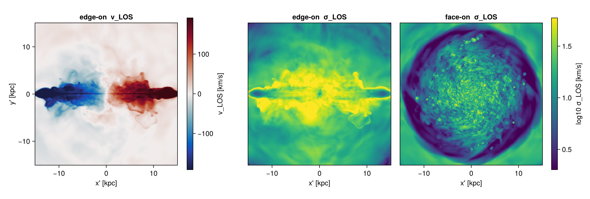
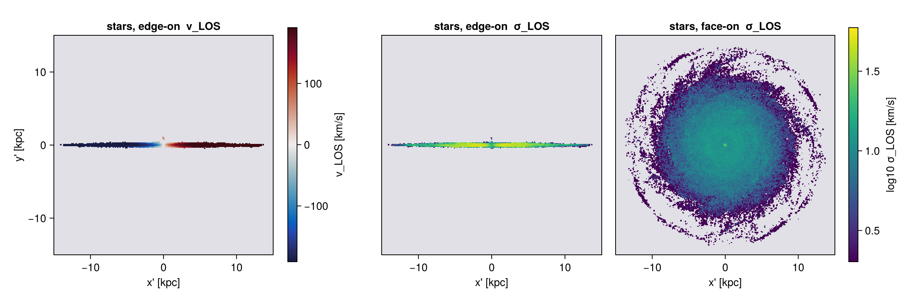
# Does σ_LOS depend on how finely you pixelate? Measure it rather than assume.
# (cells here run from 48/2^12 = 0.012 kpc at lmax to 48/2^6 = 0.75 kpc at lmin, so this
# sweep sits at and above the coarse end of the hierarchy)
med(A) = median(filter(x -> isfinite(x) && x > 0, vec(Float64.(A))))
println(rpad("pxsize [kpc]", 15), rpad("median σ_LOS", 16), "mean σ_LOS")
for px in (0.15, 0.6, 2.4)
p = projection(gas, :σlos, :km_s; direction=:edgeon, center=[:bc], fov=15, fov_unit=:kpc,
aperture=:square, pxsize=[px, :kpc], verbose=false, show_progress=false)
v = filter(x -> isfinite(x) && x > 0, vec(Float64.(p.maps[:σlos])))
println(rpad(px, 15), rpad(round(median(v), digits=1), 16), round(mean(v), digits=1))
endpxsize [kpc] median σ_LOS mean σ_LOS
0.15 19.5 24.2
0.6 19.6 24.8
2.4 21.4 26.9On this galaxy, a 16× change in pxsize hardly changes σ_LOS (table above). You might expect a larger pixel to hold a wider spread of velocities. Here most of the spread comes from velocities along the ray, and the ray is the same whatever the pixel width: smaller pixels divide the sky, not the line of sight.
This holds for this galaxy only. In general σ_LOS does depend on the pixel size, and the law of total variance says by how much (Chapter 11). Choose pxsize for the image you want and state it, so a reader can check.
Taking the rotation out
The edge-on σ_LOS above is mostly rotation, not turbulence: one line of sight crosses many radii that move at different speeds. This section takes the rotation out.
A dispersion already subtracts the mean inside each pixel, so a single bulk velocity changes nothing. What it cannot see is an ordered gradient along the ray. To remove that, subtract a velocity field before projecting.
rotation_frame measures the field from the data itself and restframe applies it, both described in How Quantities Are Computed. Two of its properties decide how the numbers below read. Cells are binned by cylindrical radius, 100 bins by default spread over the radial extent of whatever you hand it, and the model has no height dependence. The curve it returns is the curve of the material you measured it on, and it is then applied at every height. This is the simulation counterpart of correcting an observed dispersion for the velocity gradient across the beam (Begeman 1989; Davies et al. 2011).
# 300 pc, and the cost of this cell is the eight projections, four rotation frames and two
# subregions, not the grid: a projection is priced by the scan over the cells and hardly at all
# by the pixel count. The pixel-size sweep further up was measured on the UNCORRECTED field and
# does not carry over to the residual, which is a much smaller number made of different
# motions. If you quote a residual, measure its pixel-size behaviour again.
sig = (center=:bc, fov=15, fov_unit=:kpc, aperture=:square,
pxsize=[0.3,:kpc], verbose=false, show_progress=false) # note: no `direction` here
good(A) = filter(x -> isfinite(x) && x > 0, vec(A))
# THE CAMERA IS TAKEN ONCE, FROM THE UNCORRECTED OBJECT, AND REUSED.
# `direction=:edgeon` re-derives the view from the angular momentum of whatever it is handed, and
# `rotation_frame` removes the mass-weighted mean vϕ in every radial bin, which is most of L. The
# corrected object therefore has almost no net angular momentum left and its axis is set by what
# noise remains, so an "after" map asked for with :edgeon points somewhere arbitrary.
function rot_pair(g; nbins=100)
f = rotation_frame(g; center=:bc, nbins=nbins) # the rotation curve measured from THIS gas
gr = restframe(g; vcenter=f, center=:bc)
A = projection(g, :σlos, :km_s; direction=:edgeon, sig...) # camera fixed HERE
B = projection(gr, :σlos, :km_s; los=A.los, sig...) # same camera, reused
return median(good(A.maps[:σlos])), median(good(B.maps[:σlos]))
end
# `subregion` cuts the object already in memory, so the snapshot is read once, not once per case.
gall = subregion(gas, :cuboid, zrange=[-24.,24.], center=[:bc], range_unit=:kpc, verbose=false)
gdisc = subregion(gas, :cuboid, zrange=[-2.,2.], center=[:bc], range_unit=:kpc, verbose=false)
# Report the removed fraction as a fraction of the VARIANCE. Variances add, widths do not.
res = Dict{String,NTuple{2,Float64}}()
println(rpad("selection", 26), rpad("σ_LOS before", 14), rpad("after", 10),
rpad("removed, variance", 19), "width ratio")
for (label, g, nb) in (("all gas", gall, 100),
("disc, |z| < 2 kpc", gdisc, 100),
("disc, nbins = 400", gdisc, 400))
ma, mb = rot_pair(g; nbins=nb)
res[label] = (ma, mb)
println(rpad(label, 26), rpad(round(ma, digits=1), 14), rpad(round(mb, digits=1), 10),
rpad(string(round(100 * (1 - (mb/ma)^2), digits=1), " %"), 19),
round(mb/ma, digits=3))
end
σ_bulk_disc = res["disc, |z| < 2 kpc"][2] # keyed on the label, not on the loop order
# A null test. Face-on, the rotation lies in the plane of the sky and contributes almost nothing to
# a line-of-sight width, so an azimuthal correction should barely move σ_LOS. If it does, the
# correction is doing something you did not ask for.
fA = projection(gdisc, :σlos, :km_s; direction=:faceon, sig...)
fB = projection(restframe(gdisc; vcenter=rotation_frame(gdisc; center=:bc), center=:bc),
:σlos, :km_s; los=fA.los, sig...)
println("\nnull test, disc face-on: σ_LOS ", round(median(good(fA.maps[:σlos])), digits=2),
" → ", round(median(good(fB.maps[:σlos])), digits=2), " km/s")selection σ_LOS before after removed, variance width ratio
all gas 19.5 63.8 -969.7 % 3.271
disc, |z| < 2 kpc 41.7 34.2 32.6 % 0.821
disc, nbins = 400 41.7 34.3 32.5 % 0.821
null test, disc face-on: σ_LOS 6.94 → 6.94 km/sThe first line goes the opposite way from the other two, and that is the point of the table.
Over the disc the correction removes a real but modest share of the variance. That share is the part of the width that was the rotation curve sampled along the ray. Much remains, because an edge-on ray also crosses vertical lag, spiral and bar streaming, inflow and outflow, and a rotation curve that depends only on radius cannot remove any of these.
Over all the gas the width comes out larger after the correction. This is not a fault of the tool but of the model: rotation_frame bins by cylindrical radius with no height dependence, so the curve it measured is the disc's, and subtracting it from a slab reaching 24 kpc above the plane hands every halo cell a coherent counter-rotation it never had. Match the model to the selection.
Quote it as a variance fraction. Variances add, widths do not, so the right number is 1 − (σ_after/σ_before)², the column the cell prints. It belongs to the cutout, not to the galaxy.
What is left is not the intrinsic dispersion. It is the residual about an axisymmetric, height-independent, binned model. It still holds vertical lag, streaming, inflow and outflow, plus a contribution from the finite radial bins: 100 bins over this selection is about 0.34 kpc each, and across a steep inner curve that alone can be several km/s. The nbins = 400 line is there so you can see whether the number has settled.
The null test. Face-on, rotation lies in the plane of the sky, so an azimuthal correction should barely touch σ_LOS. The last line checks that.
:faceon/:edgeon and axis=:angmom derive the view from the object's angular momentum, and rotation_frame removes most of it, so the corrected object's axis is set by whatever noise remains. Take the camera once and reuse it:
A = projection(g, :σlos, :km_s; direction=:edgeon, sig...) # camera fixed here
B = projection(gr, :σlos, :km_s; los=A.los, sig...) # same camera, reusedvcenter also takes a plain vector or :auto, so restframe(gas; vcenter=:auto) removes the bulk motion of the whole selection. That will not change a dispersion, which already subtracts the mean in each pixel; it matters for velocity maps. Any f(x, y, z) works, so a model rotation curve or an outflow can be subtracted the same way.
The thermal part
The dispersion above is the bulk spread of gas velocities. A real line is also broadened by thermal motion, and :σ_thermal gives that. It is √(P/ρ), it is isotropic, and it needs no μ. The formula and the reason it needs no μ are in How Quantities Are Computed.
What belongs here is how you combine it with a bulk width, because two rules are easy to break. Both numbers have to come from the same gas, and it is the variance that adds, because the line profile is a convolution:
\[\sigma_\mathrm{total}^2 = \sigma_\mathrm{bulk}^2 + \sigma_\mathrm{thermal}^2\]
th = getvar(gas, :σ_thermal, :km_s)
println("σ_thermal per cell : ", round(minimum(th), digits=2), " .. ",
round(maximum(th), digits=2), " km/s (whole box, so the top end is halo gas)")
# the two equivalent forms, as a check rather than an assertion
γ = info.gamma
println("equals cs/√γ : ", isapprox(th, getvar(gas, :cs, :km_s) ./ sqrt(γ); rtol=1e-12))
# Combine with the bulk dispersion. Two rules, both easy to break:
# 1. BOTH numbers have to come from the SAME gas. The bulk figure above is the disc cutout, so
# the thermal one must be too. A median over the whole box is dominated by the 10^6 K halo,
# which is not in the measurement at all.
# 2. It is the VARIANCE that adds, so the thermal number is a mass-weighted rms of the width,
# not a median of widths.
thd = getvar(gdisc, :σ_thermal, :km_s) # SAME cutout as the bulk number
mmd = getvar(gdisc, :mass, :Msol)
σ_therm = sqrt(sum(mmd .* thd .^ 2) / sum(mmd))
println("\nσ_bulk (disc, rotation removed) = ", round(σ_bulk_disc, digits=2), " km/s")
println("σ_therm (disc, mass-weighted rms) = ", round(σ_therm, digits=2), " km/s")
println("σ_total = √(σ_bulk² + σ_therm²) = ",
round(sqrt(σ_bulk_disc^2 + σ_therm^2), digits=2), " km/s")
# for contrast, the number the wrong recipe would have handed you
println("\na median over the whole box instead would read ",
round(median(filter(isfinite, th)), digits=2), " km/s")σ_thermal per cell : 0.28 .. 1662.53 km/s (whole box, so the top end is halo gas)
equals cs/√γ : true
σ_bulk (disc, rotation removed) = 34.24 km/s
σ_therm (disc, mass-weighted rms) = 8.19 km/s
σ_total = √(σ_bulk² + σ_therm²) = 35.21 km/s
a median over the whole box instead would read 19.05 km/sOne caveat if you are comparing against an observed line. :σ_thermal is the width of the mean gas particle, of mass μ m_H. A line is broadened by the mass of the emitting species, so for a species of mass m_X:
\[\sigma_{\mathrm{thermal},X} = \sqrt{P/\rho}\;\sqrt{\mu m_H / m_X}\]
Say which baseline you mean, because two are in circulation and they differ by more than a factor of two. Against atomic hydrogen, CO is 28 times heavier and its thermal width is √28, about 5.3, times narrower. Against the mean particle, which is what the formula above and √(P/ρ) are written in, the factor is √(μ m_H / m_X): about 6.8 for CO where μ = 0.6, and about 3.5 in molecular gas where μ = 2.3. Use getvar(gas, :mu) for the local μ. Draine (2011) sets out the thermal and turbulent line widths and the species-mass scaling in full.
9. Weighting and totals
mode decides whether a map is a weighted mean or a sum. On cell data (hydro, RT, gravity):
| quantity | mode=:standard (default) | mode=:sum |
|---|---|---|
:sd, :mass | the total; mode is ignored | the same |
:ekin, :etherm, :volume | weighted mean | the plain total, Σ q |
velocity dispersions (:σlos, :σz, ...) | weighted mean; mode is ignored | the same |
any other quantity, e.g. :T, :vx, :rho | weighted mean, Σ q·w / Σ w | Σ q·w, not Σ q |
w is the weighting: mass for hydro, volume for RT, unless you choose another one.
projection(gas, :T, :K; mode=:sum) returns Σ T·m in each pixel, not Σ T, and the map's unit label still says K. The real unit is K times the unit of the weight, and with the default weighting=[:mass, missing] the mass is in code units. Use mode=:sum for :mass, :ekin, :etherm and :volume, or to integrate a density over volume: projection(gas, :rho, :g_cm3; mode=:sum, weighting=[:volume, :cm3]) gives Σ ρ·V, the mass in each pixel in grams. For anything else, keep the default mean.
:mass on particles
By default projection(part, :mass) is the mass-weighted mean particle mass, Σ(mᵢ·mᵢ)/Σmᵢ, because a particle has no volume to make it extensive.
That map has uses: with a particle mass spectrum it shows where the heavy particles sit; on a zoom it draws the boundary between resolution levels as a step in particle mass, the quickest way to see how far low-resolution contamination reaches; on any run a flat map means one particle mass and structure means more than one.
What it is not is a budget. For the mass in each pixel, ask for it:
projection(part, :mass, :Msol; mode=:sum, los=[1,2,3], center=[:bc]) # sums to the totalor use :sd times the pixel area.
Do not read that drift as an undercount converging on the right answer. Measured at los=[1,2,3] with :cic, sum(:mass)/M runs from 0.000156 at a 2.8 kpc pixel to 1.514 at 10 pc, straight through 1. A star split over four pixels makes all four report its full mass, so with one particle mass :cic could overshoot by 4; this run carries two, 800 and 1600 Msol, which lifts the bound to about 4·m_max/m_min, so 8. :ngp stays below 1, reaching 0.667. mode=:sum and sum(:sd·area)/M both stay at 1.
# The same call twice, once as a mean and once as a total. The third line is the route the hint
# used to recommend, and it must agree with `mode=:sum` exactly.
wkw = (los=[1.,2,3], center=[:bc], fov=16, fov_unit=:kpc, aperture=:circle,
pxsize=[0.3,:kpc], verbose=false, show_progress=false)
mean_m = projection(part, :mass, :Msol; wkw...)
sum_m = projection(part, :mass, :Msol; mode=:sum, wkw...)
sd_m = projection(part, :sd, :Msol_pc2; wkw...)
sd_mass = sum(sd_m.maps[:sd]) * (sd_m.pixsize * sd_m.scale.pc)^2
println(rpad("map", 34), rpad("sum over pixels", 22), "maps_mode")
println(rpad(":mass, mode=:standard (default)", 34),
rpad(round(sum(filter(isfinite, mean_m.maps[:mass])), sigdigits=6), 22),
mean_m.maps_mode[:mass])
println(rpad(":mass, mode=:sum", 34), rpad(round(sum(sum_m.maps[:mass]), sigdigits=6), 22),
sum_m.maps_mode[:mass])
println(rpad(":sd x pixel area", 34), rpad(round(sd_mass, sigdigits=6), 22), "(derived)")
println("\nstars inside the aperture, from the data: ",
round(msum(subregion(part, :sphere, radius=16., center=[:bc], range_unit=:kpc,
verbose=false), :Msol), sigdigits=6))
println(":sum and :sd x area agree: ", isapprox(sum(sum_m.maps[:mass]), sd_mass; rtol=1e-9))
println("the default is a MEAN particle mass, so its sum is not a mass at all.")map sum over pixels maps_mode
:mass, mode=:standard (default) 4.23473e6 mass_weighted
:mass, mode=:sum 5.03498e8 sum
:sd x pixel area 5.03498e8 (derived)
stars inside the aperture, from the data: 5.03498e8
:sum and :sd x area agree: true
the default is a MEAN particle mass, so its sum is not a mass at all.10. Masking
mask= takes one boolean per row of the object you pass, so any selection you can express as a vector can drive a map.
cold = getvar(gas, :T, :K) .< 1e4
projection(gas, :sd; los=[1,2,3], mask=cold, center=[:bc], fov=16, fov_unit=:kpc)It composes with fov, depth, split and, on particles, parttypes. For value-space selection on any derived quantity, filterdata and getmask build the vector.
Without fov the frame is fitted to the selected cells, so a masked map and an unmasked one do not share a pixel grid and cannot be divided one by the other. Pass fov whenever you mean to compare them: then both maps get the same frame.
# One camera, three selections, one pinned frame so the three are comparable. `fov` is what
# makes them comparable: without it each map would fit its own extent.
# `aperture=:circle`: a sphere is a selection and nothing is cropped after it, so every
# selected cell reaches the map and the two parts can be checked against the whole. A total is
# never read off a `:square` map, which drops what lies outside the square.
mkw = (los=[1.,2,3], center=[:bc], fov=16, fov_unit=:kpc, aperture=:circle,
pxsize=[0.2,:kpc], verbose=false, show_progress=false)
cold = getvar(gas, :T, :K) .< 1e4
hot = .!cold
all_g = projection(gas, :sd, :Msol_pc2; mkw...)
cold_g = projection(gas, :sd, :Msol_pc2; mask=cold, mkw...)
hot_g = projection(gas, :sd, :Msol_pc2; mask=hot, mkw...)
area = (all_g.pixsize * all_g.scale.pc)^2
framemass(m) = sum(m.maps[:sd]) * area
println(rpad("selection", 16), rpad("cells", 14), rpad("mass in frame [Msol]", 24), "frame")
for (nm, sel, m) in (("everything", trues(length(cold)), all_g),
("T < 1e4 K", cold, cold_g),
("T > 1e4 K", hot, hot_g))
println(rpad(nm, 16), rpad(count(sel), 14),
rpad(round(framemass(m), sigdigits=6), 24), size(m.maps[:sd]))
end
println("\nthe two parts add back to the whole: ",
round(100*(framemass(cold_g) + framemass(hot_g)) / framemass(all_g), digits=6), " %")
maprow([all_g, cold_g, hot_g], :sd, ["all gas", "cold, T < 1e4 K", "hot, T > 1e4 K"];
crange=sharedrange([all_g, cold_g, hot_g], :sd))selection cells mass in frame [Msol] frame
everything 51500562 6.98579e9 (166, 166)
T < 1e4 K 21057667 6.69841e9 (166, 166)
T > 1e4 K 30442895 2.87379e8 (166, 166)
the two parts add back to the whole: 100.0 %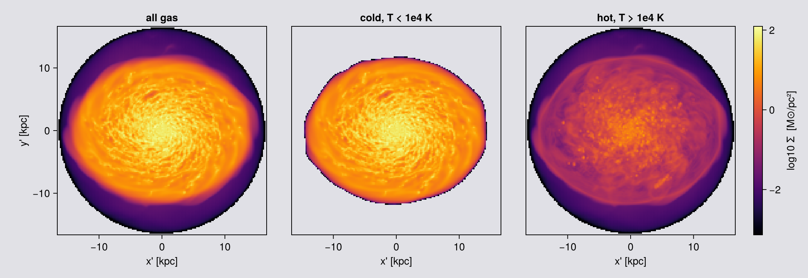
The three frames are identical because fov pinned them, and the two parts add back to the whole because a mask only decides which cells are deposited, never how much of one.
A mask also sets the camera when the view is derived from the data: angmom(gas; mask=cold) orients on the cold gas alone, and on particles parttypes=[:dm], direction=:faceon orients on the dark matter rather than on stars and dark matter together.
11. The same camera on other data
The view keywords are the same everywhere. What differs is a short list of defaults and gaps.
| hydro / RT | particles | |
|---|---|---|
binning default | :overlap | :cic; :overlap/:exact fall back to :cic (no footprint) and say so once |
weighting | Array, [:mass, missing] | Symbol: :mass, :volume, :sph, :voronoi. :sph and :voronoi need a smoothing length or a volume, which RAMSES stars lack, so both raise here |
mode | :standard / :sum | :standard / :sum |
fov / aperture | yes | yes, the same sphere and the same fixed frame |
split, depth, refine, nmax | grid only | absent: passing one is a MethodError, not a no-op |
angmom_radius | yes | yes |
nmax, gravity_data | yes | absent |
data_center | silently ignored off-axis | honoured |
slice | yes, with offset | no, by design: a plane through points is empty. Use thickness/offset on projection |
Gravity goes through projection(hydro, gravity, var; …). RT has no velocity field, so :angmom, :faceon and :edgeon are unavailable: give an explicit los=, or take the vector from the matching hydro object with angmom and pass it as axis=L. (This dataset has no RT output; see the radiative transfer page.)
# `part` came with the setup cell, because every chapter from 1 on puts the stars beside the gas.
ps = projection(part, :sd, :Msol_pc2; direction=:edgeon, center=[:bc],
xrange=[-20,20], yrange=[-20,20], zrange=[-20,20], range_unit=:kpc,
pxsize=[0.15,:kpc], verbose=false, show_progress=false)
println("stars : frame ", size(ps.maps[:sd]), " los = ", round.(ps.los, digits=3))
grav = loaddata(390, AVALON, :gravity; verbose=false)
pe = projection(gas, grav, :epot; direction=:faceon, center=[:bc],
xrange=[-20,20], yrange=[-20,20], zrange=[-20,20], range_unit=:kpc,
pxsize=[0.15,:kpc], verbose=false, show_progress=false)
# NB the raw extrema of an off-axis potential map include an exact 0.0, and that 0.0 is EMPTY
# pixels, not a physical potential. Report the filled pixels, and say how many were empty.
epot = pe.maps[:epot]; filled = filter(<(0), epot)
println("gravity : maps ", collect(keys(pe.maps)))
println(" epot over filled pixels ", round.(extrema(filled), sigdigits=4),
" (", count(iszero, epot), " of ", length(epot), " pixels empty)")stars : frame (187, 12) los = [-0.0, -1.0, 0.0]
gravity : maps Any[:epot, :sd]
epot over filled pixels (-46.94, -6.759) (1206 of 75076 pixels empty)A slab instead of a slice, for particles
A cutting plane through point particles catches nothing: a particle has no extent, so a zero-thickness plane is empty by construction. That is why slice(part, …) is a MethodError rather than an oversight.
The useful analogue is a projection of finite depth. thickness sets the depth of the slab along the line of sight and offset moves it, the same way offset moves the plane for cell data. A non-positive thickness is refused rather than returning an empty map.
# `aperture=:circle` (Chapter 3): nothing is cropped after the sphere, so the totals below are the
# whole of each slab and the fractions compare like with like.
S = (direction=:edgeon, center=[:bc], fov=15, fov_unit=:kpc, aperture=:circle,
pxsize=[0.15,:kpc], verbose=false, show_progress=false)
full = projection(part, :sd, :Msol_pc2; S...)
T = sum(full.maps[:sd])
println(rpad("thickness [kpc]", 18), rpad("total", 12), "fraction of the full column")
for th in (20.0, 5.0, 1.0)
m = projection(part, :sd, :Msol_pc2; thickness=th, thickness_unit=:kpc, S...)
println(rpad(th, 18), rpad(round(sum(m.maps[:sd]), sigdigits=6), 12),
round(sum(m.maps[:sd])/T, digits=4))
end
println()
println(rpad("offset [kpc]", 18), "total in a 2 kpc slab")
for off in (-6.0, -2.0, 0.0, 2.0, 6.0)
m = projection(part, :sd, :Msol_pc2; thickness=2.0, thickness_unit=:kpc,
offset=off, offset_unit=:kpc, S...)
println(rpad(off, 18), round(sum(m.maps[:sd]), sigdigits=6))
endthickness [kpc] total fraction of the full column
20.0 22423.3 0.9958
5.0 15065.9 0.6691
1.0 3840.64 0.1706
offset [kpc] total in a 2 kpc slab
-6.0 702.843
-2.0 4582.48
0.0 7313.68
2.0 4662.8
6.0 749.579The total grows with thickness, as it must. In the offset sweep, look for the offset with the most mass. If it is not 0, the slab shows where the stars are: center=[:bc] is the box centre, and the centre of the stars need not be exactly there.
Run this check on your own data. If the densest slab is not where you expect the object, either the centre is wrong or the object is not where you think.
# The same camera, pointed at three kinds of data, and all three drawn on the same ±16 kpc axes
# below so they can be read against each other.
#
# 100 pc pixels, the page standard for a comparison grid. The star panel is not the limiting
# tracer here, even though stars are points: this view is EDGE-ON, so the sight line runs the
# length of the disc and a pixel holds tens of times more stars than the same pixel would face-on.
# Chapter 11 does that arithmetic, and draws the face-on case coarser for exactly that reason.
shot = (direction=:edgeon, center=[:bc], fov=16, fov_unit=:kpc, aperture=:square,
pxsize=[0.1, :kpc], verbose=false, show_progress=false)
gas_eo = projection(gas, :sd, :Msol_pc2; shot...)
# gravity rides on the hydro grid: the two-object form, same camera, same framing
pot_eo = projection(gas, grav, :epot, :km2_s2; shot...)
# The stars take the same call. `fov` fixes the frame, so the thin edge-on star disc gets the
# same frame as the gas, with empty sky above and below it.
star_eo = projection(part, :sd, :Msol_pc2; shot...)
println("gas frame ", size(gas_eo.maps[:sd]),
" stars ", size(star_eo.maps[:sd]),
" potential ", size(pot_eo.maps[:epot]))
println("φ along the line of sight: ", round.(extrema(pot_eo.maps[:epot]), sigdigits=4), " km²/s²")
# ── figure code from here: drawing only, nothing new about Mera ──
# separate colour ranges: gas and stars differ by orders of magnitude in surface density,
# and forcing one scale would flatten whichever loses
lo(m) = quantile(log10.(filter(>(0), vec(Float64.(m.maps[:sd])))), 0.25) # clip the empty rim
hi(m) = maximum(log10.(filter(>(0), vec(Float64.(m.maps[:sd])))))
fig = Figure(size=(1420, 400))
ax1 = Axis(fig[1,1], title="gas Σ", xlabel="x' [kpc]", ylabel="y' [kpc]")
h1 = showmap!(ax1, gas_eo, :sd; crange=(lo(gas_eo), hi(gas_eo)))
Colorbar(fig[1,2], h1, label="log10 Σ_gas [M⊙/pc²]")
ax2 = Axis(fig[1,4], title="stars Σ", xlabel="x' [kpc]")
h2 = showmap!(ax2, star_eo, :sd; crange=(lo(star_eo), hi(star_eo)))
Colorbar(fig[1,5], h2, label="log10 Σ_★ [M⊙/pc²]")
# the potential is negative everywhere and spans a small range, so a linear scale on the raw
# value, no log, and a sequential map so "deeper" reads as one direction.
#
# The map is REVERSED on purpose. φ is most negative at the centre, so a plain sequential ramp
# puts the bottom of the well at the dark end, which on this page is the colour of an empty
# pixel: the most interesting part of the panel would be the part that looks like nothing is
# there. Reversed, the well glows and the shallow outskirts recede.
ax3 = Axis(fig[1,7], title="gravitational potential φ", xlabel="x' [kpc]")
h3 = showmap!(ax3, pot_eo, :epot; logscale=false, cmap=Reverse(:magma))
Colorbar(fig[1,8], h3, label="φ [km²/s²]")
# Same square axes on all three, and no vertical zoom here. Chapter 11 zooms its edge-on star
# panel to show the structure inside the disc; this figure is doing the opposite job, holding one
# frame for three tracers, and the sliver IS the result: the stars are far thinner than the gas.
for a in (ax1, ax2, ax3); limits!(a, -16, 16, -16, 16); end
hideydecorations!(ax2, grid=false); hideydecorations!(ax3, grid=false)
colsize!(fig.layout, 3, Fixed(14)); colsize!(fig.layout, 6, Fixed(14))
figgas frame (321, 321) stars (321, 321) potential (321, 321)
φ along the line of sight: (-147400.0, -39090.0) km²/s²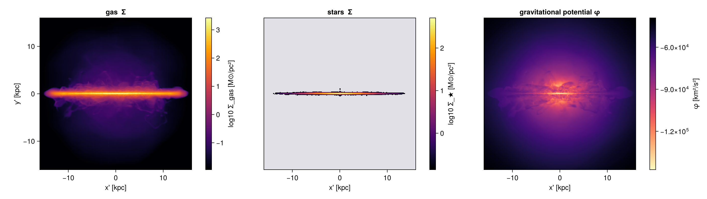
Same keywords, same camera, three kinds of data. The stars form a thinner, smoother disc than the gas, which is why it helps to map both in one orientation. The potential is smoother than either: it depends on all the mass, not on the clumps that dominate the gas map, and its contours are rounder than the disc.
Gravity comes through the two-object form, projection(hydro, gravity, var): the hydro object supplies the weights, because gravity carries none of its own (How Quantities Are Computed). Both must describe the same cells, so load them from the same info at the same lmax. fov cuts both together, so the three panels above are framed identically and can be compared pixel for pixel.
What does differ between the two data types is the deposit itself: points have no footprint, so particle projections use :cic and the footprint kernels fall back to it.
That difference is visible if you push the pixels: a grid map degrades smoothly, while a particle map becomes grainy, because each pixel is counting a finite number of objects and inherits a √N uncertainty. The cure is the same as in any counting experiment, coarsen the pixels until each one holds enough particles to mean something.
What these star particles are, and what is missing
Every particle in this snapshot was made by the simulation itself. All 627,896 are stars (family = 2), there are no dark matter particles, and their birth times run from 4.2 Myr to 580.0 Myr, which is the full age of the run. Together they hold 5.0·10⁸ solar masses, about one percent of the stellar mass of the model galaxy, 1.03 percent measured against the old stellar disc on its own. The old disc, the bulge and the dark halo are not particles at all. They are an analytic mass distribution that the run adds to the Poisson source (gravity_type = -3), worth roughly 4.9·10¹⁰ solar masses for the old stellar disc, 1.5·10¹⁰ for the bulge and 1.4·10¹¹ for the halo. So this map shows recent star formation, not the stars of the galaxy: there is no bulge in it because the bulge was never made of particles.
Inside the central 500 pc the analytic bulge outweighs the star particles by about 50 to 1, 8.9·10⁸ solar masses against 1.75·10⁷, so the brightest part of a real galaxy's stellar image is the part this panel does not contain at all.
The potential panel is the other half of that story. The analytic components enter the Poisson source, so the stored potential does include the bulge, the disc and the halo, and :epot maps the mass the star panel cannot show. The two panels disagree about what this galaxy is made of, and each is right about its own tracer.
RAMSES fixes no zero point for the potential, so a single value of :epot means little. Differences across the map, such as the depth of the well against the outskirts, are what carry the physics.
# The table above is a set of claims. Run them, a compatibility table that is never executed
# is exactly the kind of thing that goes stale when the code moves on.
W = (center=[:bc], xrange=[-15,15], yrange=[-15,15], zrange=[-15,15], range_unit=:kpc,
pxsize=[1.0,:kpc], verbose=false, show_progress=false)
same(a, b) = maximum(abs, a.maps[:sd] .- b.maps[:sd]) == 0
raises(f) = try (f(); "NO ERROR") catch e; string(typeof(e).name.name) end
pc = projection(part, :sd, :Msol_pc2; direction=:edgeon, binning=:cic, W...)
println("particle binning=:overlap falls back to :cic : ",
same(projection(part, :sd, :Msol_pc2; direction=:edgeon, binning=:overlap, W...), pc))
println("particle binning=:exact falls back to :cic : ",
same(projection(part, :sd, :Msol_pc2; direction=:edgeon, binning=:exact, W...), pc))
# :sph/:voronoi now work off-axis too: both are rotation-invariant, so the same samplers run
# on camera-frame coordinates. (They need a :volume column, which star particles lack.)
for w in (:sph, :voronoi)
println(rpad("weighting=:$w off-axis (needs :volume)", 45), ": ",
raises(() -> projection(part, :sd, :Msol_pc2; direction=:edgeon, weighting=w, W...)))
end
# `fov` works on particles exactly as on cells: it fixes the frame, so an edge-on star disc, which
# is only a few hundred pc thick, still gets the full frame. Print both apertures beside the gas.
apw = (direction=:edgeon, center=[:bc], fov=15, fov_unit=:kpc, pxsize=[0.3,:kpc],
verbose=false, show_progress=false)
println("fov on particles, aperture=:circle : ",
size(projection(part, :sd, :Msol_pc2; aperture=:circle, apw...).maps[:sd]))
println("fov on particles, aperture=:square : ",
size(projection(part, :sd, :Msol_pc2; aperture=:square, apw...).maps[:sd]))
println("same, for the gas that fills the sphere : ",
size(projection(gas, :sd, :Msol_pc2; aperture=:square, apw...).maps[:sd]))
println("slice(part, …) : ",
raises(() -> slice(part, :sd; direction=:edgeon, center=[:bc], xrange=[-15,15],
yrange=[-15,15], range_unit=:kpc, pxsize=[1.0,:kpc], verbose=false)))
for kw in (:nmax, :max_threads)
println(rpad(string("particle ", kw), 45), ": ",
raises(() -> projection(part, :sd, :Msol_pc2; direction=:edgeon, (; kw => 8)..., W...)))
end
println("data_center ignored on off-axis hydro : ",
same(projection(gas, :sd, :Msol_pc2; inclination=35, axis=:angmom, W...),
projection(gas, :sd, :Msol_pc2; inclination=35, axis=:angmom,
data_center=[0.4,0.4,0.4], data_center_unit=:standard, W...)))particle binning=:overlap falls back to :cic : true
particle binning=:exact falls back to :cic : true
weighting=:sph off-axis (needs :volume) : ArgumentError
weighting=:voronoi off-axis (needs :volume) : ArgumentError
fov on particles, aperture=:circle : (103, 103)
fov on particles, aperture=:square : (101, 101)
same, for the gas that fills the sphere : (101, 101)
slice(part, …) : MethodError
particle nmax : MethodError
particle max_threads : NO ERROR
data_center ignored on off-axis hydro : trueNothing above is hydro-specific. The camera keywords, the framing keywords and the binning keywords mean the same thing for every projectable data type:
- particles, point masses, deposited with the same kernels;
:sdis a stellar surface density here rather than a gas one; - gravity, projected through the two-object form
projection(hydro, gravity, var)shown above.
The next sections take the particle side further: what a point mass conserves, what it cannot, and why a stellar map has no converged peak.
Note the empty-pixel count printed above: an off-axis frame that is not completely filled is normal, and the zeros are absence of data, not zero potential. Aggregate the filled pixels, not the whole array.
Stars: what a point mass conserves
The camera does not change. What changes is the thing being deposited.
A cell has a volume: it covers pixels, it has a chord along the ray, and Chapter 7 is about what happens when a pixel becomes smaller than that footprint. A star particle is a point mass at one position, so there is nothing to integrate over, nothing for a cutting plane to catch, and no smallest scale below which the map stops changing.
binningkeeps two of its four values, and only off-axis. Along a box axis the particle path is a plain histogram, which is:ngp, andbinningis not read at all. Writelos=[0,0,1]if you want CIC along z.weightingis a plainSymbol, and on star particles:massis the only value that means anything.:sdis the map that conserves mass, or:masswithmode=:sum(Chapter 9).- The peak surface density has no converged value, because a point mass is a delta function.
Every particle in this snapshot is a star, which makes it a clean test case.
# What is actually in the particle table. The equal-mass line matters: if every star carries the
# same mass, a mass-weighted map and a number-weighted map are the same map. This run prints
# `false` there, so keep the distinction in mind for every mean below.
fam = getvar(part, :family)
mp = getvar(part, :mass, :Msol)
age = getvar(part, :age, :Myr)
Mtot = msum(part, :Msol)
println("particles : ", length(part.data))
println("families present : ", sort(unique(fam)), " (1 = dark matter, 2 = star)")
println("stellar mass : ", round(Mtot, sigdigits=4), " Msol")
println("particle mass : ", round(minimum(mp), digits=1), " .. ", round(maximum(mp), digits=1),
" Msol (all equal: ", minimum(mp) ≈ maximum(mp), ")")
println("age : median ", round(median(age), digits=1),
" Myr, oldest ", round(maximum(age), digits=1), " Myr")particles : 627896
families present : [2.0] (1 = dark matter, 2 = star)
stellar mass : 5.035e8 Msol
particle mass : 800.0 .. 1600.0 Msol (all equal: false)
age : median 245.0 Myr, oldest 575.8 Myr# The stars in the SAME window as the gas hero in Chapter 1: same centre, same `fov`, same two
# directions. What differs is the pixel, and it differs BETWEEN the two panels, because the two
# views do not hold anything like the same number of stars per pixel.
#
# FACE-ON, 200 pc. 628 thousand points over a disc of radius 11.4 kpc is about 1540 per square
# kpc, so a pixel holds roughly 60 of them at 200 pc, 15 at 100 pc and 1 at 26 pc. The 10 per cent
# noise point, a hundred stars in a pixel, sits at about 250 pc, so 200 pc is deliberately just
# inside the speckled regime: fine enough not to look like a mosaic, coarse enough that the disc
# still reads as a disc, and the √N speckle is then visible in the outskirts where the density is
# far below the disc average. That floor is the price of a point tracer, and gas does not pay it.
#
# EDGE-ON, 50 pc. The same arithmetic gives a completely different answer, because the sight line
# now runs through the whole 23 kpc width of the disc instead of through its thickness. The same
# 628 thousand stars land in a band about 28 kpc wide and, in the dense layer, a few hundred pc
# tall: call it 0.6 kpc and that is roughly 37 thousand per square kpc, some 25 times the face-on
# figure. At 50 pc a midplane pixel still holds of order a hundred stars, the same signal to noise
# the face-on panel has. Edge-on is where a stellar map can afford to be fine.
#
# `aperture=:circle` in both, so nothing is cropped. `fov` fixes the frame at ±16 kpc, so most of
# the edge-on frame is empty sky above and below the thin disc, and the empty share printed below
# says how much.
sw = (center=[:bc], fov=16, fov_unit=:kpc, aperture=:circle, parttypes=[:stars],
verbose=false, show_progress=false)
sfo = projection(part, :sd, :Msol_pc2; direction=:faceon, pxsize=[0.2, :kpc], sw...)
seo = projection(part, :sd, :Msol_pc2; direction=:edgeon, pxsize=[0.05, :kpc], sw...)
for (nm, m) in (("face-on", sfo), ("edge-on", seo))
println(rpad(nm, 9), "frame ", lpad(string(size(m.maps[:sd])), 12),
" at ", lpad(round(m.pixsize * m.scale.pc, digits=1), 6), " pc pixels,",
" empty ", round(100 * count(iszero, m.maps[:sd]) / length(m.maps[:sd]), digits=1), " %")
end
# ── figure code from here: drawing only, nothing new about Mera ──
# Stacked, not side by side: with DataAspect an edge-on disc is a wide short panel, and putting it
# under the face-on one on the SAME x axis is how the two views are read together.
#
# Each panel gets its own colour range. These are the same stars, but not the same distribution of
# Σ: edge-on stacks the whole disc into a thin band, so its peak is far higher, and one shared bar
# would flatten the face-on panel.
fig = Figure(size=(980, 1120), backgroundcolor=EMPTY_COLOUR)
ax1 = Axis(fig[1,1], backgroundcolor=EMPTY_COLOUR, title="stars, face-on (200 pc pixels)",
xlabel="x' [kpc]", ylabel="y' [kpc]")
h1 = showmap!(ax1, sfo, :sd; crange=sharedrange([sfo], :sd))
Colorbar(fig[1,2], h1, label="log10 Σ★ [M⊙/pc²]")
ax2 = Axis(fig[2,1], backgroundcolor=EMPTY_COLOUR,
title="stars, edge-on (50 pc pixels, y zoomed to ±1.5 kpc and stretched 4×)",
xlabel="x' [kpc]", ylabel="y' [kpc]")
h2 = showmap!(ax2, seo, :sd; crange=sharedrange([seo], :sd))
Colorbar(fig[2,2], h2, label="log10 Σ★ [M⊙/pc²]")
limits!(ax1, -16, 16, -16, 16) # the Chapter 1 frame, unchanged
limits!(ax2, -16, 16, -1.5, 1.5) # same x, but the dense layer is only about ±0.3 kpc
# The edge-on panel is the one place on this page where the aspect is NOT true to the data, and
# the title says so. At 50 pc over a 32 kpc width, an honest DataAspect strip is 32:3 and the
# stellar layer inside it is a dozen pixels tall, which defeats the point of resolving it. So
# `showmap!`'s DataAspect is released here and the row is given four times its true height.
# Read structure along x from this panel, and read thickness from the numbers, not by eye.
ax2.aspect = nothing
rowsize!(fig.layout, 1, Aspect(1, 1.0)) # face-on stays square
rowsize!(fig.layout, 2, Aspect(1, 4 * 3 / 32)) # 4x the true 3-in-32 proportion
resize_to_layout!(fig) # or the rows overflow the Figure and the lower panel is clipped
figface-on frame (163, 163) at 199.2 pc pixels, empty 50.2 %
edge-on frame (643, 643) at 49.9 pc pixels, empty 98.8 %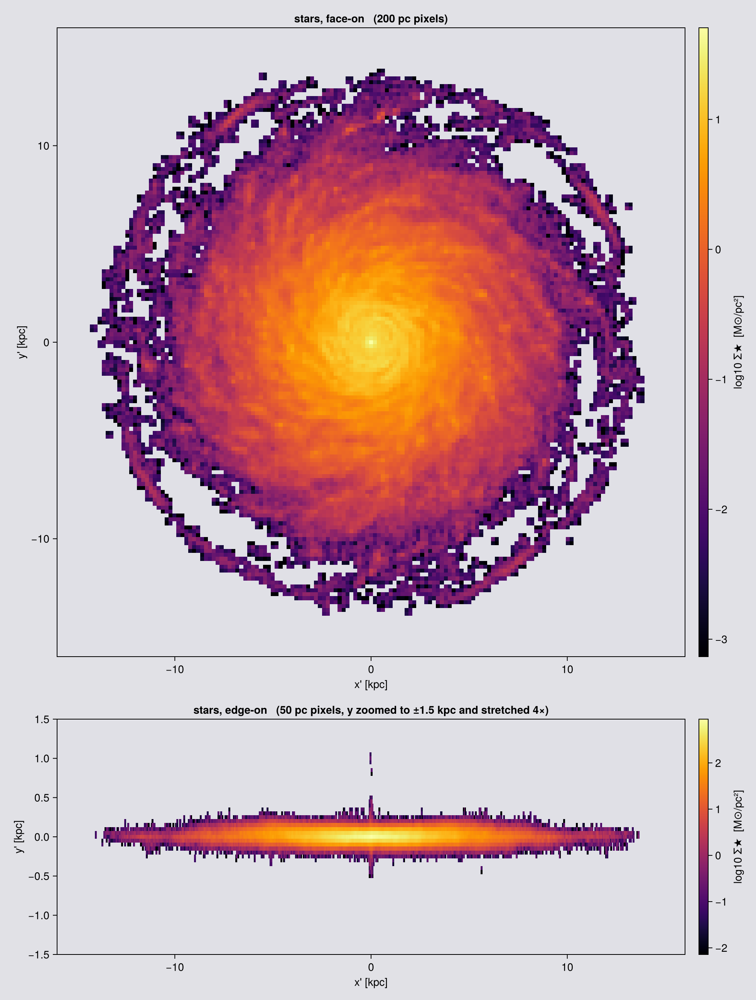
The two moments, and what a stellar width is made of
:vlos and :σlos mean for stars exactly what Chapter 8 says they mean for gas, sign convention included: positive is receding. What differs is what the width is made of. Gas carries a thermal width that has to be added in quadrature. A collisionless star does not, so the stellar σ_LOS is the second moment of the line-of-sight velocity distribution and nothing else, which is the quantity an integral field spectrograph reports.
Because every particle deposits its whole mass, the per-pixel moments obey the law of total variance exactly. The global mass-weighted variance of v_LOS is the mass-weighted mean of the per-pixel variance plus the mass-weighted variance of the per-pixel mean. Which of the two terms holds the variance moves with the pixel size, and their sum does not: coarse pixels swallow whole radii of the disc and keep the variance inside pixels, fine pixels resolve the rotation and hand it to the between-pixel term. That is the Chapter 8 statement seen from the budget side. One condition, if you check it on your own data: the weights and the two moments have to come from the same call, because they have to be the same deposit.
One caveat is specific to points. The per-pixel σ_LOS is the population variance of the stars in that pixel, not the sample variance. With N stars it is low by a factor (N-1)/N against the width of the distribution those stars were drawn from: half the variance for two stars, and exactly zero for one. Splitting a star over four pixels with :cic does not help, because all four copies carry the same velocity. The identity is untouched, since it is bookkeeping over the deposited weights, but a stellar dispersion map is biased low wherever the pixels are sparse.
The peak surface density has no converged value
A star is a delta function. The pixel holding it reports m★/Δ², so once the densest pixel is down to a single star, halving the pixel quadruples the peak, and it goes on doing that without limit. There is no pixel size at which a stellar peak surface density converges. Gas is genuinely different: a cell has a finite volume and a finite density, so below the finest cell the gas peak stops moving.
The same counting sets the noise, and that part you do on your own data. Spread these stars over a disc of radius 11.4 kpc and the mean is about 1540 per square kpc, so a pixel of side Δ holds about 1540·Δ² of them and carries at least a √N fluctuation:
pxsize | stars per pixel | shot noise |
|---|---|---|
| 1 kpc | ~1500 | 3 % |
| 300 pc | ~140 | 8 % |
| 200 pc | ~60 | 13 % |
| 100 pc | ~15 | 26 % |
| 26 pc | ~1 | 100 % |
So a face-on stellar map is shot-noise dominated below roughly 250 pc in the disc, and at 26 pc it is a scatter plot drawn with square markers. Those are disc averages. The centre stays smooth to far finer pixels, the outskirts are single stars already at 100 pc, and an edge-on view stacks the whole width of the disc into every pixel and so affords a much finer grid. That is the arithmetic behind the two pixel sizes this chapter draws with.
# Two things the gas maps cannot give you: the mean age of the stars, and a line-of-sight width
# with no thermal term in it. Same window and the same `aperture=:circle` as the two star maps at
# the top of this chapter, and the same split in pixel size for the same reason: 200 pc face-on,
# 50 pc edge-on, where the sight line runs the length of the disc and a pixel holds twenty-five
# times more stars.
kwfo = (center=[:bc], fov=16, fov_unit=:kpc, aperture=:circle,
pxsize=[0.2, :kpc], verbose=false, show_progress=false)
kweo = (center=[:bc], fov=16, fov_unit=:kpc, aperture=:circle,
pxsize=[0.05, :kpc], verbose=false, show_progress=false)
sage = projection(part, [:age, :sd], [:Myr, :Msol_pc2]; direction=:faceon, kwfo...)
skin = projection(part, [:vlos, :σlos, :sd], [:km_s, :km_s, :Msol_pc2]; direction=:edgeon, kweo...)
# Off-axis particle maps mark an empty pixel with 0.0, not NaN. On a velocity map a 0 reads as
# "not moving" and on an age map as "just born", so blank the pixels that hold no stars. (The
# shared `showmap!` does this for its own panels; these three are drawn by hand.)
function blanked(m, key)
B = Float64.(m.maps[key]); B[Float64.(m.maps[:sd]) .== 0] .= NaN; B
end
alive(A) = filter(isfinite, vec(A))
println("median stellar age over filled pixels : ",
round(median(alive(blanked(sage, :age))), digits=1), " Myr")
println("max |v_LOS| edge-on : ",
round(maximum(abs, alive(blanked(skin, :vlos))), digits=1), " km/s")
println("median σ_LOS edge-on : ",
round(median(filter(>(0), alive(blanked(skin, :σlos)))), digits=1), " km/s")
# ── figure code from here: drawing only, nothing new about Mera ──
function panel!(ax, m, key, cmap; crange=Makie.automatic)
A = blanked(m, key); e = getextent(m, :kpc)
hm = heatmap!(ax, range(e[1], e[2], length=size(A,1)), range(e[3], e[4], length=size(A,2)), A;
colormap=cmap, nan_color=EMPTY_COLOUR, interpolate=false, colorrange=crange)
ax.aspect = DataAspect(); hm
end
vmx = quantile(abs.(alive(blanked(skin, :vlos))), 0.98)
# A diverging map for velocity needs ENDS THAT ARE NOT BLACK, because black is already taken: it
# is how every panel on this page marks a pixel with no stars in it. The usual dark-ended
# diverging maps put the fastest approaching and receding gas at almost exactly the colour of the
# empty sky, so the disc appears to fade out where it is in fact moving quickest. This ramp keeps
# both ends bright and puts a light grey, not white, at zero.
vmap = cgrad([RGBf(0.23, 0.36, 0.86), RGBf(0.82, 0.82, 0.84), RGBf(0.85, 0.16, 0.18)])
fig = Figure(size=(980, 1180), backgroundcolor=EMPTY_COLOUR)
ax1 = Axis(fig[1,1], backgroundcolor=EMPTY_COLOUR, title="stars, mean age (face-on, 200 pc)",
xlabel="x' [kpc]", ylabel="y' [kpc]")
h1 = panel!(ax1, sage, :age, :plasma)
Colorbar(fig[1,2], h1, label="age [Myr]")
ax2 = Axis(fig[2,1], backgroundcolor=EMPTY_COLOUR,
title="stars, v_LOS (edge-on, 50 pc, y stretched 4×)",
xlabel="x' [kpc]", ylabel="y' [kpc]")
h2 = panel!(ax2, skin, :vlos, vmap; crange=(-vmx, vmx))
Colorbar(fig[2,2], h2, label="v_LOS [km/s]")
ax3 = Axis(fig[3,1], backgroundcolor=EMPTY_COLOUR,
title="stars, σ_LOS (edge-on, 50 pc, y stretched 4×)",
xlabel="x' [kpc]", ylabel="y' [kpc]")
h3 = panel!(ax3, skin, :σlos, :viridis)
Colorbar(fig[3,2], h3, label="σ_LOS [km/s]")
limits!(ax1, -16, 16, -16, 16)
for a in (ax2, ax3); limits!(a, -16, 16, -1.5, 1.5); end
# Same treatment as the two star maps at the top of the chapter: release the DataAspect on the
# edge-on panels and give each row a height set by its own data range. Without this the short
# panels sit in tall rows, which is where the large blank gaps and the over-long colour bars come
# from, and the stellar layer is too few pixels tall to read.
ax2.aspect = nothing; ax3.aspect = nothing
rowsize!(fig.layout, 1, Aspect(1, 1.0))
rowsize!(fig.layout, 2, Aspect(1, 4 * 3 / 32))
rowsize!(fig.layout, 3, Aspect(1, 4 * 3 / 32))
resize_to_layout!(fig) # or the rows overflow the Figure and the lower panels are clipped
figmedian stellar age over filled pixels : 248.2 Myr
max |v_LOS| edge-on : 243.5 km/s
median σ_LOS edge-on : 23.0 km/s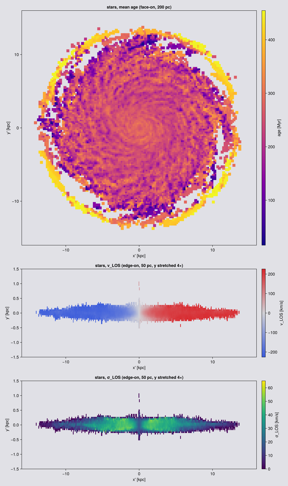
The age map is the panel that has no gas counterpart. It is a mass-weighted mean, so it reads as the mean age of the stars in each column rather than as an age of anything in particular. With equal-mass particles it would also be the number-weighted mean; this run has two particle masses, so the heavier stars pull it towards their own age.
What the angle does, and what it does not
Turning the camera cannot change the stellar mass. What it does change is the shape of the image and the kinematics, and both change in a way you can predict before you run it:
- the apparent axis ratio goes as
cos ifor a razor-thin disc. A real disc has thickness, soq² = cos²i + q₀²·sin²iandqstops above zero ati = 90. That is the relation observers invert to get an inclination out of an image (Hubble 1926; Holmberg 1958), and the residual at edge-on is the intrinsic thicknessq₀. - the line-of-sight velocity amplitude goes as
sin i, because only the component of the rotation along the ray is visible.
The first column below is not the conservation test, it is the fraction of the stellar mass the frame selected. fov with aperture=:circle selects a sphere, and a sphere looks the same from every angle, so that column should not move as the camera turns. What it falls short of 1 by is the stellar mass outside 16 kpc. Conservation itself needs a frame that crops nothing, so it is checked without fov.
# `:circle` again, so nothing is cropped and the "in frame" column must stay at 1. And one pixel size
# for every angle, 150 pc: this table measures a SHAPE, so the thickness of the disc has to be
# resolved at i = 90 and the same grid has to serve i = 0, which the figures above do not need.
aview = (axis=:angmom, center=[:bc], fov=16, fov_unit=:kpc, aperture=:circle,
pxsize=[0.15, :kpc], verbose=false, show_progress=false)
# flux-weighted second moments of the Σ image, above an isophotal cut so the faint rim does not
# set the shape
function axisratio(m; cut=0.05)
A = Float64.(m.maps[:sd]); e = getextent(m, :kpc)
xs = collect(range(e[1], e[2], length=size(A,1)))
ys = collect(range(e[3], e[4], length=size(A,2)))'
A = A .* (A .> cut * maximum(A))
W = sum(A); xb = sum(A .* xs) / W; yb = sum(A .* ys) / W
Sxx = sum(A .* (xs .- xb) .^ 2) / W
Syy = sum(A .* (ys .- yb) .^ 2) / W
Sxy = sum(A .* (xs .- xb) .* (ys .- yb)) / W
t = (Sxx + Syy) / 2; d = sqrt(((Sxx - Syy) / 2)^2 + Sxy^2)
sqrt((t - d) / (t + d))
end
println(rpad("i [deg]", 9), rpad("in frame", 11), rpad("axis ratio q", 15),
rpad("cos i", 9), rpad("v_amp [km/s]", 14), "v_amp / sin i")
for i in (0, 15, 30, 45, 60, 75, 90)
m = projection(part, [:sd, :vlos], [:Msol_pc2, :km_s]; inclination=i, aview...)
a = (m.pixsize * m.scale.pc)^2
s = Float64.(m.maps[:sd]); v = Float64.(m.maps[:vlos])
k = s .> 0.05 * maximum(s)
amp = (quantile(v[k], 0.98) - quantile(v[k], 0.02)) / 2
println(rpad(i, 9), rpad(round(sum(s) * a / Mtot, digits=4), 11),
rpad(round(axisratio(m), digits=3), 15), rpad(round(cosd(i), digits=3), 9),
rpad(round(amp, digits=1), 14),
i == 0 ? "n/a" : string(round(amp / sind(i), digits=1)))
endi [deg] in frame axis ratio q cos i v_amp [km/s] v_amp / sin i
0 1.0 0.992 1.0 5.3 n/a
15 1.0 0.96 0.966 60.4 233.5
30 1.0 0.864 0.866 115.5 230.9
45 1.0 0.712 0.707 162.6 229.9
60 1.0 0.503 0.5 199.3 230.2
75 1.0 0.262 0.259 223.2 231.1
90 1.0 0.031 0.0 207.5 207.5Five things to carry away.
:sd is the conserved map. If you need a stellar mass out of a map, it is sum(m.maps[:sd]) * (m.pixsize * m.scale.pc)^2, with m.pixsize and no aperture=:square crop. :mass is the mass-weighted mean particle mass, worth having for its own sake and not a total. The test suite checks that recipe over viewing angle, pixel size and both kernels.
fov gives points the same frame as cells, so a particle panel lines up with a gas panel without help. Use :circle when you need a total, because :square crops what lies outside the square.
:rho on particles divides the pixel mass by the whole box length, not by the depth you selected, so a slab's :rho is not a slab mean density. Use :sd.
Empty pixels are 0.0 almost everywhere, and NaN in one place. Every off-axis map writes 0.0, and so does an axis-aligned hydro map. The exception is the axis-aligned particle path, which divides two deposited grids, so an empty pixel of a weighted-mean map comes back NaN there. A filter(isfinite, ...) therefore keeps every empty off-axis pixel and quietly drags a median toward zero. Mask by :sd, as the figure above does.
Stellar L is not gas L. direction=:faceon on part takes the stars' own angular momentum and on gas the gas's, so a stars-versus-gas comparison in one frame needs one explicit axis=[lx, ly, lz] passed to both. The recipe at the end of the page makes the same argument for a time series.
12. Slices: a sample, not an integral
slice takes the same view keywords as projection and returns the cells the plane passes through. (offaxis_slice is a documented alias; prefer slice.) Given slice_axis/slice_pos instead of a view it cuts along a box axis, which the covering grid page covers.
It is a nearest-cell sample, not an integral:
- Nothing is conserved, because no ray is integrated. Never sum a slice.
- Empty (NaN) pixels are geometry, not failure: where the plane threads between refinement levels there is no cell.
- The tilted blocks are the true shape of the cut. A plane crossing an axis-aligned cube at an angle gives a quadrilateral cross-section.
What a slice can report per pixel, since exactly one cell owns each:
| field | is |
|---|---|
sl.map | the value, NaN where nothing was painted |
sl.coverage | which pixels were painted |
sl.cellsize | the size of the cell that won each pixel |
sl.depth | how far along the view that cell sat |
There is no cell count, because it would read 1 everywhere. cellsize against pixsize is the useful one: where the cell is larger than the pixel, the extra pixels carry no extra information.
On slice, xrange/yrange are the camera-plane window. There is no fov and no binning, it takes one variable, and it works on cell data only. Depth is set by offset, not zrange. slice(part, …) is a MethodError by design; the particle equivalent is a projection of finite thickness (Chapter 11). Its .extent and .center are code units, unlike a map's.
view = (inclination=60, azimuth=30, axis=:angmom, center=[:bc])
# 100 pc pixels, the page standard. The mesh here runs from 0.75 kpc at level 6 down to 0.012 kpc
# at level 12, so a 100 pc pixel sits at about level 9: finer than the cells in the disc, coarser
# than the cells in the outskirts. Wherever a cell is coarser than the pixel, both panels paint it
# as a flat block. On the slice that is exactly what a nearest-cell sample is; on the
# projection it is the cell's own shadow. Chapter 7 treats pixel-versus-cell size properly.
sl = slice(gas, :rho, :nH; view..., xrange=[-15,15], yrange=[-15,15],
range_unit=:kpc, pxsize=[0.1,:kpc], verbose=false)
# projection: same view, and `fov` is how you get the SAME ±15 kpc camera frame
pr = projection(gas, :rho, :nH; view..., fov=15, fov_unit=:kpc, aperture=:square,
pxsize=[0.1,:kpc], verbose=false, show_progress=false)
println("slice frame ", size(sl.map), " ", round(100*count(isnan, sl.map)/length(sl.map), digits=1), " % NaN")
println("projection frame ", size(pr.maps[:rho]))
println("slice extent [kpc] = ", round.(sl.extent .* gas.scale.kpc, digits=1))slice frame (300, 300) 0.0 % NaN
projection frame (301, 301)
slice extent [kpc] = [-15.0, 15.0, -15.0, 15.0]Moving the plane: offset
The keywords so far set the plane's orientation. offset sets its position, sliding it along the line of sight, which is what turns a single cut into a fly-through. offset=0 (the default) puts the plane through center, and offset_unit defaults to range_unit.
The axis-aligned path spells the same idea slice_pos/slice_unit.
Sweeping it is how you build a slice movie: compute one map per offset and hand the stack to savemovie.
using Statistics
println(rpad("offset [kpc]", 14), rpad("filled px", 12), "median nH [cm^-3]")
for off in (-15.0, -5.0, 0.0, 5.0, 15.0)
slo = slice(gas, :rho, :nH; view..., xrange=[-15,15], yrange=[-15,15], range_unit=:kpc,
pxsize=[0.1,:kpc], offset=off, offset_unit=:kpc, verbose=false)
f = filter(isfinite, slo.map)
println(rpad(off, 14), rpad(length(f), 12),
isempty(f) ? "-" : round(median(f), sigdigits=4))
endoffset [kpc] filled px median nH [cm^-3]
-15.0 89668 6.559e-6
-5.0 90000 3.132e-5
0.0 90000 3.893e-5
5.0 90000 3.046e-5
15.0 89668 6.93e-6Every offset fills the frame except the two extremes, where the plane runs past the selected data and 332 pixels of 90,000 come back empty. The density changes with depth: the plane is moving through the object rather than being re-drawn in place. offset=0 returns exactly what omitting the keyword returns.
The axis values do not move with offset, and that is correct. The offset slides the plane along the line of sight, which points out of the image, so the same x'/y' window is sampled at a different depth. All three panels therefore carry identical axis numbers. What changes between them is which cells the plane passes through, not where the plane sits in the picture.
# What `offset` does, in pictures rather than in a table: the same plane, moved along the line of
# sight. Three slices, no new keywords, and cheap.
offs = (-4.0, 0.0, 4.0)
cuts = [slice(gas, :rho, :nH; view..., xrange=[-15,15], yrange=[-15,15], range_unit=:kpc,
pxsize=[0.1,:kpc], offset=o, offset_unit=:kpc, verbose=false) for o in offs]
println("filled pixels per panel: ",
[count(isfinite, c.map) for c in cuts], " of ", length(cuts[1].map))
# ── figure code from here: drawing only, nothing new about Mera ──
# These three DO share one colour range, unlike the pair above: they are the same quantity,
# sampled the same way, at three depths. Only then is a shared bar meaningful.
Ls = [log10.(replace(Float64.(c.map), 0.0 => NaN)) for c in cuts]
allv = filter(isfinite, reduce(vcat, vec.(Ls)))
crs = (quantile(allv, 0.02), quantile(allv, 0.999))
ec = cuts[1].extent .* gas.scale.kpc
fig = Figure(size=(1180, 400)); hm = nothing
for (j, o) in enumerate(offs)
ax = Axis(fig[1,j], aspect=DataAspect(), title="offset = $(o) kpc",
xlabel="x' [kpc]", ylabel = j == 1 ? "y' [kpc]" : "")
j > 1 && hideydecorations!(ax, grid=false)
hm = heatmap!(ax, range(ec[1], ec[2], length=size(Ls[j],1)),
range(ec[3], ec[4], length=size(Ls[j],2)), Ls[j];
colormap=:viridis, colorrange=crs, nan_color=EMPTY_COLOUR, interpolate=false)
end
Colorbar(fig[1,4], hm, label="log10 n_H [cm⁻³]")
figfilled pixels per panel: [90000, 90000, 90000] of 90000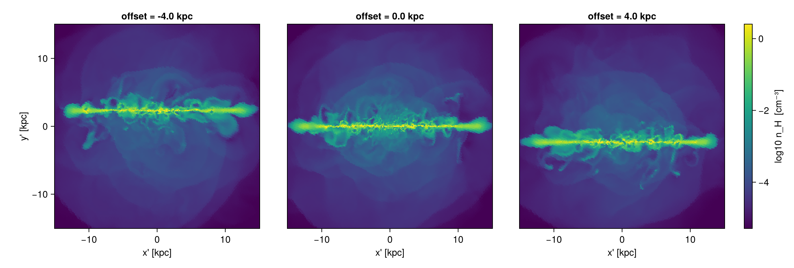
The two slice movies
Sweeping offset at a fixed orientation gives a travelling plane: the camera holds still and the cut moves through the object. Sweeping an angle at a fixed offset gives a rotating plane: the cut stays put and turns.
One thing to get right for either: pin xrange/yrange. slice has no fov, so without a window it auto-fits to the cells it painted, and that footprint changes as the plane moves or turns. The frames then differ in size, which makes them useless as a movie. A fixed window makes every frame the same shape.
# 100 pc, to match the rest of Chapter 12. A slice costs what it costs to scan the cells, about
# the same at 500 pc as at 100 pc, so the finer grid is free here. The frame COUNT is what
# prices this cell.
mwin = (xrange=[-15,15], yrange=[-15,15], range_unit=:kpc, pxsize=[0.1,:kpc], verbose=false)
toffsets = -10:1:10 # kpc, the travelling plane
rangles = 0:6:174 # degrees of inclination, the rotating plane
travelling = [slice(gas, :rho, :nH; view..., mwin..., offset=o, offset_unit=:kpc).map
for o in toffsets]
rotating = [slice(gas, :rho, :nH; inclination=a, azimuth=30, axis=:angmom,
center=[:bc], mwin...).map for a in rangles]
println("travelling: ", length(travelling), " frames, all ",
all(size(m) == size(travelling[1]) for m in travelling) ? "the same size" : "DIFFERENT sizes")
println("rotating : ", length(rotating), " frames, all ",
all(size(m) == size(rotating[1]) for m in rotating) ? "the same size" : "DIFFERENT sizes")
# ── figure code from here: drawing only, nothing new about Mera ──
# One colour range per movie, fixed over all its frames, so a change in brightness is a change in
# the gas and not a rescaled colour bar. `NaN` is where the plane painted nothing.
function slicegif(path, stack, labels, title)
v = filter(x -> isfinite(x) && x > 0, reduce(vcat, vec.(stack)))
cr = (log10(quantile(v, 0.02)), log10(maximum(v)))
fig = Figure(size=(360, 380))
ax = Axis(fig[1, 1], aspect=DataAspect())
hidedecorations!(ax)
record(fig, path, eachindex(stack); framerate=8) do k
empty!(ax)
ax.title = "$(title): $(labels[k])"
A = log10.(replace(Float64.(stack[k]), 0.0 => NaN))
heatmap!(ax, A; colormap=:viridis, colorrange=cr, nan_color=EMPTY_COLOUR, interpolate=false)
end
println("wrote ", path, " (", length(stack), " frames, ",
round(filesize(path) / 1024, digits=1), " KB)")
end
mkpath("assets/offaxis")
slicegif("assets/offaxis/slice_travelling.gif", travelling, ["offset $(o) kpc" for o in toffsets], "travelling")
slicegif("assets/offaxis/slice_rotating.gif", rotating, ["i = $(a)°" for a in rangles], "rotating")travelling: 21 frames, all the same size
rotating : 30 frames, all the same size
wrote assets/offaxis/slice_travelling.gif (21 frames, 2429.9 KB)
wrote assets/offaxis/slice_rotating.gif (30 frames, 4062.9 KB)The two movies, both of log n_H on the plane. On the left the plane moves along the line of sight through the disc at a fixed inclination of 60°; on the right it stays at the centre and turns from face-on (i = 0°) towards edge-on.

offset from −10 to +10 kpc
A stack of slices can also go into a MeraMovie and then savemovie. For projections rather than slices, getmovie does the loop for you and adds camera motion over a whole series of snapshots (angles, sweep).
# ── figure code from here: drawing only, nothing new about Mera ──
# ONE COLOUR RANGE PER PANEL, on purpose. A column integral and a single-cell sample are not the
# same quantity and are orders of magnitude apart, so a shared scale pushes the slice onto the
# floor of the bar and shows a flat dark square. Each panel gets its own range and its own bar.
As = log10.(replace(Float64.(sl.map), 0.0 => NaN))
Ap = log10.(replace(Float64.(pr.maps[:rho]), 0.0 => NaN))
rng(A) = (v = filter(isfinite, vec(A)); (quantile(v, 0.02), maximum(v)))
es = sl.extent .* gas.scale.kpc
fig = Figure(size=(1000, 420))
ax1 = Axis(fig[1,1], aspect=DataAspect(), title="projection: column integral",
xlabel="x' [kpc]", ylabel="y' [kpc]")
h1 = showmap!(ax1, pr, :rho; crange=rng(Ap), cmap=:viridis)
Colorbar(fig[1,2], h1, label="log10 n_H [cm⁻³]")
ax2 = Axis(fig[1,3], aspect=DataAspect(), title="slice: nearest-cell sample", xlabel="x' [kpc]")
h2 = heatmap!(ax2, range(es[1], es[2], length=size(As,1)),
range(es[3], es[4], length=size(As,2)), As;
colormap=:viridis, colorrange=rng(As), nan_color=EMPTY_COLOUR, interpolate=false)
Colorbar(fig[1,4], h2, label="log10 n_H [cm⁻³]")
hideydecorations!(ax2, grid=false)
fig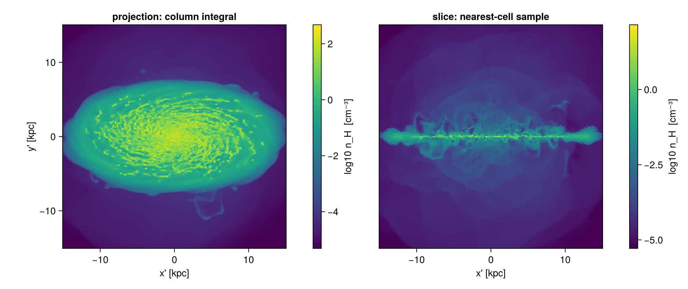
The two panels do not share a colour scale, and they cannot. A projection sums density along kiloparsecs of path; a slice reads one cell. The numbers are orders of magnitude apart and they are not the same quantity, so a shared bar would flatten the slice onto its floor and show nothing. Each panel carries its own range and its own bar. Compare the two in shape, never pixel for pixel.
Two things in the left panel are the selection rather than the gas, and both show up in every fov projection:
- the soft darkening into the corners is the selection sphere tapering to zero depth at the corners of a
:squareframe (Chapter 3); - any flat, straight-edged plateau is a single AMR cell painted across several pixels. At 100 pc pixels the mesh is finer than the pixel in the disc and coarser in the outskirts, where levels 6 to 9 run from 0.75 down to 0.094 kpc, so the outskirts are where to look for them.
Neither is an error, and the mass is right either way (Chapter 8). Both appear when a map asks for more detail than the data has.
The same exercise on points: a slab, not a plane
A plane cannot sample a star, so the slice figures above have no star version. The counterpart for stars is a slab: a projection with a small depth. It answers the same question as a slice, for a thickness you choose.
A slice reports one cell per pixel; a slab reports everything inside a given depth. For point data only the slab exists.
The slab moves in depth the way offset moved the plane. The view is face-on, so the line of sight is the z axis, and moving the slab in z moves it towards or away from the observer.
# A slab is a projection with a narrow depth, so nothing new is needed: `zrange` sets the depth,
# measured from `center`. Face-on here, so `z` IS the line of sight and moving the slab in `z`
# moves it towards and away from the observer, exactly as `offset` moved the plane.
#
# TWO THINGS THIS CELL HAD TO GET RIGHT, both measured rather than assumed:
#
# 1. `fov` and `zrange` do not combine. `fov` selects a sphere of radius `fov` in the camera plane
# and the depth is then the sphere, so passing both keeps the sphere and the `zrange` does
# nothing: measured here, the "slab" came back holding 100 % of the stellar mass. Use world
# ranges when you want a depth, which is what this cell does.
# 2. The depths have to match the object. This stellar disc is thin: median |z| is 34 pc and the
# 99th percentile is 154 pc, so slabs at a kiloparsec would all have been empty.
slabs = [(-0.05, 0.05), (0.05, 0.10), (0.10, 0.20)] # kpc from the box centre
slabmaps = [projection(part, :sd, :Msol_pc2; direction=:faceon, center=[:bc],
xrange=[-16,16], yrange=[-16,16], zrange=[lo, hi], range_unit=:kpc,
pxsize=[0.2,:kpc], verbose=false, show_progress=false)
for (lo, hi) in slabs]
mstar_tot = msum(part, :Msol)
println(rpad("slab [kpc]", 16), rpad("thickness", 12), rpad("share of stellar mass", 24), "filled px")
for ((lo, hi), m) in zip(slabs, slabmaps)
frac = sum(m.maps[:sd]) * (m.pixsize * m.scale.pc)^2 / mstar_tot
println(rpad("$(lo) … $(hi)", 16), rpad("$(round(Int,(hi-lo)*1000)) pc", 12),
rpad(string(round(100*frac, digits=2), " %"), 24), count(!iszero, m.maps[:sd]))
end
# ── figure code from here: drawing only, nothing new about Mera ──
# One colour range across the three, because they are the same quantity at three depths: only then
# does "the midplane slab is denser" mean anything.
scr2 = sharedrange(slabmaps, :sd)
fig = Figure(size=(1180, 400))
for (j, ((lo, hi), m)) in enumerate(zip(slabs, slabmaps))
ax = Axis(fig[1,j], aspect=DataAspect(), title="stars, z = $(lo) … $(hi) kpc",
xlabel="x' [kpc]", ylabel = j == 1 ? "y' [kpc]" : "")
j > 1 && hideydecorations!(ax, grid=false)
showmap!(ax, m, :sd; crange=scr2)
limits!(ax, -16, 16, -16, 16)
end
figslab [kpc] thickness share of stellar mass filled px
-0.05 … 0.05 100 pc 66.41 % 12853
0.05 … 0.1 50 pc 15.57 % 9063
0.1 … 0.2 100 pc 4.71 % 7023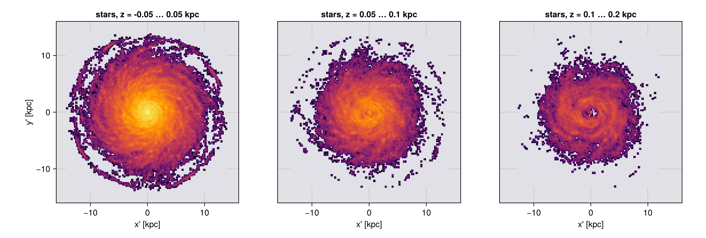
The midplane slab holds most of the young stars and the higher ones thin out fast, which is the vertical structure of the disc seen one layer at a time. Nothing here needed a new keyword: a slab is a projection with a depth, and the depth is zrange.
One trap, measured above rather than guessed. fov and zrange do not combine. fov selects a sphere, and that sphere sets the depth too, so a zrange passed alongside it is silently ignored: the first attempt at this figure reported a "100 pc slab" holding 100 % of the stellar mass. If you want a depth, use world ranges.
Two limits worth stating plainly. The slab is a world-space depth, so this construction is exact when the line of sight is a box axis, as it is here; at a general angle a fixed zrange is a slab through the box and not through the camera, which is the same warning Chapter 3 gives about xrange/yrange. And a slab is still an integral over its depth, so it is a thin projection and not a sample: :sd inside it conserves, while a slice never claimed to.
13. Turning the camera: orbit movies
rotation_sequence renders one variable over a list of angles and returns a Vector of maps. sweep=:azimuth (default), :inclination or :position_angle picks which angle varies. It calls projection once per angle, so the same sweep runs on particles.
It uses the framing rule of Chapter 3, swept: a rotation-invariant sphere, aperture=:circle or :square. That is why it exists, because a cubic window's rotated bounding box changes size frame by frame and the movie breathes.
Omit fov here and it auto-fits to the 99 % enclosed-mass radius, so the frame follows the object rather than the sparse outermost cells. projection has no auto-fit: omit fov there and you are back on world ranges. Pass fov explicitly whenever it matters.
parallel_frames=true runs frames concurrently with single-threaded projections, typically 1.5 to 2 times faster when there are at least as many frames as threads, at proportionally more transient memory. Keep the total at or below 8 threads on a laptop.
frames = rotation_sequence(gas, :sd, :Msol_pc2; sweep=:azimuth, angles=0:90:270,
inclination=55, axis=:angmom, center=[:bc],
fov=16, fov_unit=:kpc, aperture=:square,
pxsize=[0.1,:kpc], parallel_frames=false)
# The numerical proof that the frame does not breathe, stronger than watching it.
for (a, f) in zip(0:90:270, frames)
println("azimuth ", lpad(a,3), "° frame ", size(f.maps[:sd]),
" extent [kpc] = ", round.(getextent(f, :kpc), digits=3))
endazimuth 0° frame (321, 321) extent [kpc] = [-16.017, 16.017, -16.017, 16.017]
azimuth 90° frame (321, 321) extent [kpc] = [-16.017, 16.017, -16.017, 16.017]
azimuth 180° frame (321, 321) extent [kpc] = [-16.017, 16.017, -16.017, 16.017]
azimuth 270° frame (321, 321) extent [kpc] = [-16.017, 16.017, -16.017, 16.017]# ── figure code from here: drawing only, nothing new about Mera ──
# The frames are already computed above; showing them is the visual half of the same claim.
cr = sharedrange(frames, :sd)
display(maprow(collect(frames), :sd, ["azimuth $(a)°" for a in 0:90:270]; crange=cr))
# The same four angles on the stars. `rotation_sequence` took `part` instead of `gas` and nothing
# else changed. `aperture=:circle` for the reason Chapter 3 gives, and the axes are pinned to the
# gas window so the two rows are at one scale.
sframes = rotation_sequence(part, :sd, :Msol_pc2; sweep=:azimuth, angles=0:90:270,
inclination=55, axis=:angmom, center=[:bc],
fov=16, fov_unit=:kpc, aperture=:circle,
pxsize=[0.1,:kpc], parallel_frames=true)
sfigm = maprow(collect(sframes), :sd, ["stars, azimuth $(a)°" for a in 0:90:270];
crange=sharedrange(sframes, :sd))
for k in 1:4
limits!(contents(sfigm[1,k])[1], -16, 16, -16, 16)
end
sfigm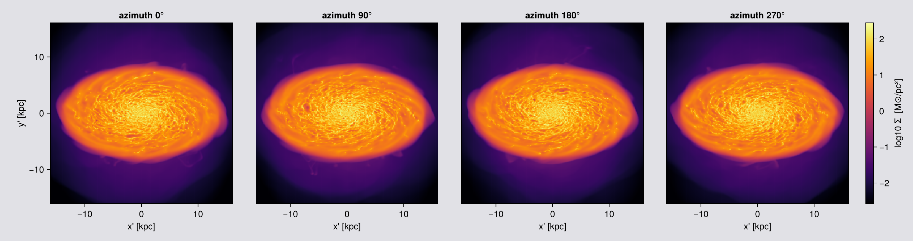
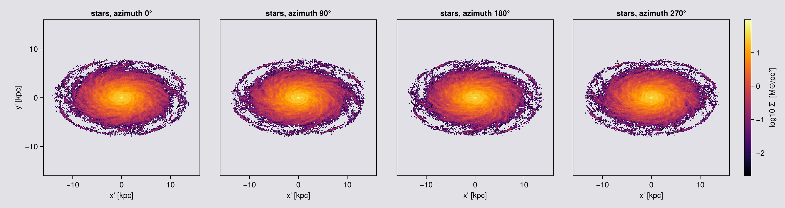
Four azimuths, and the frame size and extent are the same to three decimals, in the pictures and in the numbers. That is what makes the sequence usable as a movie: the frame does not change size, so the eye sees a turn, not a zoom.
Turning the frames into a movie is one Makie.record call. Makie brings its own ffmpeg (through FFMPEG_jll), so nothing has to be installed, and the movie below is made by the notebook itself.
Frames or pixels? A frame costs mostly the time to read the cells, and a finer pixel adds little while the pixel is larger than the cells. So spend the time on frames, which make the turn smooth; the pixel size is nearly free. Below the cell size this reverses (Chapter 1). The movie below has 120 frames at 100 pc pixels, about as fine as its 300 px canvas can show.
# Rendered here rather than pasted in, so the movie can never drift from the code above.
#
# The four frames above are for READING: a montage you compare panel by panel. A movie wants many
# more, or the orbit steps rather than turns. `record` writes exactly one GIF frame per rendered
# projection, so the angle step IS the smoothness: 120 angles at 3 degrees is one revolution, and
# at framerate 30 that revolution takes 4 seconds. Same camera, same fixed FOV, so nothing else
# about the sequence changes.
#
# Cost, since this is the slowest cell on the page: of order 10 s per frame at 4 threads, so 120
# frames is tens of minutes, and `parallel_frames=true` brings that down by rendering frames
# concurrently. On the page's own run this chapter takes most of the hour.
smooth = rotation_sequence(gas, :sd, :Msol_pc2; sweep=:azimuth, angles=0:3:357,
inclination=55, axis=:angmom, center=[:bc],
fov=16, fov_unit=:kpc, aperture=:square,
pxsize=[0.1,:kpc], parallel_frames=true)
cr = sharedrange(smooth, :sd) # one colour range across the whole orbit
fig = Figure(size=(300, 300))
# at 100 pc the map is 321 px across against a 300 px
# canvas, so the GIF shows essentially every map pixel
ax = Axis(fig[1, 1], aspect=DataAspect(), title="orbit movie (fixed FOV, square)")
hidedecorations!(ax)
mkpath("assets/offaxis")
record(fig, "assets/offaxis/orbit_movie.gif", eachindex(smooth); framerate=30) do k
empty!(ax)
showmap!(ax, smooth[k], :sd; crange=cr)
end
println("wrote assets/offaxis/orbit_movie.gif (", length(smooth), " frames, ",
round(filesize("assets/offaxis/orbit_movie.gif") / 1024, digits=1), " KB)")
println("map size: ", size(smooth[1].maps[:sd]), " every frame the same size: ",
all(size(f.maps[:sd]) == size(smooth[1].maps[:sd]) for f in smooth))
# THE SAME ORBIT ON THE STARS. Same sweep, same angles, same framerate, so the two GIFs are frame
# for frame comparable: whatever differs between them is the data, not the camera.
#
# This one is cheap: `rotation_sequence` is not hydro-only, it just calls `projection` per angle,
# and 628 thousand points against 51.5 million cells is why the gas movie above takes tens of
# minutes and this one takes a couple.
# One change from the gas call: `aperture=:circle`, so the in-frame mass printed below is the
# whole sphere and not a square crop of it. The stars do not fill the fov=16 sphere, but `fov`
# fixes the frame, so every star frame is the same size at every angle, just as for the gas.
sstar = rotation_sequence(part, :sd, :Msol_pc2; sweep=:azimuth, angles=0:3:357,
inclination=55, axis=:angmom, center=[:bc],
fov=16, fov_unit=:kpc, aperture=:circle,
pxsize=[0.1,:kpc], parallel_frames=true)
println("star frame sizes over the orbit: ", length(unique(size.(getindex.(getfield.(sstar, :maps), :sd)))),
" distinct, as for the gas movie above")
Mstar_orbit = msum(part, :Msol) # reference for the in-frame fraction printed below
crs_star = sharedrange(sstar, :sd) # one colour range across the whole orbit, as for the gas
figs = Figure(size=(300, 300))
axs = Axis(figs[1, 1], aspect=DataAspect(), title="stars: orbit movie (fixed FOV, circle)")
hidedecorations!(axs)
record(figs, "assets/offaxis/orbit_movie_stars.gif", eachindex(sstar); framerate=30) do k
empty!(axs)
showmap!(axs, sstar[k], :sd; crange=crs_star)
end
println("wrote assets/offaxis/orbit_movie_stars.gif (", length(sstar), " frames, ",
round(filesize("assets/offaxis/orbit_movie_stars.gif") / 1024, digits=1), " KB)")
# What the mass does over the orbit. The circular aperture at fov=16 selects a sphere of radius
# 16 kpc, and on this run every star is inside it, so nothing is cropped: the printed fraction is
# 100 % and the total does not move as the camera turns, to machine precision. That is a real
# result and a weak test at the same time. It shows the framing moves no mass, but it only holds
# while the aperture contains everything; point it at a run with stars beyond 16 kpc and the same
# line would report a crop. The test suite runs the version that does not depend on framing.
tot = [sum(m.maps[:sd]) * (m.pixsize * m.scale.pc)^2 for m in sstar]
println("stellar mass in frame over the orbit: ", round(100*(maximum(tot)-minimum(tot))/mean(tot), sigdigits=3),
" % peak-to-peak of the mean, and ", round(100*mean(tot)/Mstar_orbit, digits=2),
" % of the total stellar mass is inside the frame")wrote assets/offaxis/orbit_movie.gif (120 frames, 13557.4 KB)
map size: (321, 321) every frame the same size: true
star frame sizes over the orbit: 1 distinct, as for the gas movie above
wrote assets/offaxis/orbit_movie_stars.gif (120 frames, 6510.3 KB)
stellar mass in frame over the orbit: 2.37e-14 % peak-to-peak of the mean, and 100.0 % of the total stellar mass is inside the frameThe same orbit, gas on the left and stars on the right. The camera is identical; only the data handed to it changed.


Both frames are constant by construction: fov fixes the frame, whether the data fills the sphere (the gas) or not (the stars). The stellar disc sits in the middle of its frame with empty sky around it, at the same scale as the gas.
14. Reading the result, and fixing a map that looks wrong
Everything needed to debug an off-axis map travels on the result.
| field | is |
|---|---|
m.los, m.up, m.cam_right | the basis actually used. Not what you expected means the view specifier or center is wrong, not the renderer |
m.center | a box fraction on a map (a slice result's .center is code units) |
m.direction | :offaxis |
m.maps_lmax | empty, off-axis and axis-aligned alike |
m.maps_weight | AMR maps only, not particle ones |
m.pixsize, m.extent | code units; use getextent(m, :kpc) |
Orientation. position_angle= rolls the image about ŵ; up= pins image y outright. Without up= the camera uses world +z as its hint, falling back to +y when the line of sight is within 3 degrees of the z axis. That fallback is a discontinuity: a sweep that passes through the pole will jump there. Pin up= for any hand-written sweep, or use rotation_sequence, which sets a hint for you.
Grid diagnostics. gridoverlay(gas; level=:max, <same view kwargs>) draws the AMR structure in the camera frame. Off-axis it draws cell-size squares at rotated cell centres, not the true hexagonal footprints, so it tells you where and how big cells are, not what shape their shadows have.
savemap(fo, joinpath(tempdir(), "faceon_sd.jld2"), verbose=false)
fo2 = loadmap(joinpath(tempdir(), "faceon_sd.jld2"), verbose=false)
println("camera survives the round trip : ", fo2.los == fo.los && fo2.up == fo.up)
println(".center (box fraction) : ", round.(fo.center, digits=3))
println(".maps_lmax off-axis : ", isempty(fo.maps_lmax) ? "empty (by design)" : "populated")
println(".direction : ", fo.direction)camera survives the round trip : true
.center (box fraction) : [0.5, 0.5, 0.5]
.maps_lmax off-axis : empty (by design)
.direction : offaxisTroubleshooting, the symptoms that send people looking for a bug:
| symptom | cause | fix |
|---|---|---|
| an off-axis column density integrates the whole box, or a depth that changes across the frame | world ranges do not follow the camera, and a fov sphere is a chord | depth (Chapter 4), the one cut measured along the line of sight |
:edgeon looks face-on, or the disc is tilted at a random angle | L computed about the box corner | pass center=[:bc] (Chapter 6) |
| "face-on" is off by 10 to 30 degrees for a warped or fountain-rich disc | L over the full box is dominated by slow, high-lever-arm CGM gas | take :angmom on an inner-disc subregion, then project the full data with that explicit los= (the recipe at the end of the page) |
| straight edges cut across the map; the frame is bigger than requested | world-space xrange/yrange | fov + fov_unit + aperture=:square (Chapter 3) |
| the galaxy is a dot in a huge frame | fov without fov_unit, 16 box lengths, clamped | always pair them (Chapter 3) |
projection(gas, :vlos; direction=:z) errors in getvar | :vlos/:σlos exist only in the off-axis engine | write los=[0,0,1] (Chapter 8) |
| holes or moiré in a zoomed map | :cic/:ngp with pixels finer than cells | binning=:overlap (Chapter 7) |
| an orbit movie tumbles across snapshots | direction=:faceon recomputed per snapshot; L drifts | freeze one los= (the recipe at the end of the page) |
| a star σ map is full of exact zeros | those pixels hold one star, and one point has no spread | coarsen the pixel until pixels hold several stars (Chapter 11) |
| a star median comes out at zero | empty off-axis pixels are 0.0, not NaN, so filter(isfinite, …) keeps them | filter on > 0, not on isfinite |
And when re-plotting is the slow part, do not re-project: savemap / loadmap round-trip the whole object, every map and unit, the geometry, the camera basis and the simulation info.
Limitations, in one place
What the chapters above establish, one line each. One thing that is not a limitation, because the test suite pins it: the map total is the object's total to a few machine epsilon at any angle, pixel size, kernel and nmax.
| Orthographic only | parallel rays, observer at infinity. No perspective, no view from inside the box |
| World ranges are not depth | xrange/yrange/zrange are world space and the frame auto-fits the rotated footprint. For a cut along the view, use depth (Chapter 4) |
zrange can be a no-op | an axis whose requested range already covers the loaded data is not clipped at all |
| Cuts are cell-centre by default | a straddling cell is kept or dropped whole, so a world-range selection is accurate to about one cell per face (0.75 kpc at level 6 here). split=true weights depth and fov by volume instead (Chapter 5); world ranges stay cell-centre |
| Border fold-back | a deposit that crosses the map edge is added to the edge pixel. It rarely happens off-axis, because the frame is padded so border cells fit. A square crop or the face of a world-range box does reach the edge, so the outermost row is still not a clean measurement |
fov traps | fov_unit defaults to a box fraction; fov replaces xrange/yrange/zrange; center is then read in fov_unit |
A mask changes the frame without fov | the extent fits the selected cells, so masked and unmasked maps do not share a pixel grid. With fov they do (Chapter 10) |
| Frames match, but not bit-exactly | aperture=:square gives identical pixel dimensions and physical scale at every angle; co-registration is good to the auto-fit rounding |
nmax=64 | zoom far enough into a coarse region and :overlap deposits a top-hat rather than a 64³ lattice. It costs placement, not mass: measured on this snapshot, a 43.7-fold change in per-pixel agreement with :exact while the total never leaves ±2 machine epsilon. Raise nmax, or use :exact |
| Off-axis ≠ axis-aligned pixel grids | differencing los=[0,0,1] against direction=:z shows a sub-pixel origin offset. A grid convention, not an error |
| Axis-aligned only | :r_cylinder, :r_sphere, :ϕ. They describe the pixel's own geometry, and an off-axis pixel is a slanted column |
:mass is a mean on particles | unless you pass mode=:sum. On cell data it is the summed column (Chapter 9) |
| Result-object quirks | maps_lmax is empty; maps_weight is AMR-only; .center is a box fraction on a map but code units on a slice; a mass-weighted call returns a bonus :sd map; lmax off-axis only sets the default resolution and never coarsens the data |
Where the guarantees are measured
The page relies on a few guarantees, above all that a map total equals the object's total. These are the tests in the repository that hold them in place.
| claim | test |
|---|---|
mass, gas: summed map against msum, swept over line of sight, resolution and binning | test/34_offaxis_invariance_tests.jl |
mass, stars: sum(:sd) · pixel area against the particle mass | the same file |
| the keyword surface this page demonstrates, including non-power-of-two pixel counts | test/68_offaxis_api_tests.jl |
depth, fov=[wx,wy], angmom_radius, split, mode=:sum, the count maps, masking under fov, the dispersion tensor trace | test/36_offaxis_features_tests.jl |
| the deposit kernels against closed-form answers, with no simulation data | test/42_kernel_oracle_tests.jl |
:vlos is antisymmetric about the minor axis edge-on and near zero face-on, the check in Chapter 8. It is also how you catch a mis-centred center before it quietly tilts every map.
Recipe: one fixed orientation across a time series
The most common way a multi-snapshot off-axis analysis goes wrong: direction=:faceon is called per snapshot, the disc's L drifts (warp, bar, merger, an infalling satellite), and the resulting movie tumbles or the measured inclination wanders.
The fix is to compute the orientation once, on the region you actually mean, and then freeze it:
# NOT EXECUTED: this page uses a single output (output_00390).
# Shown for the mechanics; substitute your own output list.
# 1. Orientation from the INNER DISC of one reference snapshot, not the whole box.
# L over the full box is dominated by slow, high-lever-arm CGM gas, which is
# why a whole-box "face-on" can be 10 to 30 degrees off for a warped or fountain-rich disc.
ref = loaddata(390, path, :hydro; verbose=false)
disc = subregion(ref, :cylinder, radius=8., height=2., range_unit=:kpc,
center=[:bc], verbose=false)
Lfix = [sum(getvar(disc, :lx, center=[:bc])),
sum(getvar(disc, :ly, center=[:bc])),
sum(getvar(disc, :lz, center=[:bc]))]
Lfix ./= sqrt(sum(abs2, Lfix))
# 2. Project every snapshot with that ONE frozen line of sight and a fixed FOV.
# `up=` is pinned too. The default hint is world +z, which is stable, but it
# falls back to +y if a line of sight comes within 3 degrees of z, and that is a jump.
for out in outputs
g = loaddata(out, path, :hydro; verbose=false)
m = projection(g, :sd, :Msol_pc2; los=Lfix, up=[0,0,1], center=[:bc],
fov=16, fov_unit=:kpc, aperture=:square, pxsize=[0.3,:kpc],
verbose=false, show_progress=false)
savemap(m, "faceon_$(out).jld2", verbose=false)
endA drifting orientation is not a cosmetic problem: viewing angle biases the quantities measured from an image, so a time series taken at a wandering angle is not a time series of the galaxy (Bottrell et al. 2017). Gas L and stellar L are not the same vector either (bars, warps, counter-rotating components), so decide which tracer defines your frame and stick to it. And note that this is also how you get a comparable frame: the same los, the same fov, the same pxsize, so every snapshot is the same camera.